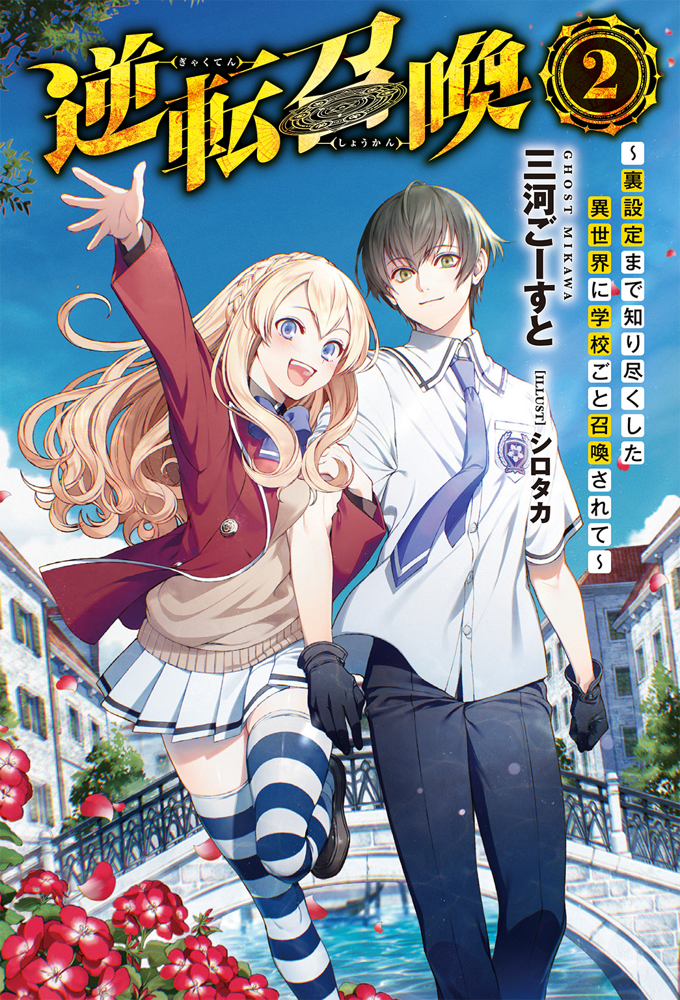
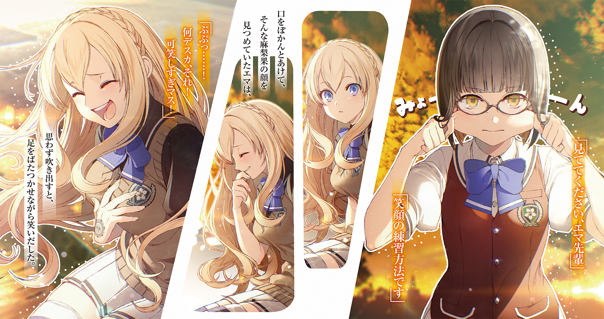
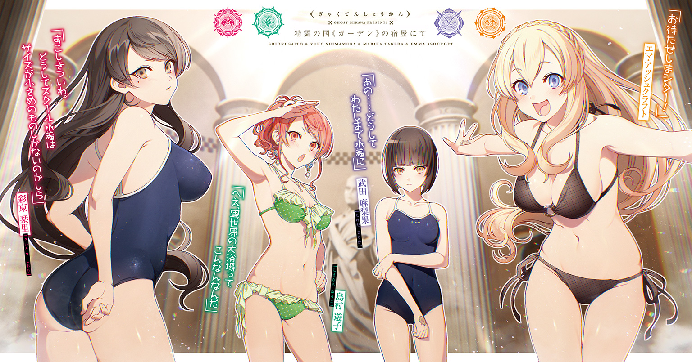
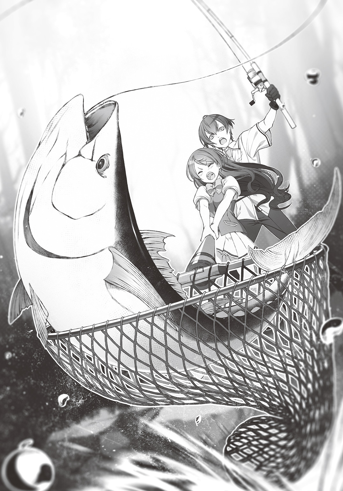
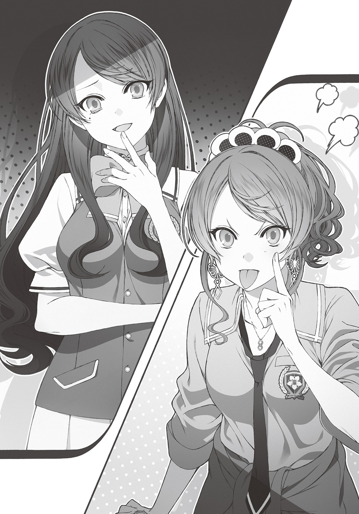
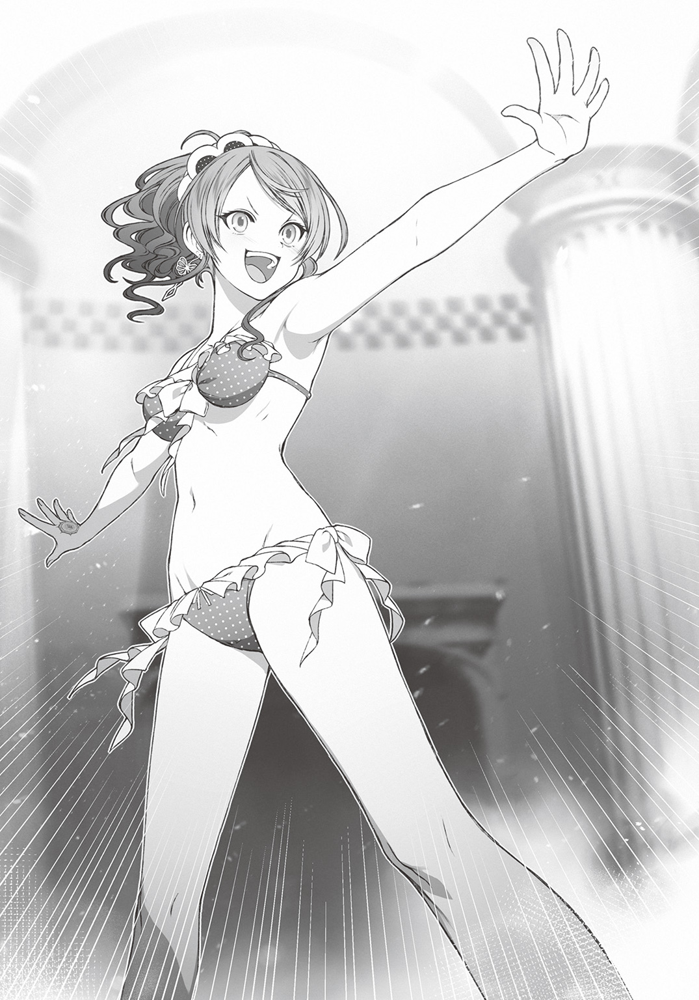
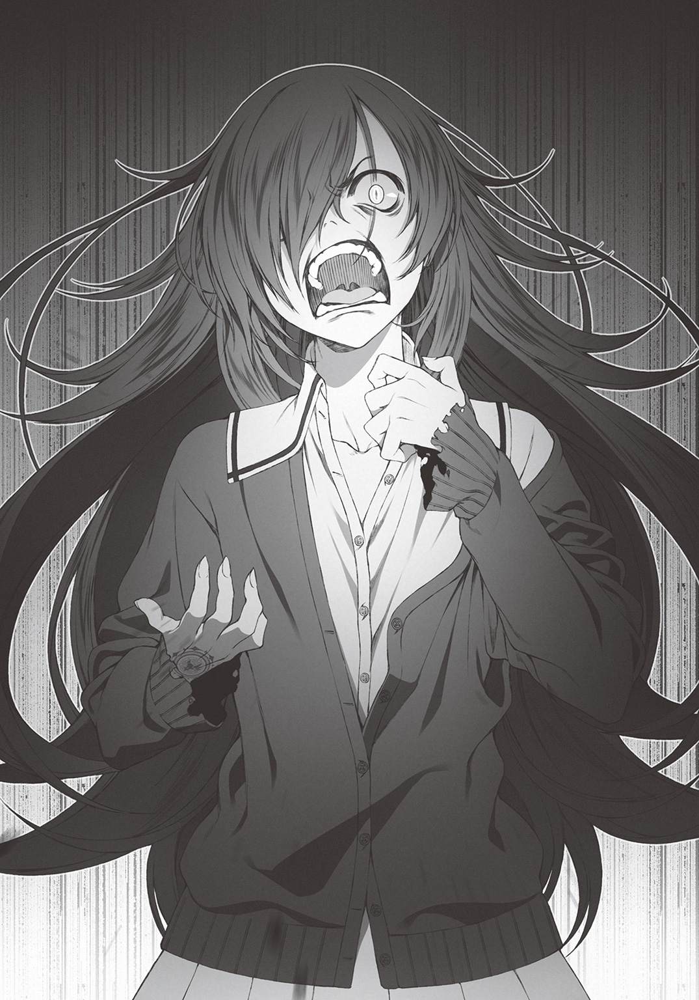
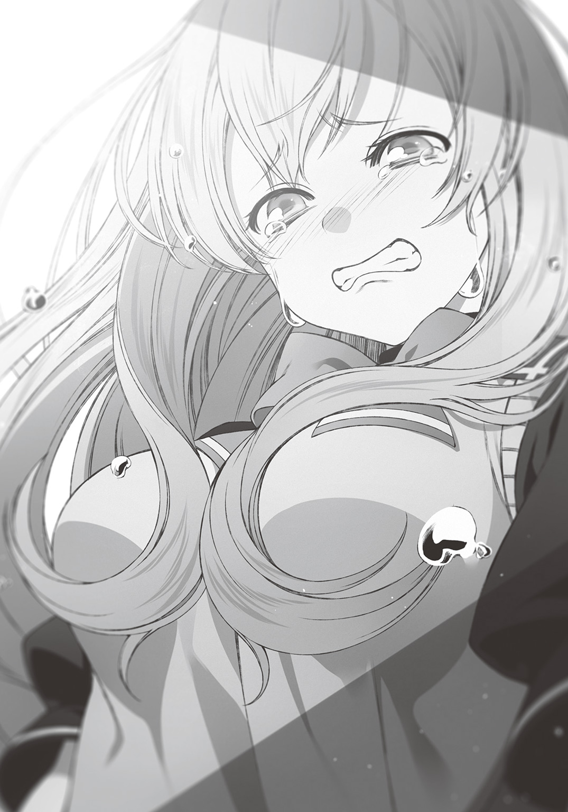
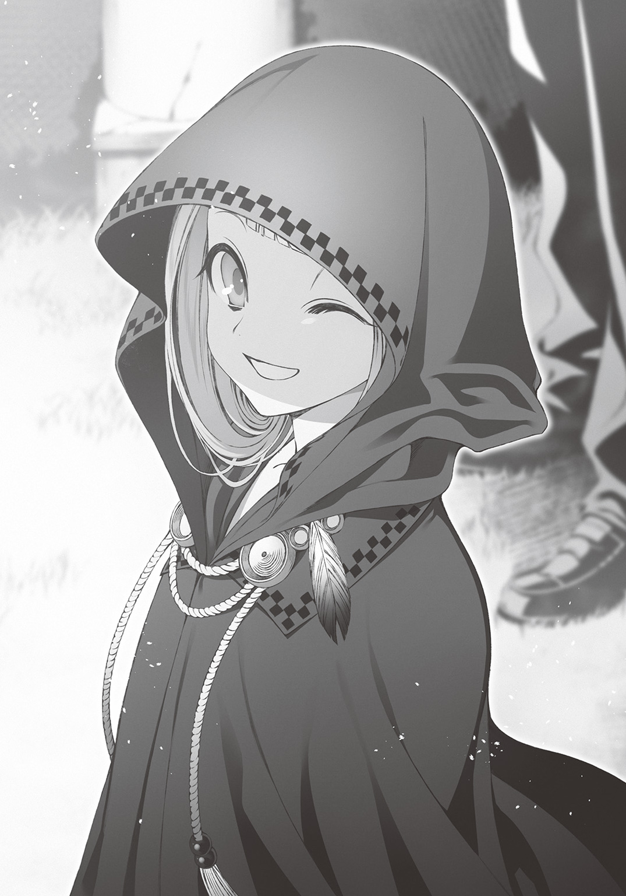
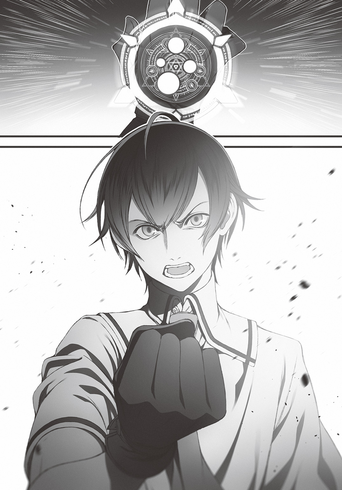

| 逆転召喚 2 ～裏設定まで知り尽くした異世界に学校ごと召喚されて～ | |
| 三河ごーすと | |
この本は縦書きでレイアウトされています。
また、ご覧になる機種により、表示の差が認められることがあります。



 ダッシュエックス文庫DIGITAL
ダッシュエックス文庫DIGITAL
逆転召喚２
～裏設定まで知り尽くした異世界に学校ごと召喚されて～
三河ごーすと
プロローグ 麻梨果の懺悔と決意
人間が嫌いだ。
人の努力を嘲笑う人間が嫌いだ。
人が反撃しないと知るや途端に強気になって平気な顔で攻撃してくる人間が嫌いだ。
全員、怪物に食われてしまえ。
誰も彼もわたしの前から消えてしまえ。
もう絶対に誰にも容赦しない。
わたしの敵になる人間はたとえ誰であっても無慈悲にひねり潰してやる。
わたしはそう決意していた。
決意、できているつもりだった。
だけどわたしは先日の《アンティゲーム》で失敗した。
敵以外の何者でもなかったカゲロウに無慈悲な攻撃を加えられなかった。
わたしはわたしが嫌いだ。
強くなれずに余計な同情を抱いて、仲間に迷惑をかけたわたしのことが一番嫌いだ。
初めて人を好きになれるかもしれないと思ったのに。
柏木先輩、彩東先輩、島村先輩にエマ先輩。
異世界に招かれて、この人たちと出会って、わたしは今までの自分を変えようと思ったのに。
見も知らない人間に自己満足の慈悲を向けて、本当に大切にしなければならないはずの柏木先輩たちに迷惑をかけるなんて......本末転倒だ。
――二度と同じ過ちは犯さない。
今後はもう、自分勝手な判断で仲間に迷惑をかけてはいけない。
それだけじゃない。
わたしはこれからこの償いをしていかなければならないんだ。
他に剣の役割を担える者がいないなら、わたしが剣となろう。
どんなに危険な場所だろうと、危険な相手だろうと、率先して前に出よう。
自分の都合を優先していた部分も、柏木先輩たちのために譲るようにしていこう。
たとえば、能力の使い方。
わたしはまだクー・フーリンの力を百パーセント引き出してはいない。
《闘気鋼殻》の力は本来、これまでわたしが披露してきた力を遥かに凌駕するはずなのだ。
とある理由でわたしはその力を完全に引き出さないでいた。
だけどそれはもうやめよう。
みんなの剣となろう。
今日こそ、柏木先輩たちにそれを言うんだ。
第一章 精霊の国《ガーデン》
手のひらに汗が滲むのを自覚して僕は息を呑んだ。
とある日の昼下がり。
静寂の森。
川のせせらぎとかすかな風が奏でる葉擦れの音だけが聞こえる。
川辺の岩場に腰かけた僕は、かれこれ二十分ほど沈黙を保っていた。
その間、隣にいる栞里もひと言も発していない。
凄まじい緊張感――
そのとき、
意識の間隙を縫うように、僕の手に振動が伝わる。
瞬間、
「そこだっっっ！」
気合いの言葉とともに力一杯、釣り竿を頭上に振り上げた！
水しぶき。
って、重っ！
漫画のように華麗に釣り上げることはできそうにない。
ひとかかえもありそうな大きな魚が、口に針が刺さっているのにも構わずジタバタと暴れ出す。
水面で激しいしぶきが上がる。
上体を持って行かれるようなことにはならないが、強引に持ち上げることもできない。
完全な拮抗状態。
もうすこし。
もうすこしで――
......来た！
魚の顔がわずかに水面から覗いた瞬間、僕はちらりと栞里に目配せした。
「任せて！」
栞里は構えていた網を水面に突き入れた。
暴れる魚を、下から華麗にすくい上げる。
しかし、五人パーティーの誰よりも華奢で、体力も腕力も乏しい栞里が、ひとりで引き上げられるわけもなく。
彼女はバランスを崩して岩場から落ちそうになってしまう。
小さな悲鳴を上げる栞里。
僕は片手で釣り竿を握ったままもう片方の手で横から網の柄を摑む。
そして、栞里の身体ごと思い切りそれを引っ張った。
「きゃっ」
「うわっ」
僕と栞里はしりもちをついた。
痛い。
脳天まで突き抜ける痛みと手足のしびれに思わず歯を食いしばってしまう。
――けどそんな場合じゃない。
僕と栞里はほぼ同時に顔を上げ、立ち上がった。
「「魚は!?」」
二人の声が重なる。
果たして、そこには――
川辺に打ち上げられた魚がぱくぱくと口を動かしながら身体をくねらせていた。
「よし！ 樹海まぐろゲット！」

「やったわね、柏木くん！ ......あ」
ガッツポーズをしていた栞里がハッとした顔になった。
やや顔を赤らめて、コホンと咳払いをする。
「ま、まあ私たちなら当然ね」
「こういうときくらい素直に喜んでもいいと思うけどなぁ」
僕は頰を搔きつつ苦笑した。
学校ごと異世界に召喚され、僕、栞里、遊子、麻梨果、エマ先輩の五人が校舎での共同生活を始めてからだいぶ時間が経った。
共同生活にはいくつかルールがあるが、そのひとつが「ローテーション当番制の禁止」である。
各々が苦手なこと、したくないことはしなくていい。
もちろん全員がわがままを言えば生活自体が成立しないのだが、幸いにも今のところはうまいこと機能していた。
栞里は表向き面倒だから、という理由で家事の一切を拒否。
素直に苦手だからと白状してしまえばラクだと僕は思うのだが、彼女なりのプライドがあるんだろう。
なまじ幼なじみの遊子と一緒だから余計に素直になれないのかもしれない。
遊子は料理、麻梨果は警備、エマ先輩がその他家事全般を担当している。
僕と栞里は作戦立案や《ＺＯＯ》との交渉といった政治担当ではあるものの、だからって雑用をひとつもやらないわけにはいかない。
そこでカンタンな食材の調達を買って出たというわけだ。
それにしても学校とは便利な場所である。
探せばいろいろな物が出てくるのだから。釣り竿や網まであったのは予想外だった。
異世界に召喚されるまでは、我が校に釣り部なる部活が存在したことさえ知らなかった。
パチパチと手を鳴らす音。
「すっごい。なんかもう二人、以心伝心ってカンジじゃん」
遊子だ。ニヤニヤとやらしい表情を浮かべている。
隣にはエマ先輩もいた。
「ＭＥＯＴＯというやつデスネ！」
「エマっちはぼやぼやしてていいのかな～。ミナトのこと狙ってんじゃないの」
「狙ってる？ 何の話デス？」
「ミナトのこと好きなんでしょ。最初から好感度マックスでベタベタしてるじゃん」
「ＯＨ、もちろん好きデス！ ミナトもシオリもマリカもユッコも、みんな大好きデス！ みんなで仲良くしましょう！」
「そーゆー話じゃないんだけどなぁ」
遊子は苦笑した。
立ち上がって服の汚れを払った後、栞里はわずかに唇をとがらせた。
「くだらないことを言わないで。私と柏木くんを恋人とか夫婦とかそういうわかりやすい枠にはめるのはやめてほしいわね」
「あー......そっか。大変だねえ、ミナト」
「えっ、僕？」
何故かいきなり水を向けられ、僕は思わずおうむ返しする。
すると遊子は僕の耳に口を近づけて、
「めんどくさい子に好かれちゃったね......ごめんよ、幼なじみのアタシがしっかり躾けてたら、こんなに拗らせずに済んだかもしれないのに」
そうささやいた。
「しおりんはカテゴライズされるのを嫌がるんだよね。恋人、友達、なんでもいいんだけど。そーゆーわかりやすい何かにひとくくりにされるのが気に食わない子でさ。アタシを幼なじみと紹介するのも、たぶん本音を言えば嫌なんだと思うよ」
「へー。やっぱり変わってるね、彩東さん」
「いろいろ事情があるからねー。あとあと苦労するぞー？」
「脅かさないでほしいな」
僕は苦笑いする。
たとえ栞里がどんなに面倒な人間だとしても、最初に助けだしてくれたのは彼女だ。
《アンティゲーム》のとき、ギャラリーに向けて鋭く声を上げてくれたのも彼女だ。
彼女が僕の味方でいると言うなら、僕は彼女の味方でい続けようと思う。
「何かしら？ 言いたいことがあるならハッキリ言ってくれる？」
僕と遊子が小声で話しているのに気づいたらしい。
栞里は鋭い目をぎろりと細めた。
「大丈夫。面倒を引き受けるのは得意なんだ」
「......本当に何の話？」
ワケがわからないとばかりに栞里は顔をしかめた。
――ダァン!!
そのとき、背後の森の奥から凄まじい打撃音が聞こえた。
数十羽の鳥が、けたたましい鳴き声とともに樹上から飛び立っていく。
直後、誰かが大きな何かをずるずると引きずりながら森の中から姿を現した。
我らの頼れる近接戦闘係――麻梨果だった。
頰とスカートから伸びる脚にたくさんのかすり傷をつけている。
彼女が引きずっているのは気絶した一匹のオーガだ。
『クレストサーガ』の世界では理性なきオーガといえば、かなりの脅威である。
並みの者では対応できず、強大な紋章の恩恵を授かった主人公だけが対等に戦えるとされた。
とはいえ、麻梨果のクー・フーリンの紋章ならば無傷で倒せる程度の敵なのだが――
「すこし手こずりました」
「いつもひとりで戦わせてごめんなさいね」
栞里が《祝福》スキルで麻梨果を癒やしながら感謝の言葉を投げる。
麻梨果はあまり表情を変えずにわずかにうつむいた。
「いえ......。移動中にモンスターに襲われたら、わたしが対処する。そう決めましたし、わたしもそうしたいと思っているので」
「武田さん。すこしいいかな？」
「はい？」
「クー・フーリンの守備力ならオーガの攻撃を受けつけないと思うんだけど......もしかして、《闘気鋼殻》のスキルを使うの忘れてる？」
麻梨果は目を見開いた。
「......やっぱり、柏木先輩にはバレてしまいますか。実は今日、校舎に戻ってから柏木先輩と彩東先輩にご相談しようと思っていたところなんです」
「相談？」
「実はわたし......その......《闘気鋼殻》の防御力上昇能力を、ほとんど身体に使っていないんです」
「えっ。どうして？」
「それは......その......これを......守りたくて」
麻梨果は小さな声でそう言って、かけていた眼鏡を外してみせた。
「わたし、信じられないほど目が悪くて。眼鏡を外すとこんなに近い距離からでも先輩たちの顔がぼやけてしまうんです」
ぐいと顔を近づけながら麻梨果が言う。
僕の鼻の先に、ちょっと睨むような感じになった麻梨果の顔がある。
「そ、そんなに近くでも僕の顔が見えないってなると、かなり重症だね」
「はい。正直、眼鏡が壊れたらまともな生活が送れません。要介護状態かも」
「なるほど。それで《闘気鋼殻》の力で眼鏡を守っていたわけだ」
こくり、と麻梨果がうなずく。
「元の世界と同じようにこの世界にも眼鏡が存在するのか、わからなかったので......。本当は激しい戦闘も嫌だったんですけど、一応スペアもありますから。眼鏡がひとつ壊れるまでは、スキルの力で守りながら戦えばいいかと......」
「もっと早く言ってくれればよかったのに」
「......わたしの都合で黙っていました。ごめんなさい」
「都合？」
「その......弱みなので。正直、わたしは眼鏡を奪われたら、無力です。前の世界でも、この世界でも。だから......」
「ああ、そうか。うん、そうだよね」
僕らは召喚された後に集まった即席のパーティーだ。
今でこそ一緒に《アンティゲーム》を勝ち抜いたり、校舎で共同生活を送ったりしているが、もともとは赤の他人。
すぐに信用できるはずがない。
と、僕は麻梨果の考えに納得しているが、当の麻梨果は申し訳なさそうに何度も頭を下げる。
「ごめんなさい。皆さんは、こんなに良くしてくれてるのに。《アンティゲーム》でもわたしだけ勝手な判断で負けて、本当に、勝手なことばかりで――」
「いやいやいや。そんなに謝らなくていいってば！」
僕は慌てて麻梨果に頭を上げるように言う。
遊子がカラカラと笑った。
「マリリンは硬いなぁ。最終的に勝ったんだから問題ないっしょ。負けが許されないなら、そこのしおりんもダメダメだったじゃん」
「聞き捨てならないわね、遊子。私は敵の最強を引きつけて――」
「ハイハイ。しおりんは昔からそうなんだよなー。弱点とか失敗とか克服しないまま、なんとなくうまいこと攻略して勝ったように見せかけてさー」
「......わかったわ。次に《アンティゲーム》があったらチームの勝利を無視して、一番危険な役割を遊子にぶつけるわね。せいぜいカッコイイ詠唱を披露しながら華々しく散るといいわ」
「うっ......たしかにゲオルギオスと戦うことになってたらと思うと......」
「まあまあ二人ともケンカはその辺にしとこうよ。彩東さんの策略も遊子の炎も欠かせなかった。全部あってこその勝利だよ」
睨み合って言葉をぶつけ合う栞里と遊子の間に入って強引に話を遮った。
僕は麻梨果の頭にぽんと手をのせる。
「弱点をさらけ出してくれてありがとう。大丈夫、もう眼鏡の心配はしなくていいよ」
「え？」
「『クレストサーガ』の世界にも眼鏡はきちんと存在するんだ」
「そうなんですか？」
「うん。祖父は無類の眼鏡っ子好きでもあったからね......眼鏡が存在しないのはありえない、ってかなり強引に眼鏡を登場させてたよ。資料をきちんと読み込んで設定も作り込んでいたから、品ぞろえもいいと思う」
「眼鏡っ子好き......マニアックだったんですね」
「いやそこはまだノーマルな趣味の範囲だよ。もっとマニアックな趣味もたくさんあったからね......触手とか」
「触手？ ......よくわかりませんが、でも、ありがとうございます。すごく心強いです」
麻梨果の無表情にほんのすこし笑みが浮かぶ。
表現が苦手なだけで、きちんと喜怒哀楽の感情を秘めている彼女の、ごくまれに覗かせる表情だ。
すると栞里がパチンと指を鳴らして、みんなの注目を集めた。
「ちょうどいいわ。《ＺＯＯ》との関係も良好なまま安定してきたし、そろそろ他の生徒たちの行方を捜したり、元の世界に戻る方法を探そうと思っていたところなの。武田さんの件もあるなら、次の行き先を考える手間が省けたわ」
「商人の国《カンパニー》――だね」
僕の言葉に栞里はうなずいた。
「そう。『クレストサーガ』最強の種族である神族の国、完全なる中立国家。あらゆる品物が流通し、あらゆる種族と平等に取り引きを行なっているわ。あそこならきっと眼鏡も置かれてるはずだし、余所者の人間である私たちでも問題なく商品を買える」
「えっ、あの、いいんですか？ わたしの眼鏡のために......」
「もちろんただ武田さんのためになるってだけじゃないよ。替えの眼鏡があれば武田さんはもっと強くなるんだ。それは僕ら全員の利益になる」
麻梨果は驚いた顔で僕を見ると、栞里、遊子、エマ先輩へと順番に視線を動かしていく。
誰もが異論はないといった表情をしていた。
麻梨果の頰にカッと赤みが差す。
「皆さん......あ、ありがとう......ございます」
†
僕たちはまず眼鏡の流通状況の裏を取るために《ＺＯＯ》の集落へ向かった。
目的地は、モズの家。
モズは僕らが最初に出会った「しゃべるゴブリン」である。
長老ララノアの話によれば、モズは現在の《ＺＯＯ》の中で最もやり手の商人だという。
情報収集能力に長けており、商業の最新情報をすべて握っている。
僕は『クレストサーガ』の世界を裏側まで熟知しているが、自分の知識を完全には信用していなかった。
何故なら《キャッスル》との《アンティゲーム》でひとつの事実を確信したからだ。
――現実世界から学校の生徒たちが召喚されたことで、世界の在り方が微妙に変わっている。
英雄の国において卑しい者と位置づけられた忍者が《アンティゲーム》に参加した。
そもそも《キャッスル》が《ＺＯＯ》との対立を表面化させたのも「異常事態」だ。
こんなふうに生徒たちの存在が各国の価値観や動きに影響を与えている。
その事実を軽視するわけにはいかないと、僕は考えていた。
大樹の上に造られたモズの家に到着すると、入口に生えた鐘の形の植物を軽く揺らした。
カラン、コロン、と軽やかな音が鳴る。
部屋の中から慌しい足音と転ぶような大きな音が聞こえた後、入口の扉が開いた。
ぜえぜえと息を荒らげたモズが顔を出し、ぎょっと目を見開いた。
「え、エマ様とその御一行じゃねえですか！ どうしたんです？ 皆様お揃いで小生の家にいらっしゃるとは」
早口で微苦笑を浮かべるモズの様子を見て、僕はすこし意地悪な顔で問いかける。
「ずいぶん慌ててたみたいだけど......何かヤッてるタイミングだった？」
「い、いえいえいえ滅相も！ 滅相も！ 昨日仕入れた美人オークのグラビアがたまらんとか、そういうことでは決して！ ......あっ」
盛大に自爆したことに気づいたモズが真っ青になってエマ先輩の顔を見る。
だがエマ先輩は「？」と首をかしげるだけでモズの表情の意味を理解していないようだった。
そりゃそうだ。
モズはエマ先輩に操を立てるべきと考えているだろうけど、エマ先輩にこだわりはない。
《魅了》の力で一時的に言うことを聞かせただけで、本当に下僕にする気はなかったのだから。
エマ先輩の無垢な表情を見る度に、どうしてこの人がサキュバスなんだろうと思ってしまう。
まあそれはともかく、と僕は本題を切り出した。
麻梨果の眼鏡のスペアが必要だということ。
そのために《カンパニー》の現在の状況や眼鏡の流通について知りたいということ。
それらを説明するとモズはううむとうなり声を漏らした。
「《カンパニー》へ行くのはオススメしませんねえ、ハイ」
「えっ。どうして？」
「《カンパニー》まではシルバーファングの背中を借りれる《ＺＯＯ》の商人でも七日かかりますんで。人間の足だと何日かかるかわかりません。道も整備されてませんし、厳しい旅路になると思いますハイ」
「ああ、そうか......祖父さんが書いた地図だけだと距離感が摑めなかったけど、結構遠いんだね、《カンパニー》」
「小生、理性あるシルバーファングを皆さんに紹介したい気持ちはあるのですが、別の国への取引で駆け回っているのですぐというわけには......」
「そっか......残念だけど、眼鏡を買いに行くのはまた今度、かなぁ」
「ひとつだけ小生に案があります」
「案？」
「精霊の国《ガーデン》へ行ってはいかがでしょう？」
モズはおずおずと室内を指さしながらそう言った。
「小生がさっき鑑賞していた美人オークの絵画も、《ガーデン》からの輸入でして。へえ」
「《ガーデン》か......たしかにあそこの方が《カンパニー》よりも近いね」
「まさしく！ しかもあそこは最近、食料品や服飾品、生活用品の流通が活発でして。おそらく眼鏡も売ってるんじゃないかと」
「え？ 食料品や生活用品？ 《ガーデン》で？ ......それはおかしいな」
僕はいぶかしげにつぶやいた。
精霊と呼ばれる種族が暮らす国である《ガーデン》は貿易が活発な方ではなかったはずだ。
精霊は基本的に人間や動物のような生理現象が一切ない。
食料も生活用品も必要なく、大自然からエネルギーを吸収するだけで生きていける。
ゆえに《ガーデン》から買いつける品物も建材や娯楽や装飾品などが主だったはずだ。
「柏木くん。これって」
栞里が僕の腕をつついた。
僕はうなずく。
「学校の生徒だね。ひとり......いや、そこまで取引が活発になっているってことは、複数人が流れ着いてるはずだ」
「眼鏡も買えて生徒も探せる。一石二鳥ね」
僕と栞里は目を合わせてうなずき合う。
こうして僕たちは精霊の国《ガーデン》を目指すこととなった。
†
早朝に出発して半日ほど歩き、僕たち五人は《ガーデン》の王都に着いた。
煌々と輝く日の光に照らされて、街中を網の目状に走る運河がきらきらと輝いている。
美しい水上都市だった。
運河を往く船が汽笛を鳴らし、島と島を繫ぐ連絡橋が忙しく上がったり下がったりしている。
悲しいことにワンボタンで簡単仕様なんかじゃない。
下っ端の精霊が魔法でせっせと歯車を動かしている。異世界も日本も社会の仕組みは同じだ。なんか夢も希望もないけれど。
ひゅー♪ ひゅー♪ と口笛。何かと思えば僕らの頭上を何かが飛んでいた。形は人間。だけどちんちくりんで、虫みたいな羽を生やしてる。
風の精霊たちだ。それが何匹も楽しそうに、踊るみたいに、飛び回っていた。
服は着ていなかった。
女の子の身体なのが丸分かりだった。
それを見て僕は思う。
（やっぱり服を着ないはずだよなぁ、精霊。食事もしないし、服も着ない。この生活習慣が変わったわけじゃない。......つまり他の生徒たちは絶対にここにいる）
そんなことを考えながら歩いていると――
ふいに声が聞こえてきた。
精霊らしくない声、異世界らしくない声、現代日本の教室でよく聞くきゃぴきゃぴした声。
角を曲がるとそこにはおかしな光景があった。
学校の制服を着た女子が四人いた。全員、バドミントンのラケットを持っている。
きゃっきゃと猿みたいな声を上げながら羽根を打ち合っている。
だが、彼女たちは四人で試合をしているわけではなさそうだった。
四人それぞれが何もない虚空へ向けて羽根を打っているのだ。
よく見ると四人の目の前には四匹の風の精霊がいた。
彼らはフーフーと息を吐いて、起こした風で羽根を返している。
何が面白いのかわからないが、精霊も女子たちもウケルーと腹を抱えてケラケラ笑っている。
......やっぱり生存者がいたんだ。
あの、と僕が声をかけようとした瞬間、いきなり後ろから腕を引かれた。
「や、やめた方がいい......よ......？」
「えっ」
振り返ると妙な女子生徒がいた。
黒髪で、制服を着ている。それだけなら至って普通だ。
何が妙なのかというと、彼女、目がすっかり隠れるほどに髪を伸ばし放題にしている。
彼女の目は完全に隠れているから、表情不明で感情も読めない。
ひどい話だと思いつつ、どうしてもアレを思い出してしまう。
アレ。
ホラー映画で出てくる口裂け女とか貞子とか。
神出鬼没なところもすこし似ている。
「今、この街にいる生徒は......信用......できないから」
口裂け女（仮）はきょろきょろと周囲を警戒しながら小さな声で言った。
僕は眉をひそめる。
「君は......ええと」
「あ......朝霧。朝霧寧音」
「朝霧さんも彼女たちの仲間なんだよね？」
「はい。いえ、仲間......とは呼べないかも」
「どういうこと？」
「奴隷......だから。私」
「なんだかとてもファンタジーらしい単語が出てきたわね」
寧音の小声の告白を聞いて、それまで黙っていた栞里が口を開いた。
遊子や麻梨果は言葉が出てこないようで、僕らと寧音の方へ困惑した目を向けている。
「もともとクラスで権力を持ってた人たちが......強い紋章を与えられて......。私も......他の、奴隷も......誰も逆らえなくて......」
「紋章のことは自覚してるのね」
「パニックがあった後、すこししてから......気づいたの。モンスターから逃げて......たまたま《ガーデン》に着いて。そしたら、王様が教えてくれて......」
「そこで初めて紋章のことを知ったの？」
「う、うん」
「なるほどね。事情はわかったわ」
栞里はそう言って、じっと寧音の顔を見つめた。
寧音の長すぎる前髪の隙間から覗く頰にさっと赤みが差す。
「僕からも質問していいかな？ 《ガーデン》には何人くらいの生徒が来てるの？」
「えっと、ウチのクラスの七割くらい......。あの、何人かは学校の時点で、はぐれちゃってたから......」
「へえ。結構な人数が結束してるんだ」
「ある意味で統率がとれているのでしょうね。独裁国家は社会的に批判されがちだけれど、安定しない情勢下では力のある誰かが強引に統治する方がスムーズに事が運ぶわ」
「うん。この世界への召喚は、みんなが一斉に道しるべを失ったようなものだしね」
「でも、やっぱりあいつらに見つかるのはオススメしない」
寧音はささやくような声で言う。
「奴隷階級のほとんどは私みたいなクラスでパッとしなかった子だけど......一部は、後から私たちのクラスに合流してきた下級生......なの。『俺たちの庇護下に入りたいなら奴隷になれ』って要求してるみたいで」
「うわあ......またそういうタイプか」
「どこにでもいるのね。そういう下衆は」
僕が辟易して顔をしかめると、栞里も呆れた息を吐いた。
「でも、おかしくないでしょうか。その生徒たちが《ガーデン》に住んでいるということは、王様に認められたということですよね？ 《キャッスル》は武力が最優先の国でしたから、戦力になる大室を雇ってもおかしくないと思いますけど......」
それまで黙っていた麻梨果がふと疑問を口にする。
遊子もそれに続けて、
「あ、それアタシも気になってた。《ＺＯＯ》のララノアちゃんはアタシらの心を読んで信用したワケじゃん？ 精霊の王様ってのも、そういう力があったりしないワケ？」
「どうだろう。良くも悪くも精霊は純粋だからなぁ」
僕は遊子の表情をうかがいながら最大限言葉を選んでそらとぼけた調子の声で答えた。
「精霊属性は単純バカの傾向があるのよ」
すぐに、栞里によって僕の努力は無駄になった。
「あー......そうなんだ。精霊は単純バカ。......ん？ ちょ、それアタシのこと!?」
「あら固有名詞は出していないのだけど。心当たりがあるのかしら」
「むぎー！ 焼き尽くしてやるー！」
やれやれ。また始まった。
僕は悪口でじゃれ合う二人から視線を外し、寧音の方を見る。
「王宮に案内してくれるかな」
「......いいの？ あいつらと鉢合わせるかも」
「精霊王は純粋で騙されやすいとはいえ、本当にタダの馬鹿というわけじゃない。この目で見てみたいんだ」
僕は背後の麻梨果に目をやる。
「それに僕たちは《ガーデン》から商品を買いつけるために来たからね。ここで引き返したら、意味がない」
「柏木先輩......」
「わかった。案内する。でも、本当に......何があっても......知らないよ？」
降参だとばかりに寧音はそうつぶやいた。
麻梨果がふっと微笑む。
「大丈夫です。先輩たちに危害を加えようとしたら、わたしが全員殺します」
「やりすぎない程度にね？」
頼もしすぎる言葉を発する麻梨果に僕は苦笑しながらつっこんだ。
「............」
「ん？」
話が終わり振り返ると、僕は、エマ先輩の様子が変なことに気がついた。
視線がつま先へ向いている。
首を引っ込めたカメみたいに顔の位置が低い。
いつもしゃんと背筋を伸ばして、明るい笑顔を振りまくエマ先輩らしくない。
そういえば、僕たちが寧音と話している間、エマ先輩はひと言もしゃべらなかったような。
「エマ先輩？」
「い、いえ。なんでもないデスヨ！」
僕が声をかけると、エマ先輩は慌てて顔を上げ両手を振った。
その顔には笑顔を浮かべている。
「だったら、いいですけど......」
僕にはそのエマ先輩の笑顔がいつもと同じ笑顔には見えなかった。
†
王宮は美しい場所にあった。
《ガーデン》の中心部に広がる大きな円形の湖。
湖面に浮いたいくつもの石の足場を踏み越えて行くと、ひときわ大きな孤島の上に宮殿がそびえている。
湖面を彩る蓮の花。無数のモニュメントや石柱から滴る水。大自然の美をひとつどころに凝縮したような風情ある景色の中に堂々と建っている様は、まさしく自然を司る精霊の主が住むにふさわしい。
寧音に案内されて僕たちは王宮の謁見の間に通された。
「どうやら生徒たちはよっぽど精霊王に信用されてるようだね。朝霧さんがいるだけでここまで簡単に通してもらえるなんて」
「そうね......正直、順調すぎて逆に怪しいわ」
栞里は顔をしかめてそう言った。
謁見の間は入口から玉座までやたらと距離があり、そして外観と同じく自然にあふれていた。
絨毯の代わりに地面に敷かれた緑の芝生。
柱や壁には蔓が這い、ランプの代わりに光草が飾られている。
光草とは夜に輝く不思議な植物で、もちろん祖父のオリジナル設定。
草原が夜中にキラキラしてたらそれだけでワクワクするだろ、と子どものようなテンションで語る祖父の顔を思い出して、僕はフフと思わず笑みをこぼしてしまう。
そんな謁見の間を寧音に連れられ、進んでいくと、徐々に玉座に座る何者かの姿がハッキリと見えてくる。
――精霊王。
その名の通り、精霊の国《ガーデン》を取り仕切る精霊族の頂点に立つ存在だ。
喜びの風は森の木々をなぎ倒し、
怒りの業火は野を焼き払い、
哀しみの涙は大洪水を引き起こし、
楽しげな歌声は大地に活力を与える――
と、怖れ崇められる精霊王の姿、それはまさしく、
「紋章の加護に祝福された異世界の子どもたち、よくぞここまで来たブー！」
荘厳、ではなく。
力強く、もなく。
怖ろしいわけがなく。
だけどたしかに彼の歌声に大地が癒やされると聞いても納得できる。
マシュマロを擬人化したような、まるまると太った、やたらと愛嬌のあるマスコット的な見た目の生き物だった。
語尾にブーって。いや、僕と栞里は知ってたんだけどね？ 小説本編に挿絵付きで登場しているキャラだし。
でもやっぱり、他の子たちには予想外だったようで、
「............え、何これ。これ、王様？」
遊子は目を丸くし、
「クッションみたいです」
麻梨果もぽかんと口を開けてそう言った。
「驚くのも無理はないわ。私も挿絵付きで初登場したとき、思わず目を疑ったもの」
「あはは......。祖父さんと挿絵担当の人のいたずら心だったみたいだよ。読者がみんなとんでもない怪物を想像してるだろうから、あえてかわいくしたんだってさ」
「いじわるね」
「作家なら多かれ少なかれそういうところはあるよ」
くちびるをとがらせる栞里に、僕は苦笑で応えた。
精霊王は僕らの反応を見ると大きな口を開けて笑い始める。
「ブフォフォフォフォ！ 客人というからどんな子が来るかと思ったら、また面白い子どもたちが来たブー！ そこの鋭い目つきの男子と、偉そうな女子！ 二人とも、どういうワケかこの世界のことを知り尽くしてるブね？」
「偉そうじゃないわ。偉いのよ」
「あはは......」
栞里は相変わらず度胸があるなぁ。と思いつつ、僕は正直に経緯を話した。
精霊王と《ガーデン》にはこれから貿易相手になってもらう必要がある。眼鏡だけじゃない。学校の生徒がまとまった人数、この国で生活しているということは、人間向けの食料や生活用品も《ガーデン》に集まっていると考えられる。
《ＺＯＯ》にもモズの協力で物資は集まってくるが、充分とは言いづらい。
是非とも《ガーデン》と国交を結び、安定した取引を続けていきたかった。
そのためにも不要な噓をついて信頼を損なうわけにはいかない。
「――ということなんです」
「ンー、なるほどブー。小説、という存在はいまいちわからないけど、キミたちがこの世界のルールやボクちんの性格を知ってるってことはよーくわかったブー。ボクちんはキミらのこと気に入ったブー」
「それじゃあ、眼鏡や生活用品については、前向きに取り引きしてくれるんですね？」
「や、残念ながら難しいブー」
「え？」
精霊王は首を横に振り、僕は思わず声を漏らした。
「今、ボクは《ガーデン》の政治や商業活動にほとんどかかわってないブー。ボクの一存では決められないブー」
「かかわってない？ 精霊の王様なのに？」
「そう！ 異世界の子どもたちに任せることにしたブー！ その方が面白そ――いや、賢い彼ら彼女らに任せた方がいいと思ったブー」
「今、本音が聞こえたよ......」
僕はがくりと肩を落とした。
そうだった。精霊王はすべての国の王の中で、最も刹那主義で、娯楽至上主義。政治そのものを面倒だと感じているような奴だった。
精霊は基本的にみんな同じノリだから、精霊王以外に実権を握りたがる精霊は現れなかったんだけど......。
現代の学校の生徒たちが来たことで、事情が変わったんだ。計算の上なのか、たまたまダメでもともとで提案したら精霊王に受け入れられてしまったのか。どちらかはわからないけれど、精霊王はあっさりと実権を手放したんだろう。
......またか。生徒の存在が、『クレストサーガ』の世界に歪みを生じさせた。
「えっと、それじゃあ、誰に話せばいいんですか？」
「特定の王がいるわけじゃないブー。《ガーデン》の意思決定は、彼らの合意で決まることになってるブー」
彼ら？ 複数？
精霊王の言い回しに眉をひそめていると、謁見の間の脇の通路から、四、五人ぶんの足音が聞こえてきた。
彼らの姿が視界に入り、僕は自分の頰が引きつるのを自覚した。
「ハハ......これはまた......」
「わかりやすい手合いが来たわね」
栞里も蔑んだように細めた目でそちらを一瞥し、呆れたように肩をすくめる。
「おいーっす。精霊王ちゃん、なんかウチの学校の生徒が来たんだって？」
男子生徒だ。
王、と名のつく相手を呼んでるとは思えない、軽い挨拶。
頭の弱そうな声。態度。髪型。服装。軽薄という言葉を煎じて煮詰めて発酵させたような、絵に描いたＤＱＮがそこにいた。
それも一人じゃない。五人。クローン人間では？ と疑いたくなるほど、みんな一様に茶髪で、同じ髪型で、同じ服の着こなしで、同じような笑みを浮かべていた。
大室とはすこし違う。
大室は荒々しく凶暴な感じだったが、こいつらはただ純粋に、軽い。
そんな感じの雰囲気だ。
「知らせてくれてあざーっす！ んじゃ細けー政治のお仕事は俺らに任せて、精霊王ちゃんは向こうで女子と遊んでてくれる？」
「ブー！ 女子！ 女子と遊ぶ！ ブヒョホホホ！」
興奮に息を荒らげ、精霊王はマシュマロのような身体をぼよんと弾ませながら、通路の先へと消えて行った。
......なんだよアイツ。誰だよあんなキャラ作ったの。いや、祖父ちゃんだけどさ。
「おい今の見た？」
「マジウケる。鼻の下ちょー伸びてたぜ。人間じゃねーくせに性欲はあんのな」
「ギャハハ！ スマホのバッテリー残ってたら写真撮りたかったー！」
精霊王の姿が見えなくなると、男子生徒たちはくちぐちに小馬鹿にした言葉を吐いた。
なんだこいつら。いくらなんでも最低だ。
どうして精霊王はこんな奴らに《ガーデン》の実権を握らせたんだ？
......って、思ったけど、あの王様ならおかしくないか。
面白そうだから。そのひと言であらゆることを決定する奴だ。
むしろこの男子生徒たちみたいな、軽いノリと相性が良い可能性さえある。
「――で、何？ コイツらが次の奴隷志望？」
ふと、男子生徒のひとりが僕たちを見て、そう言った。
「うっはすげえ！ カワイイ子がたくさんいんじゃん！ うはぁ、屈服させてー！」
「バーカ。お前みたいな不細工が抱けるわけねーっしょ」
「おい黙ってろお前ら。話が進まねーだろ」
「オーケーオーケー。じゃあいつも通りの流れで......っと。お前らもこの《ガーデン》で平和に暮らしたいクチだろ？」
僕は栞里と目を合わせた。
首を縦に振ったら殺すわよ？ と栞里の目が言っている。
首を縦に振るわけないだろ？ と僕は目で答えた。
「そ。さすが私の見込んだ柏木くんね」
図書室の聖女様は僕の決定にご満足のようだ。
まあ、そうだよな。ようやく大室以外に出会えた生徒だけど。
こいつら、栞里や遊子や麻梨果やエマ先輩に、下品な目を向けていた。
栞里たちを人形やモノと勘違いしてるような目。隙あらば己の欲望をぶつけようと企む目。
こんな連中と一緒に暮らすなんて願い下げだ。
「いや、僕らが世話になってる国は別の国だ。《ガーデン》とは取り引きがしたいと思って来た」
「取り引きぃ？」
「生活用品や食糧の一部を《ガーデン》から買い付けたい」
「ふぅん？」
男子生徒は気のない返事をする。
生活用品や買い付け、って言葉の意味がわかってないんじゃないか？ こいつ。
と思っていると、
「ん？ あれえ？ そっちの金髪の子――」
男子生徒の視線が僕の横、栞里の後ろ、麻梨果の隣に注がれた。
「ッッッ!?」
ビクリ！
そこにいた金髪の女子――エマ先輩が、僕の目からもわかるほど震えあがった。
唇が震えている。肩が震えている。
よく見ると、顔の色も、血を抜かれたみたいに真っ白だ。
あ......あ......と、口をぱくぱくと動かして、エマ先輩は、男子生徒たちや隣にいる寧音へとつぎつぎと目をやっては目を逸らすということを繰り返す。
そして――ダッ！ と、エマ先輩は踵を返して、走り出してしまった。
「エマ先輩!?」
僕の声は届かない。エマ先輩の背中はどんどん遠ざかっていく。
「わたし、追いかけます」
「武田さん......。うん、よろしく。追いついても無理に連れてこなくていいから、そばについててあげてくれるかな？」
「はいっ」
僕の言葉に強くうなずくと、麻梨果はエマ先輩を追いかけて走り出す。
「これ、どゆこと？ エマっち、どうしたの？」
何が起きたのか理解できていないらしく、遊子は僕の肩に触れ、耳元で訊ねてくる。
「これは、たぶん......」
僕は目を細め、隣の栞里と目を合わせる。彼女はうなずくと、鋭い目を細め、男子生徒たちを睨みつける。
そして栞里は遊子の耳元でささやいた。
「あいつら、たぶんアッシュクラフトさんのクラスメイトよ」
「え、ええっ!?」
そう。そう考えればエマ先輩のあの反応にも筋が通る。
そして、ただのクラスメイトじゃないことも、明白な事実で――
僕はへらへらしている男子生徒たちをまっすぐ見据えて、低い声で問いかける。
「エマ先輩に何をしたんですか？ ――召喚前。現実の、学校で」
「俺らは別に何もしてねーけど？」
ニヤニヤ笑いを顔に貼りつけながら一番前にいる男子生徒は答えた。
片手の指で丸を作って、そこにもう片方の手の指を抜き差ししつつ、彼は続ける。
「でもナニかしてもらった男子はいるんじゃねーの？」
「......なんだって？」
男子生徒の言葉。そしてジェスチャー。
それらが示す不快な「意味」を察した僕は、きつく眉をひそめる。
すると男子生徒たちは、ひょうきんに肩をすくめて、
「だから怖い顔すんなよ。さっきから、ずいぶんと好戦的な連中だなぁ」
「............」
よく言う。
嘲笑が相手を苛立たせると知っていて、わざと小馬鹿にした態度を取っているくせに。
だが僕はあえてそれを指摘しない。
ただ黙ったまま男子生徒たちを睨みつけ、続きの言葉をうながした。
男子生徒は、クク、と笑って、
「アッシュクラフトさんが逃げたのはさー、不都合だったからじゃねーの？」
「不都合？」
「ウチのクラスの連中はみんな知ってるからな。――アイツの、黒歴史。お前らは聞いたことねーだろ？ そりゃあ教えないよなぁ」
男子生徒は心底楽しそうな口調で続ける。
「クラスメイトの女子の彼氏を誘惑して、奪ったことがあるなんてさ！」
「しかもあのでっけー胸を使ったんだよな！」
「自分からグイグイ男を引っ張って、ラブホに連れ込んだクソビッチってウワサだ」
「なっ――」
僕は頭の奥にカッと熱がこもるのを自覚した。
エマ先輩が他人の彼氏を奪った？
それもエマ先輩から、誘惑して？
ありえない。
天真爛漫な笑顔を振りまき、常に前向きで明るい性格の先輩が、誰かを悲しませるようなことをするわけがない。
しかし紋章は本人の性質に近いものが浮かび上がると祖父の設定にはあった。
あらゆる苦痛を受けてきた僕が、カウンターのスキルを持つスライムの紋章を与えられたように。
だとすれば、淫らな悪魔――サキュバスの紋章を持つエマ先輩の、本性は――
そこまで考えた瞬間、僕は自分自身の頰を強烈に殴りつけた。
......バカか。こんなもん、考えるまでもない。
「だから、どうした？」
僕は怒りを押し殺すような低い声でそう言って、
「エマ先輩は仲間だ。仲間の酷いウワサ話を垂れ流されたら、さすがに友好的に振る舞うことなんてできない」
人が殺せるほどの鋭い視線を男子生徒たちに向けた。
彼らにとっては、予想外の威圧だったのだろう。表情から余裕が消え去り、頰が引きつる。
それから、男子生徒は唾を吐いてまくし立てた。
「う、ウチのクラスじゃあ、ずっと前から言われてんだ！ お前がいくら信じたって――」
「仮に」
男子生徒の汚い声をさえぎって、僕は、
「エマ先輩が、万が一にもあなたたちの言うようなビッチで、誰かの彼氏を奪った過去が本当にあったとして。エマ先輩が僕らの仲間だという事実は変わりません。そして、そのエマ先輩を悪く言われたことが不快だという気持ちも」
そう言い切った。
隣にいた栞里と遊子もうなずいている。
「アタシ、人の悪口って基本的に信用しないんだよねー。ボロクソ言われてたけど、話してみるとチョーイイ奴じゃーんって子、かなりいるし」
「そうね。それに私の方が、スポンジみたいな脳味噌しか持ち合わせていないあなたたちよりも、あきらかに人を見る目があるもの」
「ぐっ......」
髪をくるくるいじりながら、呆れた様子で発せられたギャルの言葉と、図書室の聖女の容赦ない毒舌に、男子生徒たちはたじろいだ。
「あ、あの！ 交渉はまた明日にしませんか？ 今は互いに頭に血がのぼってると思うので」
それまで黙っていた寧音が、ふいに裏返った声でそう言った。
すると男子生徒たちは、元の余裕の表情を取り戻して、寧音を強く睨みつける。
奴隷が生意気な口を利くな。そう言いたげな眼差しに、寧音はひっと息を呑む。
そして、はい......と口の中にもごもごと言葉を閉じ込めて、縮こまった。
「そうですね。僕らも《ガーデン》との関わり方について、もう一度考え直してみます。行こう、彩東さん、遊子」
「ええ。たしかに今日はこれ以上、ここにいても不毛なだけね」
「しおりん、アンタわざわざ去り際に着火していかなくても......」
「私、不快な感情を吐き出さないと死ぬ病気なのよ」
どんな病気だよ。と、僕は心の中だけでツッコミを入れた。
僕たちは、男子生徒たちの苛立ちの感情がこもった視線と、寧音の心配げな視線を同時に背に感じながら宮殿を後にする。
――しかし、奴隷身分の寧音が支配者である男子生徒たちに物申して大丈夫なのだろうか？ あとで酷いことにならないといいけれど。
そのことはすこしばかり気になったが、だからと言って今の僕らにできることはない。
寧音を強引に連れていくと言いだせば、新たな争いの火種になるだけだし、寧音自身がそれを望んでいるかも不確定なのだから。
ただ、僕はエマ先輩の元クラスメイトたちの姿を見て、ひとつ気づいたことがある。
「柏木くん。きっと、あなたは察しているでしょうね」
そんな僕の心に気づいたのか否か、宮殿から出ると栞里がそう声をかけてきた。
僕はうなずく。
「うん。まあ。彩東さんも気づいた？」
「ええ。念のために答え合わせをしておきましょうか。柏木くんの観察結果を教えて」
淡々とした栞里の問いかけに僕は即座に返答した。
「彼らに奴隷制度を成立させる力があるとは思えない」
「根拠を聞かせてくれる？」
「僕たちがあれだけ強気に出ても、奴らは実力行使に出なかった。無法状態の中で奴隷制度を推し進めるような集団はもっと攻撃的だし、交渉において『恐怖を与えること』が有効だと知っているはずだ。なのにあいつらは、ただエマ先輩の風評を垂れ流すばかりで、こっちが怖がるような話術をまったく使わなかった。お粗末すぎる」
「さすがね、柏木くん。《神眼》を持っていないのに、私よりも一歩先を見ているなんて」
「彩東さんはどう見たの？ あいつらのこと」
「会話の途中で《神眼》を使って鑑定してみたのだけど、彼らは全員精霊属性。それもちょっとした魔法を使えるだけで、たいしたスキルは持ち合わせていなかったのよ」
「ああ、そうだったんだ。洗脳系のスキルもなし？」
「なかったわ。そこから先は私も柏木くんと同じ意見ね。洗脳スキルもなく、飛び抜けた武力もなく、人心掌握の基礎もなってない奴らが奴隷を従えられるとは思えない」
「......まあ、奴隷階級の子たちが強い紋章を持っていなかったら、召喚前と同じように格上の生徒に怯えることになるのかもしれないけど」
「そうね。あの集団の違和感の裏付けを取るためにも、誰かしら奴隷の紋章も鑑定したいわ」
「朝霧さんはどうだった？」
僕が訊ねると、栞里は、彼女にしては珍しくばつが悪そうに眉尻を下げた。
「ごめんなさい。一応、試みたのだけど......」
「鑑定できなかった？」
「前髪が邪魔で......。ほら、私の《神眼》は相手の目を見ないと使えないから......」
「ああ、なるほど」
たしかに、あの子は貞子みたいな髪型をしていたからなぁ。
「次に彼女と会う機会があったら、多少強引にでも鑑定してみるわ」
「そうだね。エマ先輩のクラスに覚える違和感――これは、あんまり長く放置すべきじゃないと思う」
僕が低い声でそう告げると、栞里も真剣な表情でうなずいた。
......それにしても。
学校ごと異世界に召喚されたことで、召喚前の教室の歪さが浮き彫りになるとは皮肉な話だ。
環境が変わればガラリとすべてが変わるわけじゃない。
現実が非現実に取って代わるのではなく、現実がより一層存在感を増す。
実のところ僕はエマ先輩には、栞里や遊子や麻梨果と比べて、なんとなく浮世離れした印象を抱いていた。
そう。まるで、フィクションの世界の住人のような、非現実的な性格の人だと思っていた。
しかしそれこそが――エマ先輩の歪み。
もしもエマ先輩が何か闇を抱えていて、救いを求めているならば、僕は――
手を差し伸べることを一切躊躇しないだろう。
†
夕陽が《ガーデン》の街並みを赤く染めていた。
精霊達の軽やかな笑い声が飛び交う空の下、透明な水面が二人の少女の姿を映し出している。
片方は金髪碧眼の西洋生まれの少女。桟橋に腰をおろして膝をかかえている。
もう片方は黒髪で眼鏡をかけた地味な印象の少女。金髪碧眼のかたわらに、どこか所在なげな様子で立ち尽くしている。
エマ・アッシュクラフトと武田麻梨果だ。
二人の間に会話はない。
いつも寡黙な麻梨果だけではなく、エマの方からも口を開く気配はなかった。
エマの顔には生気が乏しく、かかえた膝に顔をうずめたまま、ぼんやりと水面を見つめている。
むしろ麻梨果の方がちらりちらりと何度もエマの方へと横目を向けており、内心穏やかでないことが隠せていない。
最初に口を開いたのは、エマの方だった。
彼女は思いっきり口の端を引きつらせて、それでも必死で笑みを浮かべようとしながら、麻梨果を振り返る。
「マリカ。ワタシ――ちゃんと笑顔デスカ？」
「......すこし怪しいです」
「ＯＨ......困りマシタ。マリカ、みんなと顔を合わせる前に、キレイな笑顔のレクチャーをしてほしいデス」
「え？ えっと、わたしが教えるんですか？ 笑顔」
突然の申し出に麻梨果は自分の顔を指さしながら、困惑したように問い返した。
麻梨果には自分が無愛想な性格だという自覚がある。
人に教えるどころか、まず自分が笑顔の勉強をした方がいいくらいに。
「たぶん、わたしなんかに訊いても何にもならないと思いますよ。エマ先輩の笑顔、その、いつも素敵ですから」
「アハハ......そう見えてるんデスネ」
「エマ先輩？」
自虐的にも聞こえるエマの言葉に、麻梨果は怪訝そうに眉をひそめた。
わけがわからない。
それじゃあまるで、そう見えてることが間違っているかのような言い方じゃないか。
エマがおかしくなったタイミングからして、《ガーデン》の王宮にいた男子生徒が原因だろうか。
「何かあったんですか。あの男子と」
麻梨果は直球でそう訊いた。
男子生徒の第一印象は麻梨果の嫌いなタイプだった。
だからあり得るかもしれないと思った。
責めても許される理由を、レッテルを、相手に貼って、攻撃するような人間。
そんな人間の標的に、目の前の天真爛漫な先輩もされてしまっているのではないか、と。
しかし、エマは首を横に振った。
「何もないデス。あの男子にも、クラスのみんなにも、何もしてません。なのに――」
「攻撃対象にされてる、ですか？」
「............」
その問いにエマは笑顔を返そうとした......のだろうか。しかし麻梨果の目には、ただ困ったような苦笑にしか見えなかった。エマが普段浮かべている朗らかな笑顔とは、まったく性質の異なる笑顔だ。
二人の間に、しばしの沈黙が流れる。
やがて――麻梨果が根負けしたようにため息をつくと、突然、パンッ、と音を立てて両手で自分の頰をサンドイッチした。
「見ててください、エマ先輩」
「え？」
「笑顔の練習方法です」
大真面目な顔でそう言うと、麻梨果は、
みょーん......。自分のほっぺたを、手加減なしに引っ張ってみせた。
焼きたての餅のように麻梨果の頰が伸びる。
その表情は無愛想なままで、笑顔には程遠い。
だが麻梨果はあくまでも大真面目な目で、どうですこれが笑顔ですと言いたげに、まっすぐにエマを見つめていた。
「マリカ......」
口をぽかんとあけて、そんな麻梨果の顔を見つめていたエマは、
「ぷぷっ......！ 何デスカ、それ！ 可笑しすぎマス！」
思わず吹き出すと、足をばたつかせながら笑いだした。
麻梨果の顔が耳まで赤くなる。
「わ、笑うことないじゃないですか。その、わたしは真面目に――」
「ありがとうございマス♪」
エマはいきなり立ち上がると、麻梨果の顔の前で人差し指を立てて抗議の声を遮った。
「マリカはイイ人デスネ......ううん。今一緒に学校で暮らしてる仲間は、みーんな、ワタシの大切な人たちデス」
「エマ先輩......」
「ワタシを笑わせるために、カワイイ顔をこんなにヘンテコにするなんて。自己犠牲のマインド！ やはりこれが大和撫子なのデスネ」
「......えっ」
うんうん、と感心したようにうなずくエマを前に、麻梨果は複雑そうな表情を浮かべる。
「ん？ どうしたんデスカ、マリカ」
「いまのは......笑わせようとしたんじゃなくて......。実際にわたしがやってた練習法......なんですけど......」
福笑い的なネタだと思われたショックで、麻梨果の声はどんどんかすれていく。
「お、ＯＨ......それはとても失礼しマシタ......では......ッ、こうデスッ！」
むにゅっ。
エマは麻梨果と同じように自分の両頰を指でつまんだ。
「意外と伸びませんネ。マリカの方がやわらかそうデス。そういえば、日本の言い伝えでほっぺがやわらかい人はむっつりスケベだと聞いたことがありマスヨ？ 『古事記』にもそう書いてあるそうデース」
「な......。か、書いてないですし、ただの迷信です。わたしはスケベじゃありません。人聞き悪いこと言わないでください」
「ええっ、そんなことないデース！ マリカはスケベですヨ!?」
「人聞きが悪いにも程がありますっ。というか、どうしてそこで食い下がるんですか!?」
「スケベな女性は男性に大人気のはずデス」
「そ、それは......。男の子のことは、よくわからないですけど。たぶん、そういう面も、なくはない......と思います......けど......」
「男性に大人気――つまり、スケベな女性とは、魅力的な女性という意味！ ほら、やっぱりマリカはスケベで合ってマス！」
「待ってください。いろいろ待ってください」
ズキズキと痛む頭を手で押さえながら麻梨果は言葉をさえぎった。
「まずスケベの定義が間違ってます」
わたしは大真面目に何を口走っているんだろう、と思いつつ、麻梨果はエマの耳元に口を寄せた。
一般的な「スケベ」の定義を、中学高校で習うレベルの英語を混ぜつつ、ごく小さな声で教えた。
その瞬間、
「............ッッッ！」
ぼふん！ と効果音が聞こえそうな勢いでエマの顔が紅潮する。
「き......きゃああああああッ！ ワタシ、今まで、な、なんてことを大声で......大声でえええええっっっ！」
「わたしの恥ずかしさ、理解いただけました？」
「ソーリー！ 本当に申し訳ないのデス！ 可愛らしい大和撫子に対して、何たるジェノサイド！ 切腹ものの侮辱でした！」
地面に埋まりそうな勢いで何度も頭を下げるエマ。
彼女は自分の頰をつまんだままで、だから頭が上下するたびに、ほっぺたがトランポリンめいてみょんみょんと動く。
その様子が面白かったのか、麻梨果は、くすりと微笑んだ。
「もういいですよ。わたしも、エマ先輩に大したアドバイスできませんでしたし。お互いさまです」
「むーん。日本語はむずかしいデスネ。しっかり勉強してきたつもりでしたが......やはり黄金の国ジパング。一筋縄ではいきません」
「大丈夫です。日本人のわたしにとっても、むずかしいですから」
「ＯＨ......そうなのデスカ？」
「はい。日本はむずかしいです。本当に。いろいろと」
胸に手を当て、麻梨果はしみじみとつぶやいた。
「マリカ......」
そんな麻梨果の姿を見て、エマはきゅっと口を結んだ。
自分の頰から手を離す。
その手を、麻梨果の頰へと持っていく。
むにり。
「んむ......。何するんですか、エマ先輩」
「日本語はむずかしいデスケド、笑うのはカンタンでした。さっきのマリカの笑顔......素直で、可愛かったデスヨ♪」
麻梨果の頰をくにくにとこねながら、エマはそう言った。
「そんなこと......わたしなんて、べつに」
「ありがとうございマス。おかげでミナトたちの前では、また笑っていられそうデス」
ネガティブな言葉をつぶやこうとする麻梨果をさえぎって、エマはニコリと微笑んだ。
両手を頭上に向けて、ぐいっ、と背筋を伸ばす。
その姿を見て、麻梨果は、
「あのっ、エマ先輩」
早口で彼女に言う。
「無理に笑顔を作る必要はないと思います。何かつらいことがあるなら、わたしたちに相談してください」
「マリカ......」
「柏木先輩も彩東先輩も、たぶんユッコ先輩も。あのメンバーだったら......きっとエマ先輩のために全力で頑張ってくれます。だから――」
「疑ってませんヨ。みんなはそういう人だって、わかってるデス」
「だったら......！」
「だからこそ心配はかけられません。次に顔を見せるときは笑顔――これはもう決定事項なのデス」
「............」
麻梨果は言葉を続けようと口を開きかけた。
が、桟橋の向こう側から三人の男女が歩いてくるのが見えて、麻梨果はその口を閉ざした。
エマがパッと笑顔を浮かべて、三人――湊、栞里、遊子のもとへ駆けていく。
......自分の勝手な判断で、エマの尊厳を傷つけられない。
麻梨果は言葉を押し込めると、エマの後に続いて歩き出した。
幕間 召喚当時、とある生徒の記憶１
――――高等部２年・女子（文系）
数学って何の意味があんだろね？
二次関数だとか虚数だとか因数分解だとか、日常生活では絶対に使わないし、将来も使わなきゃいけない場面が来るなんて思えない。
そんなどうでもいい勉強をしてる暇があったら、一秒でも長く友達とおしゃべりしてた方が人生は豊かになるし、将来のためにもなると思う。
よくわかんないけど、アレでしょ。大人になってからも、勉強できるかどうかより、コミュニケーション能力が大事だったりするんでしょ。飲みニケーションだっけ？ なんかテレビで見たことある。
――だからあたしは数学なんて勉強しない。
数学の授業は大嫌いだ。
こんな意味のないことを学ばせておきながら、数学教師は正解できない生徒を小馬鹿にしたような顔をする。むかつく。
数学の授業なんて消えてしまえばいいのに。
未曾有の大災害とかが起きて、中止になっちゃえばいいのに。
そんな呪いを心の中だけで呟きながら、あたしは机に突っ伏す。授業中はいつも机に突っ伏して、すやすや眠っている。
その日も、いつものようにあたしは寝ていた。
午後の数学。
お昼ご飯を食べた直後のこのタイミングは一番ヤバイ。
天から「らりほー」と語りかけられているみたいだ。
数学教師もいいかげんあたしの授業態度に慣れたのか（というか諦めたんだろうね）、爆睡していても怒らなくなっていた。だからあたしは何も気にせず、深い眠りの中に沈んでいた。
六十分の授業の間、あたしが目覚めることはない。
――はずだった。
しかしその日は何故か目覚めてしまった。
何やら教室が騒がしい。
寝ぼけまなこで辺りを見回すと、クラスメイトのみんなが、なんだか不安そうな顔をしている。
寝ぼけていたのでみんなの会話の内容は聞き取れなかったけれど、「いきなり消えた」とか「ヤバイのがくる」とかそんなことを言っている。
自習にでもなったのかな？
それでゲームとかテレビとかの話をしてるのかな？
まあいいや。眠い。
「起きて」
もう一度机に突っ伏そうとすると、隣の席に座っていた友達が肩をゆすってきた。
「なにさ」
あたしはのそのそと顔を上げて返事する。
「なんか大変なことになってる」
友達はそう言った。
なんだか本格的に様子が変だったので、あたしも目をこしこしこすって、あらためて教室の中を見回してみる。
「校庭の向こうが森になってるぜ！ よくわかんねーけどワクワクしね？ 冒険しようぜ冒険！」
「ちょ、ちょっとやめなよ。こんなワケわかんないときに歩き回るとか、バカなの？」
「大丈夫だっての」
数人の活発な男子達が教室を出ていく。
ほとんどの生徒はおどおどして教室にいるけれど、外の様子が気になって仕方ないみたいだった。
「何？ 何が起きてるの？」
あたしは友達に訊いてみた。
友達も混乱しているみたいで、「いきなり先生が消えちゃってね。そしたらなんか、学校の外が変な様子でね。私も何がなんだか」と要領を得なかった。
うーん？ と首をかしげていると、
「う、うわああああああああああああああああああああ！」
男子の悲鳴が聞こえた。
さっき教室を出ていった男子の悲鳴だ。
「きゃああああああ！」
今度は女子の悲鳴。
連鎖するようにたくさんの悲鳴が教室の外から立て続けに聞こえてくる。
「ど、どうしたんだろう？」
友達がビクビクしてる。あたしも怖くなってきた。
悲鳴は続いている。
クラスメイトの一部が廊下を覗きに行って、真っ青な顔で固まった。
......何を見たんだろう？
廊下に出ちゃいけないと本能が警戒音を鳴らしてる。だけどあたしは気になって仕方なかった。
他のクラスメイトがそうしてるみたいに、教室のドアを半開きにして、おずおずと廊下の様子をうかがってみる。
何か硬い物をゴリゴリと削ってるような音がした。
バリバリ。ボリボリ。
おせんべを食べるときの音に似てる。
緑色の肌の生き物。
それが三匹いた。
三匹は廊下に座り込み、互いに頭をぶつけながら、何かに夢中になっていた。
バリバリ。ボリボリ。
音は、その生き物達が群がる中心から聞こえていた。
「きゃあああああ！」
クラスメイトの誰かがまた悲鳴をあげた。
悲鳴は隣のクラスからも、その先のクラスからも聞こえていたから、特別、彼女の悲鳴がうるさかったというわけではない。
だけど何故かゴブリン達は、その悲鳴に反応した。
三匹が一斉に振り返る。
醜い顔。
とがった耳。
鋭い牙の生えた口の周りは真っ赤に染まっている。
えっ、何それ。どうして赤くなってるの？
生き物が群がっていた場所には、真っ赤な染みが残っていた。
その染みから真っ白な粒子状のものがきらきらと輝きながら舞っている。
あれは、なんだろう？
何かが雲散霧消したみたいな......？
いや、そんなこと、どうでもいい。
生き物と目が合ってしまった。
生き物がニヤリと笑った。
その瞬間――あたしはぞぞぞっと全身が震えて、両腕に鳥肌が立ち、そして同時に頭の奥のところで理解してしまった。
――終わった。
と。
ホント、数学の授業なんて何の役にも立たない。
どんなに勉強したって、ふとした瞬間にパッと理不尽に殺されることもあるんだから。
そんなどうでもいい勉強をしてる暇があったら、一秒でも長く友達とおしゃべりしてた方が人生は豊かになったと思う。
というか。
もっと、友達とおしゃべりして、生きていたかったな......。
第二章 バーニング鬼ごっこ
僕らは麻梨果とエマ先輩と合流した後、宿を求めて街を歩いた。
エマ先輩はいつもの笑顔に戻っていたが、逆に麻梨果の様子がおかしかった。宿についたら、ちゃんとふたりと話をしなければと思いつつ、僕は、一番前に立ってみんなを先導する栞里の後についていく。
栞里は『クレストサーガ』を読んだ経験をもとに、一軒の宿屋に僕たちを連れていった。
「ナマステ！ ナマステ！」
中に入ると、ターバンを頭に巻いた、インド人風の小人が陽気に出迎える。
火の精霊だ。この店のオーナーである。裏設定だけでなく、小説本編にも「トム」という名前で登場している。
遊子は怪訝そうに精霊を見つめると、僕を振り返って小声で訊いてきた。
「なんでインド人？」
「祖父さんの頭の中で火の精霊とインド人がつながっちゃったんじゃないかな。特に深い意味はないと思う」
「え、マジでそれだけ？ ......ファンタジー小説って意外とアバウトなんだ」
遊子が呆然とつぶやく。
それに対して、栞里ははあとため息をついた。
「遊子みたいな目につきやすい単語の印象だけで勝手に壁を作るタイプの人間はよく勘違いするのだけど、小説は本来、もっと気軽な娯楽よ」
「あ、またアタシのことバカにしてる！ しおりんさ、あんまり人を見下してると、そのうちバチが当たるかんね」
「あら。天罰を与えるのは神様でしょう。むしろ私が与える側じゃない」
「勝手に言ってろっての。べー、だ」
相変わらず毒舌の止まらない栞里へ、遊子はあっかんべをする。
まるで小学生みたいなやりとりだ。
クールで頭が良さそうな栞里と化粧バッチリで大人っぽい見た目の遊子がこうしていると、不思議なギャップがあっていいな。などと、いらないことを考えてしまう。
それにしても、栞里はどうしてこの宿屋を選んだんだろう？
僕は《ガーデン》の王都に存在する宿屋ももちろん全部把握している。
ここはインドをモチーフとした店で、出てくる料理には香辛料をふんだんに使ったものが多いという以外に、取り立てて選びたくなる魅力はないはずだ。あえて言うなら風呂場に飾られている象の置き物がユニークなことくらい。

ベッドの質も、部屋の綺麗さも、ここよりずっと優れている店なんていくらでもある。
――あ、いや。もしかして。栞里の狙いは......
「ゲーム目当て？」
僕がそう訊ねると、栞里はふっと笑みを浮かべた。
「ええ。もちろん」
「なるほどね......だったら納得だ」
陽気な火の精霊が経営するこの宿屋には、魅力とは別に、ひとつ特徴があった。
それは、勝負好きな店主とゲームをして、勝つと無料でひと晩泊めてくれるというものだ。
『クレストサーガ』本編では、お金をすべて失い困っている主人公たちの助けになる話が展開される。
栞里はカウンターに手を置き、小さな店主へと勝ち気な笑みを向けた。
「宿泊を賭けて勝負をしましょう」
「ショウブ！ ショウブ好き！」
火の精霊は、ふんすふんすと荒い鼻息をもらして、その場をくるくる飛び回る。
――乗ってきた！
その瞬間、栞里の口元に勝利を確信した笑みが浮かぶ。
......悪女だなぁ。
僕はもう栞里の本当の狙いを理解していた。このゲームはすでに勝負になっていない。
栞里が勝ち、僕らが無料で泊まれるだけのゲームだ。
何故なら――原作では、火の精霊が持ちかけるのはクイズ対決。
精霊がクイズを出し、僕らが答える。
たったそれだけのシンプルな勝負。
クイズなら公平？
むしろ出題役の精霊の方が有利？
......そんなわけがない。
だって、僕も栞里も、クイズの答えを知っているんだから。
「ノリがいい精霊で助かるわ。では、どんな勝負をしましょうか」
話の導き方もうまい。
最初から前のめりにクイズを強調すると、自信を察せられてしまい、クイズ勝負を避けられてしまう可能性もある。
あくまでも無知を装い、無料宿泊をつかもうと考えているのだ。
さすが栞里。あくどい方向に賢い。
「勝負内容ハ――」
火の精霊は、すこしだけ考え込んだ後、高らかに勝負名を口にした。
「――『バーニング鬼ごっこ 灼熱地獄で捕まえて』！」
「......................................................................................................は？」
しばしの沈黙の後、栞里は虚をつかれた顔をした。
......たぶん、僕も同じ顔をしてる。
バーニング......鬼ごっこ......？ なんだそれ、全然聞いたことがないぞ!?
「ルールはカンタン。今から大浴場に行って、ワタシと鬼ごっこスル。一時間以内に捕まえられたら、ソッチの勝ち」
「ま、待って。何を言っているの？ あなたはクイズを出題するはずでしょう！」
栞里が頭痛をこらえるように頭を押さえながら声をあげる。
火の精霊はインド映画の主人公が見せるような陽気極まる笑顔を見せた。
「最近《ガーデン》に来たニンゲンに教えてモラッタ！」
「なっ......」
愕然とした表情になる栞里。
その一方で僕は、ああなるほど、と納得していた。
精霊は面白いと思ったことにすぐなびく。
召喚されてきた生徒たちから受ける影響も大きい。
――つまり、もはやこの《ガーデン》で起こるイベントを僕と栞里が完全に予測することはできないってことだ。
精霊の特性を踏まえて二歩先を読まなければならない。
今回はその思考を怠った栞里のミス。可哀想だけど、こればっかりは僕にもどうにもできないだろう。
やるしかない。バーニング鬼ごっこを。
「心配ムヨウ！ ワタシは一人で逃ゲル。お客サンは、全員でワタシ捕まえる。五人もいるからヘーキ！ ヘーキ！」
「そうね。悲観的になるのはやめましょう。こちらには武田さんもいるし」
「あの、頑張りたいんですけど。ひとつ不安が」
麻梨果が胸の前で小さく手をあげる。
「大浴場を舞台に鬼ごっこ......ということは、温度や湯けむりが大変なことになっているのでは......」
「ソウソウ！ バーニング鬼ごっこは、ワタシの炎魔法で温度をガンガンあげて灼熱地獄になった浴場でヤル！ お湯と室温で湯けむりフィーバー！」
「ごめんなさい、彩東先輩。今回、お役に立てないかもしれません。その、眼鏡がくもる環境だと、前が見えなくなるので」
「くっ......。それは......仕方ないわね」
栞里は悔しげに唇を嚙む。
するといきなり僕の袖が引っ張られた。栞里が顔を寄せてくる。
「率直に言うわ、柏木くん。助けて」
「あはは。困ったことになったね。動きの速い精霊と鬼ごっこをするなら、武田さんの速さは不可欠だし」
「そうよね。正直、原作にまったく存在しないゲームだから攻略法も思いつかないわ」
「ゲーム自体をキャンセルして、他の宿に行くのは？」
「それも考えてはいるけれど――」
栞里はちらりと火の精霊に目をやった。
その視線に気づいた精霊は、眉の根をわずかに持ちあげて。
「まさかキャンセル？ お客サン、ツマラナイ人？」
そんな言葉を口にする。
......ああ、あったなぁ、この設定。
「いえいえ。キャンセルなんてしませんよ」
僕は愛想笑いを浮かべる。
そして、また栞里だけにささやきかける。
「精霊はつまらない奴と判定した人間にはとことん冷たくなる。しかも他の精霊とあっという間に情報を共有するから、他の宿にも泊めてもらえないかも」
「そうよね。私もそう記憶しているわ」
「だったら、やるしかないよ。《アンティゲーム》と違って、何か大切なものを賭けてるわけじゃないし。気軽に楽しもう」
「柏木くんがそう言うなら......まあ、いいけれど」
唇をとがらせ、指を髪にからめながら栞里は言った。
「大丈夫。一応勝算もある。僕たちだったら負けない」
僕は軽く笑ってそう言うと、火の精霊の方を振り返った。
「バーニング鬼ごっこ、受けさせてもらうよ」
「オオ！ そう来なくチャ！ デハ早速――」
火の精霊は空中で華麗に身体を翻す。カウンターの奥へ飛んでいく。
なんだ？ どこへ行ったんだ？
と、思っていると、奥の部屋の方からガタガタ、ガサガサと何かを漁る音が聞こえてきた。
探し物だろうか。しかし勝負の前に一体何を探しているんだ？
まさか武器？
鬼ごっこなどとかわいらしい名前で呼んでいるが、実は過剰防衛が許される過激なゲームだとか？
僕はさまざまな可能性を頭に浮かべ、息をのんで精霊が戻るのを待っていた。
しばらくして、ピタリと音がやむ。
そして、火の精霊がハアハアと息を切らして戻ってくる。
彼が手に持っているものを見て、僕は思わず啞然としてしまった。
「浴場を舞台にするからニハ、コレが必須！ お客サン方は全員、コレをつけル！」
「コレって......はあ？ マジで言ってんの!?」
「ＯＨ......大胆デース」
「あの、さすがにこれはセクハラです」
「くっ......何から何まで、こんなにも私の想定を超えてくるなんて......『クレストサーガ』だと頭の悪いクイズを出すだけの雑魚キャラだったのに」
遊子は激しく反論し、エマ先輩はうっとりした声で言い、麻梨果は顔をしかめ、栞里は屈辱に耐えるように唇を嚙む。全員に共通していることといえば、頰を真っ赤に染めているという一点のみ。
火の精霊がその手に持っていたもの。それは――
色とりどり、多種多様なデザインの水着だった。
†
十分後。
僕は大浴場に来ていた。
火の精霊の魔法が発動しているのだろう。
すでに室内は温かい。
露出した上半身にじわじわと汗が浮かんでくるのがわかる。
それにしても、精霊に渡されたこの水着。なんとも心もとないはき心地だ。
現代日本産ではなく《カンパニー》から仕入れた品らしく、完全に自然の素材から作られている。
破れたり、ずれたり、溶けそうな気がしてしまう。
栞里たちの姿は......ない。
すこしだけホッとする。
どんな水着を着てくるんだろう。
学校の校舎で同居生活をするようになってから、洗っている下着を見てしまったことはある。しかし肌を露出させた姿そのものを見たことはなかった。
......って、これじゃまるで期待してるみたいじゃないか。
違う。
そうじゃない。
これは無料宿泊を賭けた純然たる勝負だ。
よけいなことを考えるな！
「お待たせしまシター！」
エマ先輩の元気な声が響いた。
振り返る。
「うわっ」
思わず目を背けた。
あまりにも揺れていたから。
小走りで近づいてくるエマ先輩の、大きすぎる胸が。
黒のビキニに包まれただけの、肌色率九十％ぐらいの英国美少女がそこにいるだけでもヤバいのに。
あの胸はダメだ。凶悪だ。
服の上からでもなんとなくわかっていたけど。こうして脱いだ姿を見ると、想像していたよりも、ずっと大きい。ＤとかＥとかＦとか、あまり詳しくないけれど、それくらいはありそうだ。上も下も豊満な肉にみっちりと食いこんでいて、抱きしめたら絶対にやわらかいんだろうなと確信する。
「ワオ！ ミナトの背中大きいデスネ！」
「うわああああああっ!?」
絶叫した。
背中に、むにむにした感触がある......！
リアルな温かさが妙な生々しさを感じさせる。
「エマ先輩！ 水着姿でスキンシップは困ります！」
「ＯＨ......残念デス。もっとミナトとイチャイチャしたいデスのに」
「普段でも危ういのに、これは完全にアウトです」
エマ先輩の感触が離れる。
やわらかさと温かさが急に消えて、なんとなく名残惜しい気分になった。
って、何を考えてるんだ僕は。平常心、平常心。
と、深呼吸をしていると。
入口の方がにわかに騒がしくなってきた。
「もー、急に走らないでよエマっち――って何ここ！ でっかーい！ へえ、異世界の大浴場ってこんなんなんだ」
「あの......どうしてわたしまで水着に」
「ひとりでお留守番しててもつまんないっしょ。温泉に浸かってるだけでもいいからさ」
「それは、そうですが。あの、眼鏡がないと、本当に何も見えなくて」
入ってくるなり大浴場を見渡してはしゃいでいたのは遊子、恥ずかしさと不安が入り混じったような顔をしているのは麻梨果だ。
遊子は派手な色合いのビキニタイプの水着をスレンダーな身体に着けている。
エマ先輩に比べると胸の大きさは慎ましやかなものだ。しかし読者モデルをやっているだけあって、お腹まわりはきれいに引き締まっている。すらりと伸びた脚も細くて、くるぶしの形もきれいだった。
麻梨果の方はスクール水着を着ている。
ウチの高校の指定水着ではないので、おそらくこの世界で作られ、《ガーデン》が仕入れたものだろう。『クレストサーガ』では少年少女の異世界召喚が頻繁に行われている設定なので、現代日本の文化がこうして持ち込まれていることも多いのだ。
もっとも、それは祖父がファンタジー世界にどうしてもスクール水着を出したかったがために強引に付け加えた設定らしいけど。当時の祖父の担当編集が、笑い話として語っていた。
さて。そんなスクール水着を、小柄な麻梨果が着ている姿は......ひかえめに言ってもかわいかった。
眼鏡をはずした麻梨果は普段の他者を寄せつけない雰囲気がなく、どこか幼く見える。
そういえば年下の後輩なんだよな......と、否応なく思いださせられた。
......あんまりまじまじ眺めていると反応しちゃいけない部分がピクリとしてしまいそうだ。
僕はすうはあと呼吸を整え、ふたりから視線を外す。
と、視線を動かした先に、後から入ってきたひとりの女子の水着姿が飛び込んできた。
栞里だ。
「すこしきついわ。どうしてスクール水着はサイズが小さめのものしかないのかしら」
水着の隙間に指を入れながら、不満気に唇をとがらせている。
彼女の言葉通り、栞里は麻梨果と同じスクール水着を着ていた。身長も胸の大きさもひと回り小さいサイズの水着らしく、栞里の女性らしい肉体に深く食い込んでいる。
ビキニと比べると露出は少ないものの、身体のラインがくっきりと浮かんでいるのが、逆に、妙に妖艶だった。
「............」
僕は息を呑んだ。
目が離せなくなっていた。
栞里はいつもきれいだけれど。水着を押し返す大きな胸も、むき出しの真っ白な二の腕も、滑らかな脚も。どれも新鮮で、まぶしかった。
「柏木くん？ 何をまじまじと見つめているの」
「えっ。あ、いや」
言えない。水着姿に見惚れてましたなんて、正直に言えるわけがない。
「みなさん大変素晴らしいのではないかと」
「ロボットみたいな片言になっているけれど、大丈夫？」
「......大丈夫じゃないかもしれない。いろいろと。健康的な男子として」
「ふうん」
つぶやいて、栞里は僕の身体を上から下までじっくりと眺めた。
「な、なんで見るのさ」
「柏木くん、インドア趣味の帰宅部よね？」
「そうだけどあんまりストレートに言わないでほしいな」
「そのわりには筋肉とかついてるのね。こことか、ちゃんと硬いし」
「普通の体育を普通にこなすだけでも結構な筋力トレーニングになってるんじゃないかな」
「だったらいいけれど」
「どうしてすこしむすっとしてるの？」
「あなたが筋肉をきたえるために使った時間を小説執筆に充てていたら、私が読める本が一冊でも増えたのかもと思ったら腹立たしくて」
「いや、さすがに執筆時間を削ってまで筋トレしたことはないよ。というかそんなにマッチョじゃないでしょ、僕」
「だったら引き続き今のままの柏木くんでいてちょうだい。筋肉のためじゃなくて、私のために、作品を考える時間を大切にしてくれればいいわ」
「ホント、一方的な関係だなぁ......まあ、了解」
僕は苦笑しながらもそう返答した。
作品を読みたいと言われれば、恥ずかしい気持ちはあっても、悪い気はしなかった。
ボンッ、と上の方で爆発音がした。
天井付近に漂っていた火の精霊が、小さく炎を弾けさせたらしい。
「お客サン、全員おそろいネ。準備はＯＫ？」
「みんな、大丈夫？」
「もち！」
「ＯＫデース！」
「えっと、わたしはどちらにせよ役に立てないので。みなさんがいいなら」
「問題ないわ」
「うん。じゃあ始めようか。ルールは？」
「ルールは単純！ 一時間以内にワタシを捕まえるコト！」
火の精霊はビシっと指を立ててそう言った。
そして、天を仰いで高らかに宣言する。
「デハデハ――スッタァァァット!!」
宣言と同時に火の精霊は空中を蹴った。
小さな身体が急激な加速を得て弾丸のように飛んでいく。
大浴場の真ん中にある温泉の上を、水切りのごとく湯面に波紋を残しながら駆けていく。
速い。
シルバーファングや《キャッスル》の英雄といった、速い存在とはこれまでも対峙してきた。
だが、それらと比べても圧倒的に速い！
火の精霊は凄まじい速さで大きな岩場の裏側に隠れた。
「追いかけよう！」
僕がそう言って、走り出すと、栞里と遊子とエマ先輩もうなずき、後に続いてきた。
麻梨果だけはその場に立ち尽くしたまま、動けないでいる。仕方ない。目が見えない状態で、あの速さの精霊を追いかけて捕まえるのは無理だ。
「僕は右側から回り込む。彩東さんと遊子は反対側から、同時に追い込んでいこう」
「わかったわ」
「了解了解～ってね」
「エマ先輩は作戦通りにお願いします！」
「了解デース！」
作戦は事前に伝えてある。
何もむずかしいことじゃない。
僕と栞里と遊子で追い詰め、火の精霊が姿を現したところでエマ先輩の《魅了》をぶつける。
たったそれだけの単純な作戦だ。
エマ先輩は《キャッスル》の英雄でさえ、ひと目合っただけで骨抜きにしてみせた。
それよりも格下である宿屋の主人相手なら、絶対に通用するはず！
と、思いながら岩場の裏へ回ると――
ぐわっ！ と。
火の精霊は僕の方へと突進してきた。
「なっ!?」
――意外な行動だった。
左右から挟まれれば、岩場の上に飛びあがると思っていた。
だからエマ先輩には、岩場の上を注視して、そこから火の精霊が出てきたら、《魅了》をかけるようにとお願いしていた。
まさか僕の方向にまっすぐ飛んでくるなんて！
予想外の展開に困惑しながらも、即座に思考を切り替える。驚きで仰け反りそうになるのをぐっとこらえ、僕は火の精霊へと手を伸ばした。
このまま捕まえてやる！ そう思った。
しかし精霊の速さは想像を絶していた。目にも止まらぬ速さで精霊は僕の手をすり抜ける。
「くっ......ダメか！」
「ドンマイ、ドンマイ。次、がんばろっ」
遊子が僕の肩をポンとたたく。失敗を気にした様子もなく、遊子は火の精霊が消えた先を指さした。
「あっち！ あのウォータースライダーみたいなとこ！」
遊子の言葉通り。
巨大な滑り台――ウォータースライダーに似た遊具の上で、火の精霊は小馬鹿にしたように腰をふっていた。
「挑発、か」
「アハハ。メッチャご機嫌だねえ、あの精霊」
「よっぽど逃げきれる自信があるんだろうね。......困ったな」
「えー、何自信なさげになってんの？ 大丈夫っしょ。ミナトもしおりんもいるんだし。アタシら四人でかかれば、あんなヤツ軽ーく捕まえられるっての」
「あ、それなんだけど......たぶんひとり減る」
「へ？ どゆこと？」
「開幕速攻で決められなかったら、耐えられないと思うんだよね――彩東さん」
僕は確信をもって、うしろを振り返った。
「さすがね柏木くん。私の共犯者だけあって......私のことを......よく理解しているわ......」
栞里が死にそうな顔でふらふらしていた。
岩場に片手をつき、全身を汗でびっしょり濡らしている。顔は青ざめ、呼吸はとても荒い。
どさり、と。彼女はその場にくずれ落ちた。
「あとは頼んだわ。柏木くん、遊子、アッシュクラフトさん」
「ええええええええええ!? ちょっ待っしおりん!? アンタいくらなんでも早すぎない!?」
「......まあ、彩東さんは僕らの中で一番体力がないからね。遠出するときも真っ先に力尽きてたし」
「だからって開始一分も経たずにリタイアとか、ありえなくない!?」
「密閉された空間。温泉の熱気。さらに火の精霊が温度を上げて、サウナ地獄にしてる。もともとここは、人間が激しい運動をするのに不利な場所だよ」
「......マジ？」
「マジ」
「じゃあ、アタシたちもヤバイんじゃ......」
「大丈夫」
僕は断言して、うなずいた。
エマ先輩の《魅了》を外したときのために、第二の矢も用意してある。
荒っぽいやり方だから、あまりやりたくなかった攻略法なんだけど。もう、背に腹はかえられない。
僕は遊子の肩をつかんで、真剣な声でこう言った。
「遊子さえいれば、僕たちの勝ちは約束されてる」
†
「アタシさえいればって、どゆこと？」
遊子はまばたきした。
「それはね――」
遊子の耳元に口を近づけて、僕は小声で作戦を伝えた。
作戦内容を聞いた遊子は、え、と目を見開く。
「そんなことでいいの？」
「もちろん。何も考えずに思い切りやればいい」
「ふうん、なるほどね......へへっ、オーケー。むずかしいこと考えなくていいなら、アタシにピッタリだ」
不敵な笑みを浮かべて、遊子が一歩前に出る。
そして両手を持ちあげる。大の字を作るように、腕を左右に伸ばす。左手は火の精霊へ。右手は関係のない方向へ。それぞれ向いている。
火の精霊がまぶたをぴくりと動かした。彼の目が遊子の右手の甲に吸い込まれている。そこに刻まれた、サラマンダーの紋章に。
「魔法攻撃？ 無駄ダヨ。サラマンダーは火の精霊。炎属性の魔法はワタシには効かないヨ」
「そんなの、やってみなきゃわかんないっしょ」
余裕の表情で空中を回転する火の精霊をひとにらみして、遊子はよく通る声でスキル名を口にした。
「――《ヘルフレイム》！」
瞬間、肌に空気の流れを感じた。
熱気が充満していたはずの大浴場に、何故か冷気のようなものが満ちはじめる。
掃除機のバキューム音をスピーカーで何倍にも増幅したような音を伴って、熱された空気が激しく渦をまいて遊子の左手に吸い込まれていく。

倒れていた栞里も、エマ先輩も、竜巻じみたその光景を前に驚愕の表情を浮かべていた。
しかしこの事態に最も驚かされたのは彼女たちではない。
――火の精霊だ。
「ま、まさかッッッ！ お客サンの狙いは炎をワタシにぶつけることじゃなく――ワタシから熱を奪うことデスカ――ッ！」
「正解。《ヘルフレイム》はとんでもない大きさの炎を発生させる、最上位の魔法スキル。だけどその炎は、いったいどこからどうやって生み出されるのか。......答えは簡単。左手を使ってそこら中から〝熱〟を集めて変換してるんだ」
「ム、ムムム......デスガ！ ワタシは火の精霊！ そんじょそこらの紋章持ちに熱を奪われるほど、軟弱デハありませ――ンン!?」
台詞の途中で、火の精霊は困惑の声をあげた。
おそらく彼の想像を絶する勢いで、己の熱が奪われていくからだろう。
......この世界に生きていると逆に知らないのかもしれないな。
遊子に与えられたサラマンダーの紋章は、『クレストサーガ』の世界において、最上位の火の精霊だということを。
火の精霊の周囲に存在する熱を根こそぎ吸収すると、遊子の右手から巨大な炎が放たれる。
だが、もはやその炎の行方はどうでもいい。
原動力である〝熱〟を奪われた火の精霊は、重力に従い落下する。もう浮遊するための力も残っていないのだろう。
「ギ......ヤアアアアアアアア......!?」
ウォータースライダーの上に落ちた火の精霊は、そのまま傾斜を滑り落ちてくる。
「エマ先輩！」
「準備万端、スライディングキャッチデース！」
僕の呼びかけを待っていたと言わんばかりに、エマ先輩は素早く駆け出した。
ウォータースライダーの下で、滑落してくる火の精霊を待ち構える。
「ヌ、ヌヌヌ......このまま素直に負けるワケにいきまセン！ 火の精霊の意地、商売人の意地、勝負師の意地、見せるヨ！ せあっ」
火の精霊は斜面に両手をつき、ハンドスプリング！ エマ先輩の頭上を飛び越える。とっさのことに反応できず、エマ先輩は「ＯＨ！ しくじりましたー！」とくやしそうに頭をかかえる。
最後の力を振り絞るように全速力で水面を駆け抜ける火の精霊。
彼はまっすぐに大浴場の入口付近へ向かう。
「《ヘルフレイム》による熱移動、お見事デシタ。デモ、この広い大浴場すべての熱を吸い取ることはデキナイ。ワタシが熱を補給する場所は残ってマス」
火の精霊は自信満々な表情でそう言った。
それに対して、僕は――
「うん。わざと残しておいた」
死刑宣告にも等しいひと言を投げかけた。
エ？ と、火の精霊が間抜け面をさらす。
そして僕は、腹の底から声を張る。
「武田さん！ 熱風を感じたら、それが精霊だ！」
「アッ......」
火の精霊が絶望の声をもらす。
しかし最後の力を振り絞って加速している彼が、途中で踏みとどまるなんて、器用な真似ができるはずもなかった。
そのまま、ゲーム開始直後から入口付近で立ち尽くしていた麻梨果の間合いに入ってしまう。
「めえええええええええええん!!」
面、と。おそらくはそう言ったのだろう。
剣道特有の耳が裂けるほどの大きな掛け声とともに、麻梨果は右手を振り下ろした。
バシィン！
「ひでぶっ!?」
クー・フーリンの恩恵を受けた少女の全力の面打ち（平手）が直撃して、火の精霊は床に叩きつけられた。
火の精霊は頭から床に突き刺さり、床には蜘蛛の巣状の亀裂が生じる。
ピクピクと足を痙攣させているが......まあ、死んではいないだろう。たぶん。
「あ、あの、すみません。見えなかったので、つい全力で......。大丈夫ですか？」
「だ......大丈夫ヨ......お客サン、滅茶苦茶強いネ......」
麻梨果が足元の火の精霊を気遣うと、火の精霊は震える手で親指を立てながら息も絶え絶えに麻梨果を称えた。
「あ、ありがとうございます。......でもまさかわたしが最後を決めることになるなんて。出番が来るかもしれないから、ここにいて欲しいって、こういうことだったんですね。柏木先輩」
「うん。けっして武田さんにも水着を着せたかったわけじゃないよ」
「本当ですか？」
「どうして疑わしい目を向けるのかな」
「いえ、この瞬間まで疑っていたもので」
「ひどいなぁ」
「でも、どうしてわかったんですか。火の精霊がわたしの目の前を通る......って」
麻梨果が小首をかしげる。
目が見えてないせいか、向いてる方向がおかしい。
そこに僕はいないんだけど......まあいっか。
「遊子の《ヘルフレイム》は本気を出せば大浴場全体の熱を吸えたんだけど、あえて武田さんの周囲だけは吸わないでおいたんだ。熱が足りなくなれば、熱を補給するために動く。だから必ず武田さんのそばを通ると思った」
「なるほど......では、わたしが精霊を捕まえられると思った理由は？」
「信用してたから、かなぁ」
「どういうことですか？ 眼鏡をかけないと何も見えないって、言ったはずですけど」
「剣道少女としての武田さんを信用してたんだよ」
麻梨果は召喚される前から剣道部で全国トップレベルの成績を収めてきた。
そんな彼女ならば必ず身に着けているはずなのだ。
常人ならざる反射神経を。
剣道は、一秒の十分の一、いや、百分の一や千分の一というわずかな時間で勝負が決するといわれている。その時点で優秀な反射神経が約束されているようなものなのに、英雄の紋章を得たことによる補正もあるのだ。
たとえ火の精霊の移動速度が、僕やエマ先輩が振り回されるほどの速さだとしても。
麻梨果にとっては、止まっているのと大差ない。
おまけに感覚も研ぎ澄まされているから、敵が間合いにさえ入ってしまえば、たとえ視認できなくても面打ちを当てられると信じていた。
「......それ、一個でもわたしの能力に劣るところがあったら失敗してましたよね」
「ごもっとも。まあ、何だかんだで同居生活をはじめてそこそこ経つからね。なんとなく、できることとできないことがわかるようになってきたんだよ」
そう言ってから、僕は麻梨果の頭にポンと手を置いた。
「ありがとう。武田さん」
「先輩......」
麻梨果は照れくさそうにうつむいた。
僕はさらに遊子とエマ先輩の方を見て、労いの言葉をかけた。
「遊子とエマ先輩もありがとうございました」
「ふっふっふ～。アタシの活躍どうよ！ 最後のおいしいトコロはマリリンに取られちゃったけど、名脇役って感じがシブくてカッコよくな～い？」
「むー。ワタシは精霊をキャッチングして、ミナトにナデナデされたかったデース」
「あはは......面白い冗談ですね」
「ヒドいですミナト！ ワタシは本気デスヨー！」
あはははと四人の笑い声が大浴場にこだまする。
......って、あれ？ 何か忘れてるような。
「柏木くん......み、水を......」
「ああ――ッ！ 彩東さ―――ん!?」
そういえば栞里が開始早々倒れたままだったこと、すっかり忘れてた。ごめん、栞里。
こうして。
僕たちは（一人を除き）無事に無料宿泊券を手にしたのだった。
†
外がすっかり暗くなった頃。
宿屋の一階にあるレストランは、楽しげな声であふれていた。
テーブルを囲い、料理を食べ、酒を飲んでいるのは、さまざまな種族の者たちだ。
おそらく英雄族だろう、人間とまったく同じ見た目の者。
背中に黒い羽を生やした悪魔族。
下半身が蛇の魔物。
見るからに犬の外見ながら二本の足で立っているのは、神族か。
宿泊客であろう彼らは旅の思い出話や他愛ない世間話に花を咲かせている。
ここには精霊の客の姿はなかった。
それもそのはず。
精霊は人間や動物と同じ食料を必要としない。
宿屋のレストランは、精霊ではなく、旅の他種族に料理を振る舞うために存在するのだ。
僕たち一行も、レストランの隅っこのテーブルを五人で囲み、夕食を食べていた。
火の精霊オススメ料理――オリジナルスパイスたっぷりのカレーである。
ルテと呼ばれる薄く平べったいパンをちぎり、黄金色の食欲をそそるカレースープにつけると、僕はそれを一気に口に入れた。
途端、数種類の辛みが口内に広がる。
もちもちした食感のルテを一度嚙むごとに、異なる味がじわりと染み出してくるのだ。
ひと粒で二度おいしい、どころのさわぎじゃない。この料理は、ひと口で何度でも楽しめる。
「うん。これはおいしい！」
「あら......！」
栞里もひと口食べると、口元に手をあてて称賛した。
「本当においしいわ。こんなにおいしいカレーを食べたのは初めてかも。どんなスパイスを使っているのかしら......とても珍しい味覚体験だけれど」
「まあ、祖父さんのオリジナルスパイスだろうし。現実世界じゃ存在しない食材なんじゃないかな」
「このルテというパンもおいしいです。これ、現実のナンとは違うんでしょうか」
ちぎったルテを口に咥えて、麻梨果は疑問を口にした。
「似て非なるものらしいよ。ナンはインド特有の気候を利用して生地を寝かせることで、自然増殖した酵母で発酵させるんだけど、《ガーデン》のルテは、精霊の魔力を使うんだ。他にも祝福を受けたきれいな水を飲んで育った牛の乳から作るバターを使ったりしてる。パンよりもナンよりも、もちもちに仕上がってるのはそのおかげだね」
「なるほど......。そんな違いがあるんですね」
「まあ、祖父さんが『こんな食べ物あったらおいしいだろうな』って妄想した結果だけど」
「その妄想のおかげで、おいしいものにありつけてるんですよね。感謝です」
麻梨果は祈るように両手を合わせて微笑んだ。
それからまたルテをちぎって口に入れ、幸せそうな顔でもぐもぐと口を動かした。
あはは。普段、表情の薄い麻梨果だけど。おいしいものを食べると頰が緩むんだなぁ。と、僕はなんだか微笑ましい気持ちになる。
と、
「辛ッ！ う～、滅茶苦茶辛いんだけどー！」
麻梨果の横にいた遊子が、情けない声をあげた。
あわてて水の入ったコップに口をつけると、ひと息に飲み干す。
「アタシ辛いのダメなんだよねー。レトルトカレーも甘いのしか食べれないし、焼肉のたれも基本甘口、お味噌も不意打ちで辛いの食べちゃうともう大変でさぁ」
「ええっ。じゃあ別のもの頼めばよかったのに。ここ、インド料理屋っぽく見えるけど、結構料理のバリエーション多いよ？」
「やー、ほらさ、メニュー見てもどれがどんな料理かわかんないからさ。みんなと同じにしようかなーって。なはは」
「言ってくれれば解説してあげたのに。辛いもの以外に苦手なものはある？」
「ううん。他はダイジョブ」
「じゃあそのカレーは僕が引き受けるよ。店員さん、注文いいですか？ 羊肉のヨーグルト煮と冷草サラダのセットで」
テーブルの近くを通りかかったウェイトレス（若い火の精霊の女の子）に声をかけて、さらりと注文する。
かしこまりましたー、と一礼して去っていくウェイトレス。
その背中を見送った後、遊子は不思議なものを見る目を僕に向けた。
「全然メニュー見なかったけど、どうやって決めたわけ？」
もっともすぎるその疑問に、僕はすぐさま答える。
「ここのヨーグルトはなめらかな口あたりで、スパイスの刺激でダメージを受けた舌を癒やしてくれるんだ。それと、冷草っていうのは氷の精霊が特別な魔法をかけた野菜のことで、こっちもお口直しに最適なんだよ」
「はえー......物知りだねえ」
「そりゃまあ、裏設定を知ってるわけだからね」
素直に感心する遊子に、僕は苦笑を返した。
すると遊子は、いやいやいやと、顔の前で何度も手を振ってみせる。
「それが全部頭の中に入ってるとか、普通じゃないっしょ。記憶力とかハンパなくない？」
「うーん......そうかな。誰だって好きな作品のストーリーや設定は忘れないものだろうし。何も特別なことじゃないと思うけど」
「えー。アタシだったら、宿屋のディナーメニューまで覚えられないと思うけどなー」
「それは遊子が、カッコイイ呪文を覚えることだけに頭を使うからじゃ？」
「あー、たしかに......ってひどっ！ 今さりげにアタシのこと残念な子扱いしたよねっ」
「あはは。どうかな」
「むー。何さ何さ。しおりんと仲良くなったからって、言うことまでしおりんっぽくなっちゃってさー！」
僕が笑ってごまかすと、遊子はふくれっ面になる。
栞里がはあとため息をついた。
「柏木くんに不平不満を述べる前にやるべきことがあるでしょう。彼は遊子の舌を心配して、追加注文をしてくれたんだから」
「あっ......そっか。羊肉のヨーグルト煮と、冷草サラダ......アタシのために......」
「感謝の言葉を忘れるなんて。だからあなたは残念なのよ」
「う......返す言葉もない......。えーっと、その、あんがとね、ミナト」
栞里の指摘にうっと喉を詰まらせ、遊子はしおらしく礼の言葉を口にした。
べつに何もたいしたことはしていないのだから、あらたまって礼を言われなくてもいいんだけど。
そんなふうに混ぜっ返すのも嫌味かと思い、僕は素直に頭を下げた。
「どういたしまして」
そんなこんなで雑談をまじえながら食事を楽しんでいると――
ふいに麻梨果が口をひらいた。
「そういえば、眼鏡の件ですけど。どうなりましたか？」
「ああ......ごめんなさい。結局、眼鏡の話を切り出せないまま終わったの」
「何かあったんですか？」
麻梨果は何かを察したような鋭い目で訊ねる。
一瞬だけチラリとエマ先輩の方を見て、栞里は静かに首を振った。
「たいした話ではないわ。大室斗真の件があったから、私が攻撃的な見た目の生徒を警戒しているだけ。取り引きの話はもうすこし彼らの出方を見極めてからにしようと思ったまでよ」
「そう......ですか」
麻梨果の視線もエマ先輩に向いている。
どこか切なげなその視線。やはり麻梨果もエマ先輩とあのクラスの不穏な関係に気づいているのだろうか。
そのエマ先輩はというと、
「ンー！ エベレストにデリシャスなカリィ！ デスネー！ はふはふっ」
栞里と麻梨果の会話に気づいた様子もなく、たっぷりのカレーを浸したルテをおいしそうに頰張っていた。
「眼鏡の替えは絶対にどうにかするから。もうすこし待ってちょうだい」
「あ、いえ、こちらこそすみません。わたしなら大丈夫なので、あまり無茶はしないでください」
「ええ。そのつもりよ。――ねえ、柏木くん？」
栞里が流し目を向けてきた。
視線の中に言外に含まれた意味を察して、僕はうなずく。
「そうだね。この問題はあんまり急ぐべきじゃない。じっくりと腰を据えて、解決すべきだと思う」
†
深夜。宿屋の二階、一番奥の部屋。
薄暗い部屋の中で、火の精霊の魔力が宿ったランタンの明かりだけが鮮明だった。
僕はたったひとりベッドの上で仰向けになっていた。
他の女子たちは隣の部屋に四人で泊まっている。
男一人、女四人のパーティーなので、宿屋で部屋を借りるときは自然とそういう割り振りになるのだ。
何故かみんなはまったく気にしていなくて、僕を同じ部屋に混ぜようとしてきたんだけど。さすがに鋼の意思で遠慮した。
『べつにいつも保健室で一緒に寝てるんだから、気にしなくていいじゃん』
という遊子の言葉はもっともなのだが......。
宿屋で同室というのは次元が違うだろう。彼女たちはもうすこし思春期男子の繊細さを知るべきだと思う。
そんなこんなで僕はひとりで寝転がりながら、天井の染みを眺めていた。
――こうしていると、いろいろなことが頭の中を通りすぎていく。
エマ先輩の様子がおかしかったこと。
三年生たちの、エマ先輩に対する態度。
教室の厳しい格差と、奴隷の立場にいる朝霧寧音の存在。
それらはすべて、一本の線でつながれている。
直感がそうだとささやいている。
だけど何かが歪んでいるとも感じるのだ。点と点のつながりが微妙にちぐはぐで、嚙み合っていない。
コンコン、と。ドアが鳴った。
......誰だろう？ なんて、とぼけたことを思ったりはしない。こんな時間に僕を訪ねてくる人なんて、ひとりしかいない。
「どうぞ、彩東さん」
僕が呼びかけると、栞里はドアをあけて部屋に入ってきた。
彼女は腕組みをしたまま、感心したように言う。
「よく私だとわかったわね。それとも私だったらいいな、という願望かしら。柏木くん、私のこと好きだものね」
「嫌いじゃないけど、そう言われると否定したくなるなぁ」
「私は好きよ」
「共犯者としてね」
「あら、とても残念そう。恋人的な意味の方を希望しているの？」
「や、そういうわけじゃないけど」
「心配しなくても恋人未満のつもりはないわ。恋人って、振った振られたで解消されるような、浅くて軽薄な関係でしょう。むしろ私たちは上位互換よ」
「彩東さんの頭の中ではそうかもしれないね」
僕はため息をついた。上体を起こして、ベッドに腰かける。
「他のみんなは？」
「ぐっすり寝ているわ」
「早いね。高校生ならまだこれからが本番って時間なのに」
「移動とバーニング鬼ごっこで疲れていたんでしょう」
「それなら真っ先にバテてた彩東さんも寝た方がいいんじゃ......。今日は野生のモンスターに警戒する必要もないから、見張りはいらないだろうし」
「柏木くんとのこの時間をなしにするぐらいなら死ぬわ」
「えっ......いやそういう重いのはいらないんだけど」
「あら、冷たいのね。ぼっちの柏木くんを慰めにきてあげたのだから、もうすこし感謝してくれてもいいのよ。何ならひざを貸してあげるけれど」
「......あんまりからかわないでほしいな」
ぼそりとつぶやいて、僕は制服のスカートからのびる白い脚から目をそらした。
栞里はたまにこんな風に挑発的なことを言う。
どこまで本気なのかいまいちわかりにくい、意地悪な笑みとともに。
僕のことを嫌いというわけではないようだが、いやむしろ特別に好きらしいのだが、いまだに距離を測りきれない。
「というか、ウソはよくないよ。僕を慰めに来たんじゃなくて、自分の楽しみのために来たんでしょ、彩東さんは」
「さすが私の柏木くん。もはや以心伝心。阿吽の呼吸ね。今ならダブルスで全国を狙えるんじゃないかしら」
「全国って。なんの競技さ」
「もちろん読書よ」
弾んだ声で言いながら、栞里は僕の隣に座った。
いま僕、ごく自然にベッドの隣を空けてたな......それだけ真夜中の読書会が習慣になってるってことか。
「さあ、『クレストサーガ』の続きを聞かせてもらおうかしら――と言いたいところだけれど。ストーリー語りはいったんお休み」
「それよりも『裏設定』を確認しておきたい、かな？」
「ええ。さすが柏木くん。もはや以心伝――」
「それはもういいから」
会話をループさせようとする栞里に、僕は軽いチョップでツッコミをいれた。
ひどいわ、と唇をとがらせ、頭をさすりながら栞里は切り出す。
「知りたいのはたったふたつよ――《ガーデン》の王宮の警備体制と侵入経路について」
「は？」
声が出た。
何だそれ。盗賊にでも転職する気か？
「アッシュクラフトさんのクラスは何かが歪んでいる。その違和感の正体をつかみたいの」
「それは同感だけど......だからって王宮に侵入するなんて」
「謁見の間で会うだけじゃクラスを仕切ってるあの男子たちが出てくるだけでしょう。クラスの人間全員が王宮でどんな生活を送っているのか――私が知りたいのはそれよ」
「全員......つまり、リーダー格も優等生も不良も体育会系も文化系も......奴隷階級も、か」
「ええ。その生活ぶりの一部でも垣間見えればいい。とにかくあのクラスにかんする情報を、もっと集めたいの」
なるほど。栞里の考えはもっともだ。
とにかく今の僕たちはあのクラスにかんしてあまりにも無知すぎる。
交渉を有利に進めるためにも情報は必要だ。
エマ先輩なら教えてくれるかもしれないが、クラスに妙なウワサが流れていた事実を知りながら、根掘り葉掘り訊ねるのはさすがに鬼畜すぎるだろう。
とはいえ、あの栞里がただの交渉のために無茶な侵入を提案するとは考えにくい。
......十中八九、何かをたくらんでるんだろうなぁ。
「えーっと、もしかして、アッシュクラフトさんのウワサを流した連中をこらしめてやろうとか考えてる？」
「まさか。私はそんな義憤に駆られるタイプじゃないわ」
「僕のときも、なんだかんだで大室に復讐する機会を作ってくれたし」
「そうね。だから私がこらしめるわけじゃないわ。逆転は自分の手で成し遂げてこそ、本当に意味があるんだもの」
栞里は真剣な声でそう言うと、ベッドから立ちあがって僕を振り返る。そして、片手を差しのべてきた。
「でも、そのための場を整えてあげることはできる」
その真っ白な手は、救いを与える聖女の導きのようであり、悪の道に引きずりこもうとする悪魔のようでもある。
僕はため息をついて、彼女の手を取った。
――聖女だろうが悪魔だろうが、今更選択に迷うことなど何もない。この世界で僕と栞里は仲間のために、ふたりで頭脳の役目を果たすと決めたんだ。
「地下水路から王宮の中に入れるはずだよ。夜間警備は闇の精霊たちが担当してるけど、あいつらサボり魔だからガバガバだと思う。まあ、ようするに――」
いったん言葉を切り、僕は結論を口にした。
「――侵入するのは超余裕、ってことだね」
†
《ガーデン》の王都は無数の水路が通る水上都市になっている。
その水は王宮地下にまつられている水の精霊の力が宿る石を中心に都市全体を循環していた。
だから水路をたどっていけば、必ず王宮の地下水路に行き着く。
セキュリティーが甘いにも程があるけれど、このいいかげんさが精霊なのだから仕方ない。
......まあ今はその杜撰さに感謝しよう。
僕と栞里は足を忍ばせながら、地下水路を歩いていた。
遊子たちに声はかけていない。
起きたときに僕と栞里がいなかったら心配するかもしれないが、寝ているところをわざわざ起こすのも悪かったし、エマ先輩にはまだ説明できないから。
まあ僕と栞里が勝手な行動を取るのは初めてじゃない。
大目に見てくれるだろう。
......それにしても暗いな、地下水路は。
ご丁寧に宿屋にあったのと同じランタンが等間隔に飾られていたので、視覚には困らないけど。
すこしばかり不気味な雰囲気がある。
正直、あまり長居したくない。
ふいに栞里が立ち止まった。上を見あげる。
「ここはどのあたりかしら？ そろそろ王宮の真下？」
「うん。そこの角を曲がると長い廊下とたくさんの地下牢が並んでる。そこを抜ければ王宮内部への階段があるはずだよ」
「地下牢、ね。こんないいかげんな国にも、犯罪者は存在するのかしら」
「食い逃げとかセクハラとか、ただの迷惑行為でも捕まるよ」
「......ある意味厳しいのね」
「他の人の楽しみを奪うことは重罪だって考え方があるんだとさ」
「なるほど。その理念には同意できるわ」
僕たちは角を曲がり、その牢屋が並ぶ廊下に差しかかった。
左右にずらりと並ぶのは、魔法陣が刻まれた分厚い鉄の扉。牢屋、という単語からイメージされる鉄格子のアレとは違う。
当然だ。人間よりもはるかに小さく、わずかな隙間をすり抜けられる精霊を閉じ込める場所なのだから。
それにしても実際にこの目で見ると、ものすごく圧力を感じる空間だ。
いくら裏設定で知っていても、牢獄という場所の持つ陰鬱な雰囲気は初体験だった。左右から押しつぶされそうな気持ちになる。
......できることなら、人生で一度も来たくない場所だなぁ。
と、そのとき、
ウ、ウ、ウ――
どこからともなく獣のうなりにも似た低い声が聞こえてきた。
「！ 柏木くん、いま――」
「僕にも聞こえた。この廊下の先からだ」
「モンスターかしら？」
「いや......これは......」
僕は耳に手をあてて、声のした方向に意識を集中させる。
まだ声は続いている。低い声。何かを訴えるようなかすれた声。たしかに獣のような声ではあるけれど、どこか耳慣れた声にも思える。
それが、ひとつ――いや、ふたつか？ ......違う。そんなものじゃない。あちこちから無数の声が聞こえてくる！
「......人だ。たくさんの人の声だ」
「なっ」
僕が呆然とつぶやき、栞里は息をのんだ。
顔を見合わせてうなずき合うと、僕と栞里は左右それぞれの扉に近づいて耳をあてた。
聞こえる。厚い扉の先から、人間のすすり泣く声が。
「地下牢に閉じ込められてる人がいるんだ。それも一人や二人じゃない。大勢の！」
「こっちからも聞こえたわ。ねえこれ、もしかして」
「奴隷階級の、生徒たち......？」
......なんてことだ。
寧音から話は聞いていたが、まさかこんな地下の寒い牢獄の中に閉じ込められているなんて。
「しかもほとんどが女子みたいね。こっちの扉も、そっちの扉も、中から聞こえてくるのは女の子の泣き声よ」
「抗う力のない女の子が奴隷階級にされてるってことかな。そういえば、朝霧さんも気弱そうだったね」
「柏木くん。鍵をあける裏ワザは？」
「ごめん。裏設定にもそんなものはなかった。普通に鍵を用意しないとダメだ」
「そう......彼女たちを助け出すことはできないのね」
栞里は唇を嚙んだ。
酷い目にあわされている人間がそこにいるのに、何もできない。
その歯がゆさは、痛いほどよくわかる。
「――行きましょう。彼女たちには悪いけれど、解放するには準備が必要。王宮内に侵入して、あのクラスの情報を集めないと」
自分に言い聞かせるようにそう言って、栞里は早足で廊下を進んでいく。
左右から聞こえる哀しみの声を振り切るように。耳をふさぐように。
僕も歯を食いしばって、床を見つめながら、栞里の背中を追いかける。
と、そのとき。
バンッッッ!!
廊下の半ばまで進んだところ。右側の扉から、思い切りこぶしをたたきつけたような激しい音が鳴った。
僕と栞里は同時に足を止めた。
「待っ......て......」
扉の向こうからかすれた声が聞こえる。
......あれ？ この声って、もしかして......。
「あ、あの......そこにいる人......お願い......行かないで......」
「朝霧さん？」
僕が扉の向こうに問いかけると、中の人物は「えっ」と動揺しているのがわかる声を出す。
そして、肺の中の空気を全部抜いたようなまったく力のこもらない声で、こう訊いてきた。
「柏木くん......？ と、彩東さん......？ どうして......こんな場所にいるの？」
「いや、なんていうか、その」
しまった。言い訳は何も考えてきていない。とっさのウソも得意じゃないし、困ったことになったな......。
と思っていると、
「《ガーデン》の水路があまりにも美しかったから、柏木くんとお散歩デートをしていたのよ。探検気分で地下水路まで来てみたら、こんな場所につながってるなんて。まさかの展開に正直びっくりしているわ」
栞里が純度百パーセントのでたらめをすらすらと口にしてみせた。
なんて流れるような噓。僕じゃなければ騙されちゃうね。
僕は栞里の性格の悪い部分を知っているからまだしも、彼女を図書室の聖女だと勘違いしたままの人は、絶対に見破れないだろう。
「そ......そうなんだ。それでこんな場所まで......」
呆れと驚きが半々くらいの声をもらす寧音。けれどすぐに口調を真剣なものに変えて、こう続けた。
「じゃあすぐに引き返して......！ このまま先に進んだら危ない......」
「危ない？ どういうこと？」
僕が訊くと、寧音は震える声でこう答えた。
「『闇』に......殺される......！」
幕間 召喚当時、とある生徒の記憶２
――――高等部３年・女子（文芸部）
私のクラスではイジメが行なわれている。
それは私だけじゃなくて、クラスメイトの誰もが知っていることだ。もしかしたら他のクラスの人は知らないかもしれない。だけど私のクラスではそれは常識で、そのイジメの現場は、もはや日常風景の一部に溶け込んでいた。紛争地域や戦争地域では銃声や爆発が交通事故ぐらいにありふれた光景になっているのと同じように、このクラスではイジメは至極当然、眉をひそめるほどの出来事ですらない。遠い国では戦争がとても異常な何かであると抽象的に語られ、平和な国に住む人はなんとけしからんと怒るだろうが、当事者達にとってはけしからんとかなんとかいう前に「日常」であって、だからこのクラスの事情もメディアで報道されたら日本各地から「けしからん」の声が盛大に上がるだろうけど、まあこのクラスにとっては「日常」なわけだ。
――乱文になってしまった。
私はどうやら後ろめたいことを話すときに饒舌になる癖があるらしい。
余計なたとえ話を使い、一読しただけでは主語と述語の関係さえ判断しづらい悪文になる。
たぶんクリティカルな情報を無意識に隠ぺいしたいのだと思う。
ここまで長文なら、もしかしたら読む人が読む気を失くして、読まないでいてくれるかもしれないから。
私のクラスにはひとり西洋系の留学生がいる。
綺麗な金髪と海色の瞳が特徴的な女の子。
女の私から見ても美人だと思う。
きっと笑ったらさぞかしカワイイのだろう。
胸も大きくて......正直、うらやましい。
男の子ならつい視線を奪われて、うっかり好きになっちゃってもおかしくない。
もしも彼女がその気になって男の子を誘惑したら――
ほぼ百パーセント、エッチまで持っていける。
思春期男子の性欲に詳しいわけじゃないけれど、男子とはそういう生き物だと私の友人界隈では定義されている。
だから、「そんなウワサ」が現実味を帯びてしまうのも無理はない。
『留学生がクラスの不良女子の彼氏であるイケメン男子を誘惑して、寝取った』
どこの泥沼昼メロだとツッコミを入れたくなるウワサだ。
正直、私は信じていない。
ばかげた話だと思う。
だけど当事者たちは信じてしまった。
ウワサが出回ってから、不良女子が金髪の留学生をイジメのターゲットに定めるまで、三日とかからなかった。
その日以来、金髪留学生が笑っているところを、私は見ていない。
ここに記すのも憚られるほどの数々の凄惨なイジメを不良女子とその一派は繰り返した。金髪留学生は無表情で唇を嚙みながら、ただただそれに耐えていた。
私はそれを黙って見ないフリをしていた。
あるときから不良女子はイジメの現場を教室の外に移した。
教室でやれることに飽きて、新しい遊び場を見つけたらしい。
毎日、どこに連れて行かれて、何をしているんだろう？
私は気になっていたが、やはり何も気にならないフリをして、日々を過ごした。
ある日の昼休み。
いじめっ子連中がいつもと同じように金髪の子を連れて教室を出ていった。
私はその後をつけてみることにした。
たまたま昼休み中によく一緒に過ごしている友達が、部活の招集でいなかったから、というのもある。心の奥底で日々溜まっていた疑問と罪悪感に後押しされた......と書いたら、自分の汚さを美化しすぎているかもしれないが、でも、その気持ちに偽りはなかった。
いじめっ子が留学生を連れていったのは、女子トイレだった。
教室棟ではなく、特別教育棟。
薄暗い一階の一番端。
――学校で最も人気がない女子トイレのひとつである。
不良女子とその取り巻きの数人に腕を引かれる留学生は、まるで捕まった犯罪者か奴隷として今まさに売り渡される難民かといった表情で力なくうつむいたまま歩いている。一瞬だけ彼女の目がチラと私の方を見た気がするがおそらく気のせいだろう。たとえば今まさに肉食動物に捕食される鹿がいたとして、肉を食いちぎられる間際に草むらの陰に隠れる一匹のうさぎに目を留めることなどあるだろうか。きっとそんな余裕はなく、ただかすかな奇跡を信じて祈ることはあっても廊下に置かれた掃除用具箱の後ろに隠れる私を冷静に見つけ出すことなどありえるはずがない。
――乱文になってしまった。
私はどうやらこの後の自分の行動に、かなりの後ろめたさを感じているらしい。
そう。
私は不良女子たちの行ないを止められなかった。
あきらかにそのトイレでは何か悲惨なことが行なわれると予想できるのに、私はその場から一歩も動けなかった。
先生を呼びに行くこともできず、ただ呆然とその場に立ち尽くしていた。
時折、
「やめてください......これはパパに買ってもらった、大切な」とか、「制服が濡れるのは困ります」といった、ハッキリと聞き取れる日本語の訴え。痛みを訴える悲鳴。すすり泣くような声――が、聞こえてくる。
そんな声を聞いても尚、私は何もできなかった。
言い訳が許されるならば。
私は怯えきってしまい、足が震えていたのだ。下手なことをして、もしも自分があの立場になったら......。そう考えたら、何もできなかった。
私は時間を忘れてその場に立ち尽くしていた。
どうやらよほどショックだったらしく、チャイムが鳴ったことにも気づけなかったらしい。
いつの間にか昼休みは終わっていた。
そのとき。
急な地震が校舎を襲った。
私は声を漏らさないように口を手で覆い、その場に伏せた。
窓ガラスがビリビリと振動する。
柱がみしみしと音を立てる。
耐震構造になっているから、崩れることはないだろう。冷静にそう思いつつ、しかし鼓動は速くなっていた。
「やべー。地震じゃーん。きゃはは！」
女子トイレの中から楽しげな声が聞こえてきた。何が面白いのかよくわからないが、まあ、何か楽しいのだろう。いじめっ子連中にはよくある笑いだ。
大きな地震にも動じることなく、彼女達のイジメは続いた。私も、変わらずそこに立ち尽くしたままだった。
日本において地震など珍しくもない。だから私も不良女子も、おそらくいじめられている留学生も、ただの日常の一部だと考えていたのだろう。
今思い返してみれば、その地震こそが、これから訪れるあらゆる「異常」のきっかけだった。
ガシャーン！
甲高い破砕音。私は思わず目を閉じ耳を閉じ、ひっ、と息を呑んだ。
音は女子トイレの方からした。
まさかイジメがヒートアップしすぎて、留学生の頭をトイレの窓ガラスに打ちつけたのだろうか？
それはシャレにならない。
下手したら留学生は死んでしまうのではなかろうか？
「ぎゃああああ！」
だが続けて聞こえてきた悲鳴は、留学生のものではなかった。
どうして悲鳴なんかを聞き分けられたかというと、留学生の悲鳴を何度も何度も聞いていたからだ。彼女の声はとても高く澄み切っている。悲鳴でもそれは同じで、素で会話すればきっと耳に優しく届く声なんだろうと思っていた。
だがたった今、聞こえてきた悲鳴は、タバコ焼けした汚い声だった。
数人の不良グループの女子たちが、女子トイレから転がり出てきた。
全員、顔面蒼白。
その中にはイジメの主犯格の不良女子もいた。
ひとり足りないが......それはおそらくグループの中の誰かだろう。私の印象にも残っていない程度の、いてもいなくても変わらないようなポジションの誰かだ。
それと留学生の姿もない。
いじめっ子連中は女子トイレを振り返ることもせず、一目散に廊下の先へと逃げていった。
......何があったんだろう？
私はおずおずと女子トイレに近づいた。
くさい。
私は鼻をつまみ、顔をしかめる。
トイレの臭さではない。
両親の運転する車に乗っているときに、ふいに開いた窓から漂ってくる、厩舎の臭い。鼻の奥に絡みつくような「獣の臭い」である。
グルルル。
うめき声も聞こえた。
私は思わず足を止める。――このとき、私は臆病者だったおかげで命拾いをした。私がもうすこし勇気のある人間で、本当に正義感が強くて優しい人間だったら、おそらくトイレに残された留学生を心配してあと一歩を踏み出していただろう。
あと一歩、女子トイレに近づいていたら、私はきっと殺されていた。
女子トイレの入口から、毛むくじゃらの四足歩行の動物が現れた。
犬やオオカミのような見た目だ。
だが、大きさが違う。足は太く、胴体はドラム缶よりも大きい。頭も大きく、口を開けば人間など丸呑みにできてしまいそうだ。
私は振り向き、駆け出した。
逃げ切れたのは本当に運が良かったからだと思う。
オオカミの片目には深い傷があった。
そして私が女子トイレの様子をうかがっていた場所は、ちょうどその傷がついている目の方向にあったのだ。
もし私の立ち位置か目の傷の位置のどちらかが逆だったら、私はすぐさまオオカミに発見され、追いかけられ、食い殺されていただろう。
――あの留学生はトイレの中でどうなったんだろう？
イジメの過程で個室に閉じ込められていたとかで、そのおかげで無事でいてくれるといいなと思う。
それにしても私は最低だ。
日常でも、非日常でも、結局私は自分のリスクを冒してまで留学生を助けなかった。安否を確認する気になれなかった。
それでも、自分がどうしようもなく自分勝手で、クズだと思いつつも、こう願わずにはいられない。
いつかあの留学生が素敵な出会いに恵まれますように。
あの子が困っていたら颯爽と助けてあげるような、ヒーローみたいな人と出会えますように。
そしてきっと笑えばカワイイはずの彼女が、素直に笑える日が来ますように。
第三章 闇の支配者
ずん、と。僕は胸の中に何かが突き刺さるのを感じた。
刃物で刺された？ と、瞬間的にそう思った。
しかし違った。
僕の胸に刺さっていたのは、白い手だった。
寧音が閉じ込められている牢の扉から生えた、真っ白な手が、僕の胸に潜り込んで、心臓を握りしめている。
......だが不思議と痛みはない。スライムの物理耐性のおかげ......じゃないな。
僕の耐性は、死なないし、傷もすぐ癒えるけれど、痛みだけは感じるから。
つまりこの白い手は、物理攻撃じゃない。
――記憶の中を検索。検索。検索。祖父の裏設定を思い出せ。思い出せ。思い出せ。
と、頭をフル回転させようとした瞬間――
「ぐっ!?」
脳味噌を締めつけられるような激しい頭痛に襲われた。
ジンジンと痛む頭を手で押さえ、膝をつく。
胸の奥も苦しくなってきた。
呼吸が荒くなり、肌からぶわりと玉の汗が浮かぶ。
『ダメだ』『もうダメだ』『死ぬかもしれない』『死んだらどうしよう』『痛いのは嫌だ』
頭の奥から情けない声が聞こえる。
他の誰でもない、自分自身の声だ。
ネガティブな言葉が脳内で反響して、頭痛はますますひどくなる。
心臓の鼓動も早くなる。
「柏木くんっ」
悲鳴のような、栞里の声。
僕にはもう、その声がどこから聞こえてくるのかもわからない。
視界はすでに闇に塗りつぶされたかのように真っ暗になっていた。
......そういうことか。
僕はこの段階になって、ようやく白い手の正体に思い当たった。
これは、闇の精霊・シェイドの紋章を与えられた者が使えるスキルだ。
《恐怖の魔手》と呼ばれるそのスキルは、相手の精神に働きかけ、強制的に恐怖を植えつける。
精神だけで肉体はノーダメージじゃないかと侮るなかれ。人の精神と肉体は意外とつながっている。精神を壊されれば、肉体にも異常が現れるものだ。
「どうしたの、柏木くん。しっかりして！ 柏木くんっ」
栞里はよろめいた僕の身体を抱きとめると、焦った様子で何度も僕に呼びかける。
僕は唇を震わせながら、かろうじてその言葉を口にした。
「だ、大丈夫......それより......《祝福》を......！」
「《祝福》......あっ、なるほど！ すべてをきれいな状態に戻すスキルなら、今の柏木くんの状態もリセットできる......！」
僕の言葉の意味をすぐに察した栞里は、僕の頭を抱きかかえたまま、後頭部に手を当て祈るように言う。
「《祝福》！」
液状化現象のように頭の奥から溢れ出ていた黒い感情が、引き潮めいた勢いで一気に引いていった。
真っ暗だった視界は晴れ、目の前には赤い制服につつまれた大きな胸が......って、待て待て。
さっきは必死でまったく意識してなかったが、そういえば、僕はいま栞里の胸に抱かれてる状態だった！ それはつまり鼻と口を圧迫しているこのふにふにした感触は、栞里の......その、アレ......だよな。うん。
って、何者かの能力をぶつけられたばかりなのに何を冷静に堪能してるんだ。余裕だな、僕。
まあそれくらいに《祝福》の効果が絶大ってことだけど。
「ありがとう、彩東さん」
「いいのよ。それより柏木くん――」
「わかってる。いまから『敵』をあぶり出す！」
栞里の言葉にうなずくと、僕は右手を強く握りしめた。
手の甲に刻まれた紋章が、ジッ......と強い熱を発する。
焼かれるような感覚に襲われる右手を左手で押さえつけながら、僕は鋭く叫んだ。
「《反射》......ッ！」
右手からドス黒い霧が噴出する。
僕の持つ《反射》スキルはあらゆる攻撃を倍返しする能力だ。
そしてそれは物理的な攻撃に限らない。
魔法攻撃だろうと、精神攻撃だろうと。
僕が受けた苦痛に倍する苦痛を加害者に与える。
ゆえにシェイドの紋章の持ち主がどこに隠れていようとも、僕の受けた精神ダメージの倍の精神攻撃を受けて悶え苦しむことになる。
さあ、苦しめ。
どこの誰かは知らないが、攻撃してきたからには理由があるはず。
相手は、僕らがここに来たら困る人間だ。
もしかしたら《ガーデン》を支配し、エマ先輩のクラスに残酷な奴隷制度を成立させた、真の元凶かもしれない。
「ぐ......ぎゃあああああああああああ!!」
甲高い悲鳴が聞こえた。僕と栞里の思惑通りに。
――だけど。
なんだこれは。いったいどうなってるんだ？
どうしてその苦悶の叫び声が、寧音が捕まっている部屋の中から聞こえてくるんだ？
「柏木......湊ォ！ 彩東......栞里ィ......！ やりやがったな！ ちくしょう、ちくしょう！ やりやがったなああああああああああああ!!」
死にかけた獣の咆哮のような、壮絶な叫び声が空間にこだまする。ぼそぼそと小さな声でしか話してくれなかったから、彼女のそんな声は聞いたことがなかった。
しかしそれは、どこからどう聞いても、奴隷階級の女子――朝霧寧音の声だった。
「朝霧寧音......どうしてあなたが私たちを襲うの？」
眼前の扉を凝視しながら、栞里はそう問いかける。
しかし、
「があああああああああ！ やめろ！ 私は独りじゃない、私だけが悪いんじゃない、私だけが底辺を這いつくばってるわけじゃない！」
当然、いまの寧音に答えられるはずもなく、扉の中からは喉が裂けんばかりの叫び声が続いている。
精神を侵される苦悶と必死で戦っているのだろう。
実際にやられたからわかるが、あれはかなりえげつない技だ。僕も《祝福》がなければ頭がおかしくなっていたかもしれない。
ガンガン！ と、激しく扉をたたく音。そして、ギイイイイ！ と、扉をひっかく音。
それらが交互に聞こえてくる。
「あの男子生徒たちが、奴隷階級の生徒に侵入者の排除を命じていたのかしら？」
「どうだろう。命じられたからって、素直に従うかな。完全に恐怖を刷り込んで、文字通りの奴隷に仕上げているなら可能性はあるけど......やっぱりそこまで彼らに人心掌握の技術があるとは思えない」
「もし私がまだ鑑定してない生徒の中に、洗脳系のスキルを使える人間がいたら......どう？」
「うーん、それならあり得る。......けど、それはそれで、ちょっと仮説としては苦しいんじゃないかな......」
「どうして？」
「洗脳能力が使えるなら、奴隷制度なんて必要ないと思わない？ 自分が都合が良いときだけ、都合の良い相手を従わせればいい。わざわざまとまった人数の奴隷を、常時こんな地下牢に閉じ込めておく理由がない」
「特に理由もなく他人を支配したいとか？」
「だったらあの男子生徒たちをどうして奴隷にしないんだろう。能力で強制できるなら、弱者だけじゃなくて、強者も思いのままにできるのに」
「たしかにそうね......」
「まあそれはともかく。朝霧さんが僕たちを襲ったってことは事実だ。命令されてやったのか、自分の意思でやったのか、どっちにしても真意を確かめないと」
僕は扉の方へ目をやった。
いつの間にか叫び声は止んでいる。
......そうか。シェイドの紋章を持つ彼女は、闇属性の精神攻撃に対するある程度の耐性がある。《学習》が発動したいまの僕のように完全無効化というわけにはいかないだろうが、苦痛はそれほど長引かないはずだ。
僕は意を決して扉の中に声をかける。
「朝霧さん、大丈夫？」
すると、
「......やっぱりあんたたちは危険だわ。柏木湊、彩東栞里。あんたたちのその勘の良さは、私の王国を滅ぼしかねない......！」
憎悪のこもった声が漏れ聞こえてきたのと、ほぼ同時のことだった。
――暗闇の中から、ふたたび真っ白な腕が現れたのは。
腕は二本ある。
ふたつの手が左右から扉のふちをつかむと、まるでティッシュペーパーを丸めるような手軽さで、金属製の扉をくしゃくしゃにしてしまった。
そうして露わになった薄暗い牢屋の真ん中には、前髪の長い女子生徒が佇んでいる。
朝霧寧音は、真っ赤な口腔を歪ませてクスクス笑っていた。
「最初に会ったときから変だと思ってた。外から訪れるお客さんを奴隷階級に貶めるような極悪非道なクソ野郎どもがこの国を支配してるって聞いたら、普通は怖がるわよね。当然怖がるべきよ。それなのに、私が親切に教えてあげたってのに、全然怖がらないし、なんか余裕あるしで、もうコイツら絶対危険だと私の第六感がビンビン警鐘を鳴らしてたわ」
第一印象からは信じられないほどの饒舌ぶりで、朝霧寧音はべらべらと言葉を並べていく。
「そしたら深夜の訪問ときた。何？ 水路が王宮の地下につながってるとか、なんで今日きたばっかのあんたたちが知ってるの？ おかしくない？ どんなチート使ってんの？ しかもさ......しかもだよ!? ちょっと怖がらせて追い返そうとしたら、私のスキルを跳ね返してきやがるし......ッ、イラつくにも程があんだろォ!?」
寧音は口汚く僕たちを罵った。
あまりの別人っぷりに、驚きを通り越して、ただただ呆然としてしまった。
「へえ。あなた、なかなか頭の回転が速いのね」
......さすが栞里。ここまで豹変した寧音を前にしても冷静さを失っていない。
それどころか、その目は好奇心を含んでいる。
「いまの下品な口調があなたの本性みたいだけれど、汚い言葉を使うわりに物事を論理的に考えることができている。今回はたまたま作戦が裏目に出たものの、私たちが相手じゃなければ充分に通用したでしょうし。あなたがアッシュクラフトさんのクラスを裏で牛耳っていたというのなら納得できるわ。ただ、ひとつだけ解せないことがある――」
「あァ？ 何よ？」
「何故、あなた自身が奴隷階級にいるの？ クラスを支配しているなら、自分を偉い立場に置く方が自然じゃないかしら」
栞里が問いかけると、寧音はポカンと口をあけた。
長い黒髪がかかった肩をふるふると震わせる。その震えは徐々に大きくなっていき、やがて、寧音の口から笑い声が漏れ始める。

「クク......フフフ......アハハハハハ！ 〝図書室の聖女〟とか呼ばれてる秀才ちゃんも、まだまだ頭が足りてないなァ！」
「どういうこと？ 奴隷の身分でいることに、何か合理的な理由でもあるというの？」
栞里が眉をひそめて訊ねる。
......合理的な理由？ わざわざ自分を奴隷の身分に置くことに意味なんかあるわけが......あ、いや待てよ。そうか。そういうことか！
寧音の狙いは――
「柏木湊の方は気づいたみたいだねえ」
寧音は両手を広げて、可笑しそうに言葉を紡ぐ。
「この世界の国同士のルールを聞いた瞬間に私は思ったよ。国の庇護下に入ることはメリットになるけど、正式所属は縛りがきつすぎる。他国の正式所属の住民に危害を加えたら神様とやらの一族に制裁されるし、国の事情で自由が奪われることもあるからねえ」
「だからこその奴隷制度。人権を与えられず、《ガーデン》に所属しない立場でありながら、正式所属させた生徒たちを洗脳することで間接的に実権を握ったわけか」
......なんて女子だ。
最初から『クレストサーガ』を熟知していたわけでもないのに、そんなことにまで頭が回ったというのか。
「まァそんなそれっぽい理屈は、理由の半分」
「半分？ もう半分は――」
「――趣味、かな♪ せっかくのファンタジー世界だし、いろんな子を奴隷の立場に堕としたら面白そうだなァって」
「なっ......」
絶句した。途端に目の前の女子生徒の実像が霞んだような気がした。
趣味。趣味ときた。
理性に基づいて、計算の上で奴隷の立場にいたのだと言われたらまだ納得できる。
だがこれは違う。
人間としての性質が根本から違う気がする。
いままでに会ったことのないタイプの人間だ。あまりにもカテゴリーから外れていて、理解ができない。
「私さァ、召喚される前からそうだったんだよねえ。私ってば根暗じゃん。中学から高校に上がっても、何度新学期が来ても、どうせ友達なんかできないし、クラスのアイドルになんかなれやしないじゃん？ まァそういうの慣れっこだし、ひとりで過ごすのも全然つらくないんだけどさァ――」
寧音は一呼吸ぶん、間を置き、
「――癪なんだよォッ！ じめじめした生活を送ってるのが、私だけってことがァッ！」
絶叫じみた怒声をあげた。
空気の質さえも変えるようなその声に、僕は思わず息をのんでしまう。ふと隣を見ると、あの栞里でさえ険しい表情を隠せていなかった。
寧音はハアハアと荒い息を整えながら、言葉を続ける。
「フフ、楽しかったなァ......私と同じで内気だけど、私と違って性格が良くて見た目がカワイイ子を、私と同じ立場に堕とすのは」
「同じ立場に......なっ......まさか、朝霧さん――」
僕は直感的に悟った。
「――エマ先輩のウワサを流したのは......？」
「そうだよォ♪ あの金髪外人娘は三年生になって転校してきたんだけどねえ、日本の学校にまだ慣れてないみたいだったわ。まァでも性格も良さそうだし、顔もあの通り超美少女だから、クラスメイトは放っておかないじゃん？ だからね、私が教えてあげたの。日本の教室の怖ろしさを」
「教室の、怖ろしさ？」
「『日本人は異質を嫌う。だから、あなたは食い物にされるよ。女子は陰であなたを嘲笑っているし、男子はあなたの身体を襲うことしか考えてない』――そんな風に、あの子がクラスメイトを怖がるように思考を誘導したの」
「なっ」
「そしたらどうなると思う？ 内気なあの金髪娘は、だんだんクラスメイトを避けるようになっていく。日本語がうろ覚えだった彼女は、クラスメイトが何を話しているのかを完ぺきには汲み取れなくて、どんどん疑心暗鬼になっていく......。当然、壁を作られれば、クラスメイトたちも金髪娘を敬遠する。あとは教室で大きな顔をしていたリーダー格の女子をちょっとつついてあげたら......フフ♪ 詰め将棋みたいで楽しかったわァ」
「............」
僕は無言でこぶしを握りしめた。
エマ先輩の第一印象は笑顔の眩しい明るい人だった。見ているこっちまで顔が綻ぶような、太陽みたいな雰囲気をまとっていた。
だけどそれはエマ先輩の本当の姿でも何でもなかったんだ。
この世界への召喚、そして僕らとの出会い。
それをきっかけに召喚前の自分を変えようと、エマ先輩は頑張っていたんだ。
誰よりも明るい笑顔を崩さないことで、誰よりも内気で臆病な自分自身を隠して。
シルバーファングに襲われ、ボロボロになりながら、涙目で死を覚悟していた少女――あのときの姿こそが、エマ先輩の本当の姿。
そして彼女をそんな目に遭わせた存在が、今、僕の目の前にいる......！
「ンンゥ？ なんだか怖い顔になってるねえ。正義の心に火がついちゃったァ？」
「黙れ」
「アハ、温厚なタイプかと思ったら、そういう顔もできるんだ。まァそりゃそうよね。人間は誰しも仮面をつけて日々を送るもの。人畜無害はあり得ないし、正義のヒーローと憤怒の悪魔はウラオモテ――」
「黙れよ！」
寧音の胸ぐらをつかんで、僕は声を荒らげた。
そのとき、長い前髪が乱れて、寧音の隠れていた顔が露わになる。
ギラギラと輝く赤い瞳。目の下にくっきりと浮かんだくま。青白い肌。よほどの不摂生をしているのか、やたらと不健康そうな見た目をしている。
近くで見ると肉体の華奢さはより顕著に感じられ、肩や腕はこうしてつかんでいるだけで、ぽっきりと折れてしまいそうだ。
だがそんな頼りない体格の彼女は、僕に乱暴に扱われながらも、余裕の表情を変えなかった。赤い唇をニィと歪ませて、ケラケラ笑う。
「あんたはこのゲームを勘違いしてるわ。ここは私の王国。私の王宮。これはあんたが私をぶちのめすゲームじゃァないのよ。柏木湊と彩東栞里が、怖れおののき、泣き叫びながら王宮から逃げ出す――脱出ゲームなんだから」
寧音がそう言った瞬間――
いくつもの扉が一斉にひらいたような甲高い音が、地下空間全体に響き渡った。
†
「柏木くん、大変！」
栞里が焦った声を出す。
一瞬、そちらに気を取られたとき、どん、と身体に衝撃が走った。
「っ！」
寧音だ。寧音が僕の身体を突き飛ばして、二歩三歩と後ずさっていた。僕と彼女の距離は、三メートル以上。
しかも寧音は、いつの間にか白い手を出現させている。
うかつに近づくことはできない......！
迷ったのは一瞬だけ。僕はすぐに踵を返して、廊下にいる栞里のもとへ駆け戻る。
「どうしたの、彩東さん!?」
「まずいことになったわ。牢屋の中から生徒たちが......」
「生徒たち......まさか！」
嫌な予感がして、僕は栞里の視線の方向を見た。
地獄じみた光景だった。
廊下にずらりと並ぶ牢屋の扉が、すべて開け放たれている。その中から出てきた女子生徒たちが、生気のない表情で、こちらに向かってくる。それも一人や二人じゃない！ 十、いや、二十......とにかく大人数だ！
大勢の女子生徒が、地下水路への道――つまり、僕と栞里が通ってきた道を完全にふさいでいた。
「フフフ。アハハハ。あんたたちも奴隷に堕としてやろうと思ってたけど、予定変更。危険な奴らは、さっさと消しておくのが賢明だよねえ！」
寧音が右手を突き出し、床を蹴る。
シェイドの白い手を展開しながら、僕と栞里へと全力疾走してくる。
――どうする？ 僕は白い手に当たっても平気だ。精神攻撃に対する耐性はすでに獲得しているから。
だけど栞里はそういうわけにいかない。
当たれば心を壊される。
しかし退路には傀儡と化した女子生徒たちの群れ。
この場に踏みとどまるべきか、逃げるべきか。
洗脳され、操られている女子生徒たちは、司令塔である寧音を倒せば止まるかもしれない。
だがシェイドの魔手をかわしながら、あるいは受け止めながら、寧音を倒すのに何秒かかるだろうか？
女子生徒たちの歩みは、意外と速い。
あと五秒もあれば、僕と栞里を押しつぶせる。
――決めた。
思考に要した時間は一秒もない。
僕は栞里の手を握ると、敵に背を向け、走り出した。
「柏木くん、どうする気？」
「とりあえず逃げる。戦闘向きじゃない彩東さんと、カウンター専門の僕じゃあの人数を捌くのは無理だ」
「でもそっちは王宮の中に続く道でしょう」
「他に道がないんだから仕方ない！ 王宮の中も敵だらけだと思うけど、狭い廊下で囲まれるよりはマシだ！」
僕の言葉に、栞里は真顔でうなずいた。
「わかった。道案内をお願い。あなたの知識、頼りにしているわ」
†
階段を上がりきった先は王宮の中庭に続いていた。
正方形に切り抜かれたような空間の中心には大理石でできた噴水があり、精霊王を象った石像が月の光を浴びて輝いている。
僕は栞里の手を握ったまま、中庭を駆け抜けた。
さいわいにも設定上警備を担当しているはずの闇の精霊の姿は見えない。おそらく裏設定に忠実に、どこかでサボっているのだろう。
とはいえ、安心はできない。
地下へと続く階段からは無数の足音が迫っている。
それに王宮の中には、寧音に洗脳され、手駒にされた生徒が他にもいるかもしれないのだ。
細心の注意を払って進む必要がある。
......と、そのとき、栞里が僕の手を引っ張った。
「柏木くん。こっちは正門の方向じゃないわ」
僕はうなずいた。
「そうだよ。正門には向かわない」
「何故？ 王宮に残り続けるのは危険でしょう。早く脱出するべきよ」
「素直な思考回路で行動したら、朝霧さんに先回りされる。自分は陰に隠れたまま、他人の思考を誘導してクラスメイトにイジメをさせるような用意周到な奴が、地下水路への道だけを封じて他の道を残しているとは思えない」
「王宮入口にも罠があるかもしれない、と？」
「そういうこと」
「確証は？ 策士、策に溺れるという言葉もあるわ。確証がないなら、とりあえず正門へ向かうべきではないかしら」
「まあたしかに根拠のない直感だったけど......とりあえずの判断で正門を選んでたら、ものの見事にやられてたみたいだよ」
背後――正門へと続く廊下の方へと、僕はあごをしゃくった。
そちらの方から生徒の群れが現れていた。
服装や顔はきれいに手入れがされ、整っている。
奴隷階級の生徒ではなく、クラスできちんと人権を獲得していたはずの生徒だ。
彼ら彼女らは獣じみた瞳をぎらりと輝かせている。
猫背になり、歯の間からしゅーしゅーと荒い息を吐き出している。
完全に正気を失っている。
......やっぱり、寧音は奴隷階級だけでなく、ヒエラルキー上位の生徒も洗脳しているんだ。
そして僕たちの行動を正確に先読みし、退路を断ってきた。
寧音は賢い。彼女の読みの上を行かなければ、絶対に逃げきれない。
「なるほど......想像以上に厄介な敵ね」
正門の方向から湧き出した生徒たちを見て、栞里も僕と同じ結論に至ったようだ。
栞里の手に力がこもる。
触れ合った手のひらに汗をかいているのがわかる。
表情こそ冷静だが、不安と緊張に襲われているのだろう。
「でも、それじゃあどこへ逃げればいいのかしら」
栞里の問いに、僕は即答した。
「生徒たちが暮らしてる居住スペース」
「居住スペースって......柏木くん。いくらなんでも、それは......」
「信じられない気持ちはわかる。何せ敵の巣に飛び込むようなものだからね」
「でしょう？ それに正門に回された生徒以外にも、当然、居住スペースに残された生徒もいるはず」
「大丈夫。無人の部屋を選べばいい」
「立てこもるつもり？」
「いや、逃げるんだよ。僕と彩東さん――ふたりが揃って初めて脱出ルートに選べる場所からね」
そこだけは、普通の発想では選べないルートだ。
朝霧寧音がどれだけ頭が切れようと、常人とは異なる思考回路を持っていようと、彼女には読めない。
他人の心を掌握できるからには、他人の気持ちを理解できるということ。
つまり寧音は、常識外れな思考を持ちながら、他人が常識を規範として行動していることを充分に理解している。
ならば彼女には読めないはずなのだ。
常識的に考えたら選ばない、その脱出ルートを。
「よくわからないけれど......わかったわ。私はあなたを信じる」
その表情から疑問は消えていない。しかし栞里はそれ以上は何も言わずに、僕についてきてくれた。
廊下を駆け抜けて、僕たちは居住スペースにやってくる。
ここは精霊たちの寝室とは違う。
人間の客人を泊めるための、人間専用の寝室が並ぶ場所。
僕はその中の一室――中から人の気配がしない、無人の部屋を選んでドアをあけた。
即座に内鍵をかけ、ホッと息をつく。
「はあ......はあ......この部屋でいいの？」
膝に手をついて息を整えながら、栞里が訊ねる。
僕は室内を見渡した。
目的のブツは......っと。あったあった。あれがあるなら問題ない。
「うん。脱出ゲームは僕たちの勝ちだ」
「いったい何を見て判断しているの。ここは王宮の中央付近だから、たとえ窓があっても外には逃げられないのに」
「あれだよ」
「あれ？」
栞里は、僕が指さした方向に目をやった。
部屋の隅っこに、長方形の穴があいている。ちょうど人が一人は通れそうな穴だ。
「いくらなんでもご都合主義が過ぎないかしら。どうして部屋の中に穴があるのよ」
「そんなにご都合主義かな？ 人間を泊めるための場所なら、トイレくらい普通にあると思うけど」
「ご都合主義でしょう。脱出のため以外にどうして穴なんて......ちょっと待って。今、なんて言ったの」
「トイレ」
「............」
僕があっさり答えると、栞里は無言になった。
顔が真っ青になっている。
「まさかとは思うけれど......トイレの穴を通って、脱出しようなんて言わないわよね？」
「いや、まさにそれだけど」
「なっ......なんてこと......わ、私を汚物にまみれさせようっていうの？ 柏木くん、いくらなんでもそれは悪趣味よっ」
「大丈夫。穴の先は肥溜めじゃなくて、さっきとは別の地下水路だから」
「そういう問題じゃないでしょう！」
......さすがの栞里も汚物まみれは嫌か。
まあ、そりゃそうだ。誰だって嫌だ。僕だって嫌だ。
「ごめんごめん。すこしからかってみただけだよ」
「......そう。ならいいわ。で、本当の脱出ルートはどこ？」
「いや、脱出ルートはトイレ。それは変わらない」
「は？」
「でも不潔さについては心配ない。彩東さんの《祝福》スキルを使えば、トイレの中を細菌も何もない状態に浄化できるし、飛び込む先の水路も同じ方法できれいにできる。......言ったはずだよ、僕の知識と彩東さんのスキルが揃って、初めて確保できる脱出ルートだってね」
「............」
「......って、あれ？ どうしたの、彩東さん。僕の作戦、何か落ち度があった？」
「落ち度はないけれど、デリカシーもないと思うわ」
「ええっ......いやまあたしかに、トイレに飛び込めってのは、見た目的にはアレだと思うけど。《祝福》を使えば清潔だし――」
「......はあ」
栞里は深いため息をついた。
それから覚悟を決めたような鋭い目で僕を見ると、彼女はトイレ穴の前に進み出て、
「次は本質だけじゃなくて、見た目もきれいな脱出方法を考えてくれることを祈るわ」
むすっとした声でスキル名を口にした。
「《祝福》」
†
トイレの穴を抜けて王宮の外に逃れた僕と栞里は、そのまま街の水路から路地に上がり、人目につかないように注意しながら宿屋に戻った。
遊子、麻梨果、エマ先輩の寝顔にホッとしつつも、いつ寧音の襲撃があるかわからないので、僕たちは夜が明けるまで眠るわけにはいかなかった。
走り回った後だからかなり疲れていたが、眠気と疲労は栞里の《祝福》スキルに癒やしてもらうことで解決した。
そして夜が明け――
僕と栞里は二人でひと晩かけて決めたことを、みんなに共有することにした。
「突然で申し訳ないのだけれど、戦争をしましょう」
朝食の席。宿屋一階、カレーの香りが漂うレストランにて。まだ寝ぼけ眼の遊子と寝癖を気にしているエマ先輩、朝からビシリと背筋が伸びている麻梨果の前で、栞里は唐突にそう切り出した。
「......本当に突然ですね」
最初に反応したのは麻梨果だ。
剣道部では毎日の朝練が普通だったろうから、朝には強いんだろう。眠たげな他の二人に比べて反応速度が速いのも当然だ。
「《ガーデン》と戦争する気ですか？ あの生徒たちと」
「ええそうよ」
「いったい何のために......。まさか、わたしの眼鏡ですか？ だとしたら、気を遣っていただかなくても大丈夫ですけど」
「ごめんなさい。武田さんには申し訳ないけれど、そうではないのよ」
栞里は首を振ると、まだ髪のはね具合を気にしているエマ先輩へと視線を移動させた。栞里のその視線に気づいて、エマ先輩がビクリと背筋を震わせる。
海色の瞳の奥に、怖れるような揺らぎを見せながら、エマ先輩は苦笑した。
「ど、どうしたのデス。シオリはどうしてそんな目でワタシを見るのデスカ？」
「あら。質問したいのは私の方よ、アッシュクラフトさん。どうして、そんなに怖れるような目で私を見るのかしら？」
「ッ！」
エマ先輩の苦笑が崩れた。手も足も目も口も、石になってしまったかのように動かない。
「彩東さん。あんまり責めるような言い方は――」
「わかっているわ」
僕が小声で諭すと、栞里はうなずいた。
そして、仲間たちに向けて、堂々と言い放つ。
「何のために《ガーデン》と戦うのか......その答えはただひとつ。アッシュクラフトさんに、私たちの本当の仲間になってもらうためよ」
「......どういうことですか？ エマ先輩が、わたしたちの仲間ではない、と？ それはさすがに彩東先輩の言葉といえども、素直に受け入れるわけにはいきません」
麻梨果は不快感をまったく隠さずに眉をひそめた。
栞里は首を振る。
「いいえ。逆よ、武田さん。私がアッシュクラフトさんを信用していないわけじゃない。彼女の方が、私たちを仲間だと認めていないの」
「なんてことを......。そんなはずありません！ だって、エマ先輩はわたしたちを心配させないように必死で――あっ」
何かを言いかけた後、麻梨果はハッとして口をつぐんだ。
必死で、の次に続く言葉が出てこない。
おそらくそれは昨日、桟橋でエマ先輩と二人で話していた内容にかかわるのだろう。
僕と栞里はその内容を知らない。
だが、寧音と話した今なら想像できる。
「必死で......笑顔の練習をしてた、とかかな？」
「......！」
麻梨果は、はい、とも、いいえ、とも言わなかったけれど。
眼鏡の奥の目が見開かれたのを見れば、答えを聞いたも同然だ。
「きっとエマ先輩は僕たちを心配させないために笑顔を練習していたんだと思う。でも、裏を返せば、まだ練習しなければ僕たちの前では笑えない......ということ」
「そ、それは、あの生徒たちに再会して、嫌な思いをしたからっ」
「武田さん」
興奮気味に声を荒らげ、身を乗り出してくる麻梨果の肩を押さえて、僕はゆっくりと諭すように続ける。
「勘違いしないでほしい。彩東さんも、僕も、エマ先輩を責めてるわけじゃない。この僕たち五人のパーティーを、エマ先輩にとって心の底から安心できる場所にしたい。だからまっすぐに向かい合わなくちゃいけないんだ」
「柏木......先輩......」
麻梨果の声がかすれていく。
そして唇を嚙んでうつむくと、おとなしく椅子に座った。これ以上、反論する気はない、という意思表示だろう。
僕はエマ先輩に向き直る。
「すみません、エマ先輩。実は僕と彩東さんは、昨夜、《ガーデン》の王宮に侵入してきたんです。そしてそこでエマ先輩のクラスの秘密と......エマ先輩が召喚前にクラスメイトたちから何をされたのかを知りました」
「ミナト......」
「その内容を考えれば、エマ先輩が、出会って間もない僕たちを百パーセント完全に信用することなんて、できないはずなんです」
そう。朝霧寧音から日本の教室の怖ろしさを吹き込まれ、そして実際にイジメを受けることになったエマ先輩。
彼女の境遇を考えれば、人間不信に陥っていてもおかしくない。
「もちろん僕を命の恩人と言ってくれたことや、仲間のために頑張ってくれたことがウソだとは言いません。だけど、仲間の僕たちを傷つけないように、本当は怖い気持ちを我慢していますよね？」
「......っ。ど、どうしてそうだと言いきれるのデスカ？ トゥルース......ワタシの真実の気持ちなんて、ワカラナイはずデス」
「なんとなくわかるんです。僕も最初は同じでしたから」
「え？」
エマ先輩がきょとんとする。
「僕も最初は他人を信用していませんでした。大室やクラスメイトみたいに、ロクでもない人間しかいない......そう思ってたので。考え方を変えられたのは、一緒に生活していく中で、だんだんと、みんなはクソみたいな連中とは違う人種なんだと思えたからなんです」
「......ＹＥＳ。みんなはとても良い人たちデス。とても、とっても......だから、ミナトたちのことを怖がるなんて、あってはいけません......」
「僕は仮に裏切られたとしても、この世界のことを知り尽くしてます。そして僕の知識が、みんなにとっても必要だとわかっていました。仮にみんなが敵だったとしても、どうにでもなる――っていう保険がありました。でも、エマ先輩は違う」
「ミナト......」
「僕とは事情が違う。エマ先輩は心の根っこに残った不安を取り去るすべがなかったんですから。トラウマを克服できていなくても、何もおかしくない」
「............」
エマ先輩は無言になった。海色の瞳が今にも泣き出してしまいそうに揺れている。
栞里がふたたび口をひらく。
「だからこその戦争よ、アッシュクラフトさん。あなたはかつてのクラスメイトたちに打ち勝ち、あなたを陥れた人間を制裁するべき。そこで初めて心の根っこに植えつけられた恐怖を、取り除くことができる。......知っているんでしょう？ あなたの本当の敵が、朝霧寧音だということを」
「朝霧寧音......って、昨日会った奴隷階級の人ですか!?」
「ウッソ、マジで!? なんであの子が!?」
栞里の言葉に驚きの反応を返したのは、麻梨果と遊子だった。
さっきまで眠たそうだった遊子も、冷水を浴びせかけられたかのようにパッチリ目を開いている。
しかしエマ先輩は表情をぴくりとも変えない。その反応が、僕の予測の正しさを証明していた。
「転入して数ヵ月――クラスメイトに怯えながら生活してきたエマ先輩も、だんだんと気づいてきたはずです。最初に声をかけてきた朝霧さんの言葉がウソだったことに」
「......ＹＥＳ。ですが、そのときにはもう遅かったのデスヨ。クラスのワタシに対する評価は固まっていたし、ダメ押しのウワサが流れてしまいましたカラ」
「何故、朝霧さんを責めなかったんですか？」
「彼女にも彼女の事情があったんだと思いマス。それにバカ正直に信じてしまったワタシにも責任はありマスので――」
「そんな建前は聞きたくありません。本音をください」
エマ先輩の言葉を途中でさえぎり、僕は彼女の目を見てそう言った。
「......悔しいに、決まってるじゃないデスカ......！」
ぶわり、と。
揺れに揺れながらも、最後の防波堤だけは崩さずにいた海色の瞳から、大粒の涙が溢れ出す。ボロボロに涙を流して、紙を丸めたような表情を見せながら、エマ先輩は腹の底を搾り切る勢いで叫んだ。
「とっても、とっても悔しいデス！ それに、憎いデス！ でも、ワタシは我慢しなければなりません！」
「どうしてですか？」
「だって......ワタシが問題を起こしたら、大変な問題になってしまうのデス。特に......パパは二度とお仕事ができなくなってしまう......」
「仕事？」
僕の隣で栞里があっと声をあげた。そして、
「アッシュクラフト......どこかで聞いた姓だと思ったけれど。もしかして、あなた......現在の駐日英国大使、クロード・アッシュクラフトの娘さんなの？」

などと、とんでもないことを言いだした。
......駐日英国大使って。いやいや。いくらなんでもそれはないだろう。
そんな人物と同じ学校に通ってるだけでもレアな確率だろうに、知り合いになれる確率はもっと低いはずで――と思考をめぐらせていると、
「ＹＥＳ。それはパパの名前なのデス」
エマ先輩は清々しいほどハッキリと肯定した。
......なんてことだ。
こんなことってあるんだなぁ。
栞里は図書室の聖女だし、遊子はカリスマ読モだし、麻梨果は全国レベルの剣道少女だし、将来有望な物凄い人間が集まっているとは思っていた。
しかしまさか駐日英国大使の娘までいたとは。
何故このパーティーには特別な人間が多いのか。類は友を呼ぶ、というか、僕はあまりにも一般人すぎないか。
まあ、それはともかく。
「なるほど......たとえ悪いのが相手だとしても、大使の娘が過激な方法で仕返ししたら問題になりかねないわけだ」
「そうなのデス」
「んー、でもさ、権力持ってるなら逆にトラブルくらいもみ消してもらえるんじゃないの？」
遊子が率直な疑問を口にした。
エマ先輩は首を振る。
「ＮＯ。パパはそんなことしません。司法や企業とパイプを作って、マネーで解決するような政治家もいるかもしれませんが......民のために仕事することがパパのプライドなのデス。道を外れた娘を、アウトサイドな方法で助けるなんて、アブソリュートリィありえません！」
大室の親と大違いだ。
いや、親の問題ではない。
これはエマ先輩自身の意識が気高いことを示してるんだ。
父親が問題をもみ消してくれるのか否か、そんなことは問題じゃない。
エマ先輩自身が親の立場を考えて、そして自分自身の倫理観に基づいて、自制をしている。
まぎれもなく彼女の心が清く気高いからだ。
そして朝霧寧音は――あの狡猾な魔女のような女子生徒は、ほぼまちがいなく、エマ先輩のそんな人格を承知していた。
エマ先輩が駐日英国大使の娘であると知っていて、だからこそ復讐される心配はないと判断して、卑劣なイジメの対象に選んだ。
......許せない。絶対に許してはいけない相手だ。
「エマ先輩。やりましょう」
「ミナト......」
「朝霧さんは――いや、朝霧は、この《ガーデン》を自分の城だと言い切りました。だったら、奪ってやりましょう。僕たちの......いや、エマ先輩の手で！ あいつを倒したとき、エマ先輩は本当の意味で変われる。本当の意味で笑顔になれると思うんです。心のどこかに嫌なしこりが残ったままの、誰かに気を遣ったような笑顔じゃない。自由奔放に男を翻弄するサキュバスみたいな、心底自分のためだけの笑顔に！」
エマ先輩の肩をつかんで、エマ先輩の目をまっすぐに見据えて、僕はひと息にそう言った。
呆然と僕の顔を見つめ返していたエマ先輩は、やがて、ぎゅっとこぶしを握りしめて、
「......ありがとうございます」
と言った。
そして眉をつり上げ、今ここにいない元クラスメイトを睨みつけるような顔になって、声を震わせる。
「ワタシは、過去の恐怖を乗り越えてみせマス！」
「エマ先輩......！ その意気です！」
僕はうれしくなって、エマ先輩の手を握りしめた。
栞里もふっと微笑を浮かべる。
「よかったわ。アッシュクラフトさんがやる気になってくれて」
「あんまり穏やかな話じゃないけど、ま、エマっちにとって良いことならアタシも賛成かな。しっかしまた《アンティゲーム》か～」
「わたし、エマ先輩の気持ちが晴れるなら、いくらでも協力します」
ゲームの内容に不安げな反応を見せる遊子と、対照的に好戦的な瞳をきらめかせる麻梨果。
僕たちの士気は高い。今ならどんな内容のゲームでも勝てる気がした。
と、レストランの一角で盛りあがる僕たちのもとに、近づいてくる者がいた。フードを目深にかぶった、小柄な人物である。
なんだ？ と、警戒半分に僕が身構えると、その人物は片手で「待て」と制した。そして、厳かな口調で話しかけてくる。
「盛り上がっているところすまんな。その面白そうな話、わしもひとつ嚙ませてはくれぬか」
「あ......この声......！」
「うむ。わしじゃよ、ミナト殿」
彼女がフードを取り去ると、その下から出てきたのは、幼い金髪のエルフの少女――魔物の国である《ＺＯＯ》の長老、ララノアの顔だった。
「ララノアさん......どうしてここに？」
僕は呆然と訊ねた。
正直、かなり驚いていた。
ララノアは僕の隣に座りながら答える。
「ウチのモズがエマ殿の術で下僕になっておろう？ サキュバスの魔術で主従契約を結ばれた下僕は、主の心の乱れに敏感でな。《ガーデン》に向かった貴殿らの身に何かがあったのではないか......と」
「それで僕たちを助けるために？ そんな、長老自ら来るなんて」
「フフ。貴殿らは《ＺＯＯ》の恩人。長たるわしが身体を張らずにどうする」
「ララノアさん......」
「それにわしも現在の《ガーデン》の在り方には疑問を抱いておった。精霊王め、前々からいい加減な奴だとは思っていたが、政治を手放し、奴隷制度まで認めるとは。不届きな生徒たちの支配する暴虐の国が隣国となれば、遠からず《ＺＯＯ》にも悪影響が及ぶであろう。その芽は、早いうちに摘んでおきたい」
「なるほど......《ＺＯＯ》にとっても、放置しておきたくない問題なんですね」
「左様。貴殿らが感謝する必要はないのじゃ」
さて、とララノアが居住まいを正す。
「わしは精霊王と会い、真意を問いただす。奴隷制度の撤廃と生徒――朝霧寧音とやらの支配体制を変えるべきだと提言する」
ララノアは知らないはずの寧音の名前を口にした。
彼女は《精神感応》のスキルを持っているから、おそらく僕たちの思考を読み取ったのだろう。
「もしも精霊王が聞く耳を持たなければ......そのときは、わしがじきじきに挑戦状をたたきつけてやろうではないか」
†
僕たちは、ララノアを連れてふたたび《ガーデン》の王宮へ向かった。
道中の街並みは昨日と同じく白々しいほど平和で、生徒たちと精霊たちが笑いながら遊んでいる。
寧音によって自由意志さえ奪われた奴隷たちが存在することなど、知りもしないような能天気な笑い声が、この国の異様さをよく表している気がした。
そして、王宮の前。
水の青と木々の緑で彩られた美しい建物をひと目見た瞬間、ララノアはピクリ、と長いエルフ耳を動かした。
引きつったような、皮肉っぽいような、複雑な表情を浮かべる。
「なんじゃこの建物。まがまがしい気に満ちておる」
「闇の精霊シェイドの気配ですか？」
「いや、それもあるが......何だこれは。神族......それも邪神の力、だろうか。あまり長居したくない場所じゃな」
「邪神......ですか。やっぱり、そうなのか」
「やっぱりって、どういうこと？ 柏木くん」
僕のつぶやきに栞里は首をかしげた。
「朝霧寧音が洗脳能力を自在に操っていたときから、違和感はあったんだ。闇の精霊シェイドには、他人に恐怖を与えたり、恐怖心を利用して、ある程度他人をコントロールすることができる」
「ええ、そうね。『クレストサーガ』本編にもあった能力よ。だから私は何もおかしいとは思わなかったのだけれど」
「でも、おかしいんだ。いくらなんでも自由自在に操りすぎている」
「たしかに正確に私たちを狙っていたし、正門の前に先回りしたりしていたわね」
「そう。あそこまで細かい命令を人形に与えられる紋章は、シェイドじゃない――邪神の個性を持つ紋章所持者だけ」
「......じゃあ、朝霧寧音の裏に別の生徒がいるということ？」
「どうだろう。彼女、かなりプライドが高そうだ。そんな人間が『私の王国』と言った以上、彼女よりも偉い立場の人間が《ガーデン》にいるとは思いづらい」
僕はそこまで言ってから、低い声で続けた。
「ただ、朝霧寧音に力を与え、そそのかした人間がいるかもしれない」
「そそのかした......？」
「邪神の紋章には、自分の力の一部を貸し与えるスキルがあるんだ。たぶんそのせいだと思う。いったいどこの誰が何のために朝霧寧音に力を与えたのかはわからないけど。たぶんそいつは、いち早くこの世界に順応した誰か、だと思う」
「............」
僕が推測を口にすると、栞里の表情がかすかに暗くなった。
「どうしたの？」
「......いえ、何でもないわ」
栞里は首を振る。僕と目を合わせないためにうつむいているように見えるのは気のせいだろうか。......気のせいだといいけれど。
「ふむ。難儀な話じゃの」
ララノアは栞里をちらりと見て、
「聡明なシオリ殿の判断に誤りはないと思うが、ひとつお節介を焼かせてもらおうか」
「......やめてっ！」
「案ずるな。貴殿の傷をえぐる意図はない。だがそうじゃな、人間はコンプレックスをさらけ出すくらいが可愛げがあると思うぞ」
クスリ、とララノアは微笑んだ。
「......忠告は受け取っておくわ」
栞里はうつむいたまま、しぼり出すような声でそう言った。
......なんの話だろう。
心が読めるララノアと栞里の間でだけ通じる会話だったみたいだが、何が何だかさっぱりだ。
これ以上同じ話を続ける気がないのか、ララノアは王宮に向き直り、フードを目深にかぶり直した。
「まいろうか。邪神の力を持つ者が《ガーデン》を支配しているとなれば、ますます見過ごすわけにはいかぬからな」
声も幼い少女のものから、しわがれた老人のものへと変わっていた。
なるほど。ここからは外交の時間。ララノアは外交の場では正体を現さない。《ＺＯＯ》の最高責任者が幼い見た目の少女だと知られれば、他国に下に見られてしまうからだ。
きれいな声が聞けなくなるのは残念だけど、僕たちも彼女に合わせて素知らぬフリをしなければ......。
王宮の入口には門番役の精霊が二人立っていた。しかしララノアが一枚の羊皮紙を見せると、彼らはあっさりと道をあけてくれた。
各国の代表は、身分を証明する羊皮紙を肌身離さず持っている。《ＺＯＯ》の長老が訪れたとなれば、他国の兵士と言えども横柄にはしていられない。失礼がないように、迅速に己の主の元に通してくれる。
もちろん《キャッスル》のように《ＺＯＯ》と敵対している国ならば話は別だが――
ともあれ僕たちはあっさりと謁見の間に通された。
昨日と同じ玉座に、昨日と同じ、まるまると太ったクッションのような精霊が座っている。
精霊王だ。
彼はぴょんと跳ねて地面に降りると、ララノアの前で深々とこうべをたれ、
「これはこれは《ＺＯＯ》の長老、ララノア殿。ご無沙汰しております。その後、お変わりないですか」
低音のイケメンボイスでそう言った。
「はっ、何あの声!? アイツあんなイケボだったっけ!?」
遊子が驚きの声をあげる。
ララノアがクスクスと余裕の笑みをもらした。
「相変わらずだの、精霊王。わしのような老婆に、まだ色目を使ってくれるとは」
「何を仰いますか、ララノア殿。頑なに外さないフードの中身――そこに麗しい若きお顔が隠れていること、ボクちんは充分承知していますとも！ ああ、あなたこそ、相変わらず照れ屋でいらっしゃる......！」
「さて、何のことだか。いいかげん、くだらん腹の探り合いなどやめたいのだがな？」
茶化しながらもララノアの秘密に踏み込んでくる精霊王。
それをさらりとかわすララノア。
この二人は裏設定上も、つかず離れずの関係性を維持していた。
精霊王はララノアの正体をほぼ確信していて、幼きエルフを嫁に迎えたいと本気で考えている。
その下心を《精神感応》で読み切っているララノアは、涼しい顔で回避している。
そんな関係性を知りながら二人の掛け合いを見ていると、駆け引きが客観的に見えて面白い。
「さて。本日はボクちんの《ガーデン》にどのようなご用件で？」
精霊王は使用人めいたポーズでそう訊ねる。
ララノアは軽く肩をすくめた。
「ボクちんの《ガーデン》......か。フフ、貴殿は本当に食わせ者よの」
「......何のことでしょう？」
「直接この目で見るまでは疑っていたよ。あの精霊王も生徒の魔の手に操られ、完全なる傀儡に成り下がったのか、と」
「............」
「だが違った。この男め、わざと生徒の好き放題にやらせておったな」
「うーん。何の話かわかりかねますね」
ララノアの指摘に、精霊王はとぼけた調子で答える。
......ああ、やっぱりそうか。
寧音が洗脳能力を持ってるとしても、圧倒的な格上である精霊王を洗脳できるとは思えなかった。
それなのに、まるで操られているかのように、生徒たちに国を明け渡しているのは......まあ、やっぱり「その方が楽しいから」なんだろう。
栞里も僕と同じ考えだったのか、特に驚いた様子はない。
遊子と麻梨果はララノアの言葉の意味がわかっていないのか、不思議そうな表情をしている。
エマ先輩は......この空間にいること自体に緊張しているんだろうか、真剣に唇を引き結んだままで特に反応がなかった。
「正確に未来を読んでいたわけではないが、朝霧寧音に国を統治させれば、いずれ面白い《アンティゲーム》ができる......そう踏んでいたわけか。貴殿のふざけた遊び心に弄ばれたようで気持ち悪いな」
目を細めたララノアが侮蔑の言葉を吐き出す。
すると精霊王は歓喜の表情で身を震わせた。
「おお......！ 『気持ち悪い』をいただけるとは！ ありがたき言葉！」
「......本当に、鳥肌が立つほど気持ち悪いヤツじゃ......っと、しまった」
二度目の侮蔑の言葉でふたたび精霊王が喜ぶ姿を見て、ララノアは思い切り顔をしかめた。どうあしらっても喜ばれてしまう。ドＭは無敵である。
コホン、と。ララノアは、咳払いでこの場にいる全員の注意を集めた。
「まあいい。貴殿の希望通り、《ＺＯＯ》側から《ガーデン》に対して、《アンティゲーム》を仕掛けよう」
「なんと。いったい何を賭けて戦うのでしょう？」
「わしら《ＺＯＯ》の希望は《ガーデン》の制度改革じゃ。わしらが勝てば、奴隷制度を廃止し、精霊王が実権を握る元の《ガーデン》に戻してもらおう」
「おや。《ＺＯＯ》にあまりメリットがある話とは思えないですね。よろしいので？」
精霊王が首をかしげる。
ララノアはふっと微笑んだ。
「構わんよ。このまま《ガーデン》が独裁国家に変わっていくのを傍観していれば、のちのちのリスクになるしの。それに、《ＺＯＯ》を救った恩人の望みでもある......ゲームを仕掛けるには充分な動機だ」
「では《ガーデン》が勝利した際の報酬は――ララノアたんが、ボクちんのお嫁さんになる、ということで♪」
「......ほう。そう来たか、精霊王よ」
「そちらの希望した報酬は、現在国を治めている者を変更させるという内政干渉権。であれば、《ＺＯＯ》の代表たるララノアたんを娶ることと、報酬として等価でしょう」
「ちょ、ちょーっと待ったぁ！」
精霊王の言葉をさえぎって、遊子の言葉が響き渡った。
「待ちなさいよピザ精霊！ アンタ何好き勝手なこと言ってるワケ!?」
「そうです。こんなの人身売買じゃないですか」
遊子と麻梨果が反論の声をあげる。
それを、ララノアが片手で制した。
「良いのだ。気持ちはうれしいが、《アンティゲーム》の結果に国の代表が入れ替わることなど日常茶飯事」
「でも、負けたら強制的に結婚なんて、そんなの絶対ダメだよっ」
「ユウコ殿は優しいな。人間関係に思うところのあるシオリ殿が、長い間、友人関係を維持しているだけのことはある」
「へ？」
「......何よ。私の方を見ないでくれる？」
遊子の視線から逃げるように、栞里はふいとそっぽを向いた。
クールな表情のままだけど、かすかに頰が赤い。
僕もそろそろ付き合いが長くなってきたのでわかるが、これはかなり照れてる証拠だ。
そんな栞里や遊子の反応を見て微笑むと、ララノアは柔らかな口調で言った。
「案ずるな。負けなければ良い――そうだろう？」
「それは......そうだけど......」
「それに今回の《アンティゲーム》にはわしも参加する。手前味噌だが、一国の代表たる者の力はなかなか馬鹿にできたものではないぞ」
言った直後、ララノアは僕に向けてウインクしてみせた。
......ああ、僕がお願いしようとしていたこと、ララノアは読み取っていたんだな。
そう。僕は今回の《アンティゲーム》ではララノアの力を借りたいと考えていた。
モズのおかげで彼女の方から《ガーデン》に来てくれたが、もしそうじゃなくても、一度、《ＺＯＯ》に帰還して協力を仰ぐつもりでいた。
何故なら、《ガーデン》とのゲームは、ほぼ間違いなく駆け引きを要求されるものだからだ。
伝統的に《キャッスル》は正々堂々の戦闘を提案してくる。それは英雄が一対一の戦いに長けた種族だからだ。

逆に精霊がタイマンの勝負を提案することはない。
精霊は個性によってまったく戦闘に向かない能力である場合も多いから......というのが理由のひとつ。
もうひとつの理由は......単純にゲーム性のある遊びが好きだから。
宿屋の主人がバーニング鬼ごっこなるオリジナルのゲームを提案してきたように。
《ガーデン》は何かしらゲーム性のあるお題を出してくる。
そして現在の《ガーデン》を仕切っているのが、洗脳能力を持つ朝霧寧音だとしたら。そのゲームは、絶対に《ガーデン》側が勝てるルールになっているはずだ。
――あえてそのルールに乗った上で、朝霧寧音を打ち負かす。
そのためには、ララノアの能力が不可欠だ。
「おおむね《アンティゲーム》の合意は済んだということでいいかな♪ ボクちんの愉快な友人の皆さんも、異論はないね？」
精霊王が振り返ると、謁見の間の入口に、六人の生徒たちが立っている。
昨日会話をかわした茶髪の男子が三人。黒髪の女子が一人と、髪を赤く染めたギャル風の女子が二人。
六人ともかなり整った顔立ちだが、目に生気が宿っていない。
「はい」
男子生徒の一人が素直にうなずいた。
昨日はあれだけ騒がしかった男子たちが、かなり静かになっている。
寧音に洗脳レベルを最大まで引き上げられ、完全に自由意志を奪われた人形と化しているのだろう。
彼らから視線を外すと、謁見の間の片隅に朝霧寧音の姿がある。血走った目で僕たちの方をにらみつけていた。
「朝霧寧音は《アンティゲーム》のメンバーにならないわけ？」
遊子が小声で僕に訊いてきた。
僕はうなずく。
「奴隷階級は国民としての人権を与えられていない......って、本人が言ってた。たぶんゲームに参加する資格もないんだと思う」
「ふーん......ぶちのめしたいのはアイツなのに、なーんか変なカンジ。正々堂々戦いの舞台に降りてこいっての」
「いえ。これが彼女にとって全力の戦い方よ。彼女の能力を考えたら、盤外から手駒を操る方が確実に強いもの」
「なーんかスッキリしないんですけどー」
栞里の解説に、遊子はむすっと頰をふくらませた。
僕は苦笑する。
「はは。でも、大丈夫。たとえこのゲームに参加しないとしても、朝霧寧音には必ず報いを受けさせる」
「ふうん。ま、ミナトがそう言うなら、信じるけどさ」
まだ不服そうながらも、遊子は引き下がった。
それを見て、精霊王が一歩前に出る。
「さて。挑戦者は《ＺＯＯ》なので、ゲーム内容は《ガーデン》――ボクちんから提示させてもらいましょう」
慇懃無礼にも仰々しい礼とともに、精霊王はそのゲーム名を口にした。
「民主主義戦争ゲーム――クラスの多数決で政治を決める彼らにふさわしいゲームだよ♪」
幕間 召喚当時、とある生徒の記憶３
――――高等部２年・男子（帰宅部）
「全校生徒の皆さん、生徒会長の彩東です」
校内がパニックになってからすこし経った頃。教室のスピーカーから凜々しい声がした。パッと聞いただけで聡明なのがわかる、男子生徒の声。
同じクラスの彩東栞里さんのお兄さんらしい。そういえば校内放送が鳴った瞬間、彩東さんと、その友達の島村さんの表情が変わった気がする。
......でも、何か様子がおかしかった。
彩東さんは、教室の天井辺りに据えつけられたスピーカーをぎろりと睨み、こぶしを固く握りしめている。
「校内は大変なことになっています。この緊急事態に対処すべく、今から体育館にて緊急集会を行ないます。皆さんすぐに移動を開始してください」
冗談じゃない、と思った。
生徒会長の呼びかけはあきらかにおかしい。体育館へ行くには一度、校舎から出る必要がある。屋外には異形の怪物がうじゃうじゃいる。何匹かはすでに校内に入っているらしいと別のクラスの奴から届いたＬＩＭＥメッセージに書かれていた。
俺のクラスは教室棟最上階の一番端。最も昇降口から遠い教室だ。校内に侵入したらしい怪物とやらも、ここまではたどり着いていない。というか、怪物がもしも動物と同じように思考能力のない生き物だったら、そうそうここまでたどり着いたりしないだろう。
ここは安全地帯。わざわざ移動するなんて自殺行為だ。
パニックを察した直後、彩東さんもそう言って、クラスのみんなを落ち着かせていた。俺も最初はすぐに家に帰りたいと思っていたが、彩東さんに諭されたことで我に返ったんだ。
それなのに。
「繰り返します。緊急集会を行なうので、今すぐ体育館に集まってください」
生徒会長の声を聞いていると、何故だか「そうしなくちゃいけないんだ」という気になってくる。
まるで不思議な力が働いて、頭の中を変にいじられているみたいな、そんな違和感がある。
そう思っても遅かった。
俺は立ちあがる。
周りを見れば他の生徒達もふらふらと歩きだしていた。
彩東さんが何かを叫んでいる。
島村さんも慌てている。
だけどその声はもう聞こえなかった。聞く気にもなれなかった。
ああ......早く、体育館に行かないと。
第四章 民主主義戦争ゲーム、悪女の資質
精霊王が説明した民主主義戦争ゲームのルールは、以下のようなものだった。
・各チーム６人ずつで開始する。
・ひとりひとりに10ポイントずつのＬＰが与えられる。
・砲撃対象選択フェーズ、シールド対象選択フェーズ、開戦フェーズの３つのフェーズに分かれている。
●砲撃対象選択フェーズ...敵のうち誰か１人の名前を紙に記述し、魔法砲台スロットに入れる。記述はそれぞれ間仕切りで区切られたスペースで行なわれ、仲間と相談することはできない。
●シールド対象選択フェーズ...味方のうち誰か１人の名前を紙に記述し、シールドスロットに入れる。記述時のルールは砲撃対象選択フェーズと同じ。
●開戦フェーズ...上記２フェーズの投票結果を公開し、ダメージ計算を行なう。魔法砲台スロットに最も多く名前が投票されていた敵に、投票数分のダメージを与える。シールドスロットに最も多く名前が投票されていた味方は、敵からのダメージを票数分だけ軽減できる。もしも票数が同じだった場合、投票は無効。「誰も選ばなかった」という結果になる。
（例...魔法砲台スロットの投票結果がＡに３票、Ｂに２票、Ｃに１票だった場合、Ａに３ポイント分のダメージを与える。その際、Ａのチームのシールドスロットの投票結果がＡに４票、Ｂに２票だった場合、３ひく４でマイナス１――すなわち０ダメージとなる）
・選択フェーズにおいて、対象の名前は選手一覧表に則って正確に記述すること。もし間違えた記述があった場合、その票は無効票となる。
・ＬＰが０になった者はゲームから退場。投票権は仲間の１人に譲渡する。
・先に５人目が退場した方が敗北。
・《ＺＯＯ》が勝利した場合、《ガーデン》は奴隷制度と生徒たちによる支配を廃止し、精霊王が他者に委任せず、自らの手で政治を行なわなければならない。
・《ガーデン》が勝利した場合、《ＺＯＯ》は長老ララノアを精霊王の伴侶として差し出す。
「はは。これはまた露骨なのが来たな」
乾いた笑いがこぼれる。
まあ、やっぱりこういうのでくるよな。
これはあきらかに《ガーデン》が有利なルールだ。
投票先の記述は各々でやらねばならず、間仕切りでさえぎられて相談ができない。そして、民意が統一されていればされているほど敵に与えるダメージは大きくなるのだ。
仲間の考えを想像しながら投票しなくてはならない僕たちに対して、《ガーデン》側は違う。寧音の意思で常に最高の選択ができるのだ。
全員が寧音に洗脳されているからこそ、足並みがそろった政治ができるとは、なんとも皮肉にあふれた話である。
「どうする、柏木くん。今ならキャンセルできるけれど」
「彩東さんは引きたいの？」
「私、じつは不快な相手を前におとなしく引き下がれるような、聖人君子じゃないの」
「知ってる」
栞里はおどけたように言い、僕は肩をすくめた。
遊子、麻梨果、エマ先輩とララノアも僕たちの方を見てうなずいた。
「かしこまりました」
精霊王が恭しくこうべをたれ、ゲームルールが書かれた紙を天にかかげた。
「創造神よ。このルールのもと《ガーデン》は《ＺＯＯ》からの《アンティゲーム》を受諾するよー」
気の抜けた宣言と同時。その紙は青い炎に包まれた。
正式に世界が《アンティゲーム》を認めた証拠だ。
《ガーデン》――いや、朝霧寧音が圧倒的に有利なこのゲーム。いや、寧音が一方的に有利だと誤解しているゲームで、エマ先輩の復讐を果たす。必ず。
エマ先輩の顔を見ると、彼女はいつになく真面目な表情で、こくりとうなずいた。
さあ、始めよう。暴力なき復讐を。
†
翌日。
場所は王宮の中庭。
このだだ広い空間に特設ステージが用意されていた。
ゲームに使う道具も完備されている。
《アンティゲーム》を取り仕切る《カンパニー》の住人――神様の眷属たる者たちがひと晩で準備してくれたのだろう。
観客席には《ガーデン》の精霊たちが詰めかけていた。
殺気立った様子はまるでなく、朗らかに笑いながらこちらに注目している。
今回の《アンティゲーム》は、ほとんどの《ガーデン》の住人にとって、どうでもいい内容の勝負なんだろう。
純粋にお祭りを楽しんでいる。そんな雰囲気だ。
観客席には生徒の姿も多い。
手駒に使われる生徒以外は洗脳されていないのだろう。
「さてさて、お集まりいただいた皆々様!! 本日は世界一美しい太陽を拝める絶好の白昼。国と国の威信を懸けた――いやいや国と国のエゴを懸けた不思議な《アンティゲーム》が始まろうとしています！ 司会進行＆実況解説＆審判＆にぎやかしはワタクシ、皆さんお馴染み超絶アイドル、中立商業国家《カンパニー》のハピちゃんが担当しちゃいま～す♪」
ウサミミを生やした女の子――《キャッスル》とのゲームのときも審判を務めていた、ハピという少女が、観客に向けて大きく手を振った。
マイクパフォーマンスも前回とほぼ同じ。ハピの得意の前口上である。
「ルールは複雑で説明するのがめんどくさいので、皆様お手元のパンフレットをご覧ください。そこにだいたい載ってます！ ワタクシからはちゃちゃちゃっと選手の紹介だけをしちゃいますよ～！ はいドンッ！」
ハピの魔力によって、空中に光の文字が浮かびあがる。
そこには双方の選手の一覧および残りＬＰが書かれていた。
●ＺＯＯ 選手一覧
柏木湊 ＬＰ10
彩東栞里 ＬＰ10
島村遊子 ＬＰ10
武田麻梨果 ＬＰ10
エマ・アッシュクラフト ＬＰ10
ララノア ＬＰ10
●ガーデン 選手一覧
勅使河原春樹 ＬＰ10
三好理人 ＬＰ10
牧原亮平 ＬＰ10
桃倉初美 ＬＰ10
飯田橋瑠璃子 ＬＰ10
佐々木春香 ＬＰ10
今回は僕たちの紋章の種類は記述されていない。
ゲーム内容と関係ないと判断して、記載していないのだろう。
これが真っ当な勝負であれば敵の紋章の種類をすべて知っておきたいところだけど......。
まあ、問題ない。
全員が寧音に操られている以上、相手の六人の詳細はどうでもいい。
奴らは、全員が朝霧寧音だ。
これは、朝霧寧音個人と、僕たち六人が対立する頭脳ゲームなんだ。
「はーい！ それじゃあ早速いっちゃいましょー！ 民主主義戦争ゲーム、スッタートォ！」
†
まずは、砲撃対象選択フェーズとシールド対象選択フェーズ。
僕たちはそれぞれ羽筆と紙の置かれたテーブルに向き合った。
横には白い間仕切り。
僕の左側にはララノア、右側には栞里がいる。さらにその右は麻梨果、エマ先輩、遊子の順番で並んでいる。
ふと前を見た。
前方、二十五メートルほど（ちょうど学校のプールの端から端くらいか）離れた位置に、敵の姿がある。彼らも横一列に並んでテーブルと向き合い、羽筆を握っている。
さらさらと筆を走らせる敵に対して、僕たちの手の動きは重い。
あちらは寧音の思う通りに人を選ぶだけ。しかし僕たちは誰に投票するか熟考しなければならない。そりゃあ遅くなって当然だ。
カン、カン、とペン先で机をたたく音を聞きながら、僕は砲撃対象の名前とシールド対象の名前を書いた。
そして――終了。
全員、名前を書いた二枚の紙を手に、自陣の真ん中に置かれた大砲の前に移動する。
何故かウサミミの飾りがついた大砲だ。魔法陣の描かれた砲台の上に固定されていて、後ろのところに郵便ポストのような横に細長い穴が空いていた。
そこに紙を入れ、元の位置に戻る。
「さあさあ投票が終わりました～！ 続けて開戦フェーズにまいります！ さあ、運命の結果はいかに!? ドーン！」
ウサミミをぴょこぴょこ動かしながらハピが陽気に腕を振りあげた。すると、彼女の指先から光が迸り、空中に光の文字が浮かびあがる。
●ＺＯＯ 投票結果
砲撃対象――勅使河原春樹 ６票
シールド対象――柏木湊 ６票
●ガーデン 投票結果
砲撃対象――柏木湊 ６票
シールド対象――三好理人 ６票
「なっ......!?」
《ガーデン》の選手たちの裏側、観客席の最前列にいる寧音の表情があきらかに変わった。
さしずめ、
（意思が統一されている......だけならまだしも、どうやってピンポイントにこっちの攻撃を防いだっていうの!?）
――といったところか。
まあ疑問に思うのも当然だ。
このゲームは事前に打ち合わせしておけば、対象を統一することは難しくない。試合中の相談は禁止されているが、試合前の相談は禁止されていないからだ。洗脳などしなくても、六人とも同じ者を対象にできる。
しかし、相手の砲撃を完全に防げる確率は六分の一だ。
それを一発で引き当てたとなれば、寧音が驚くのも無理からぬことだろう。
「おおーっと！ これはすごいっ！ 読みが冴えてるのか、ヤマカンがたまたま当たったのか、《ガーデン》の砲撃ダメージがすべてシールドで相殺されました――ッ!!」
ワアアアア！ と歓声が起こる。
《ガーデン》のピンチだというのに、精霊たちときたらめちゃくちゃ盛り上がってる。
「驚いているでしょうね。朝霧寧音は」
右隣から栞里の得意げな声が聞こえた。腕を組んでドヤ顔をしているであろうことは、顔を見なくてもわかる。
「うん。でも本番はここからだよ。今、彼女は二つの可能性を考えてるはず。たまたま偶然、僕たちのヤマが当たったという可能性。そして――」
「何らかの紋章の力で、私たちが《ガーデン》の投票内容を盗み見ている可能性」
「そう。彼女はいずれ必ず僕らの手の内を見抜いてくる」
「たしかに。私ほどじゃないけれど、彼女、なかなか聡いものね」
「うん。そして実際、僕たちのイカサマの正体は、紋章の恩恵――ララノアの《精神感応》だから。それを見破られ、対策を取られる前に決着をつけなきゃいけない」
そう。このピタリ賞のからくりは、何のことはない。
心を読めるスキルである《精神感応》を使って、ララノアが敵の砲撃対象を僕たちに教えてくれているのだ。
洗脳された生徒たちは、己の意思ではないにせよ、頭の中に必ず紙に書く名前を思い浮かべる。
まず砲撃対象選択フェーズの際に敵が記述した内容を、ララノアが読み取る。そしてその後シールド対象を選ぶ段階になったとき、ペン先でテーブルを叩く音の回数で右隣の僕に教えてくれる。
今回はカン、カン、と二回。
左から二番目の僕が標的にされている、という意味だった。
そして僕も同じ方法で右隣の栞里に敵の標的を教え、伝言ゲームのように、最後の遊子まで情報を伝達していく。
これで、敵の砲撃は完全に封じたも同然だ。
ちなみに逆は不可能だ。砲撃対象選択フェーズの方が先にあるので、敵のシールド対象を先に読み取って、ガラ空きの相手に砲撃するようなことはできない。
なので、砲撃対象は事前の打ち合わせで誰をどんな順番で攻撃するのか決めておいた。今回、《ガーデン》がシールド対象に選ばなかった選手を攻撃できたのは偶然だ。
「逆に《ＺＯＯ》の砲撃は《ガーデン》勅使河原春樹選手にぶっ刺さりィ！ 大、大、大......大ダメージでえええっす!! さあ、無慈悲な砲撃が勅使河原選手を襲いますよー！」
ハピが大はしゃぎで腕を天に突きあげると、《ＺＯＯ》側の魔法砲台が金属音とともに動き始めた。砲口が《ガーデン》側、勅使河原春樹をぴたりと照準した。
そして、
「ファイヤー!!」
大地のうなる音がした。
楽しげなハピの宣言と同時に、魔法砲台から放たれた爆発魔法が、勅使河原春樹に直撃していた。
「ぎゃあああああっ！」
彼は悲鳴をあげて吹き飛ばされていた。派手に染めあげた髪が真っ黒に焦げている。
「え？ え？ 何だよこれ。俺、痛......ッ」
爆発の衝撃で正気に戻ったらしい。
勅使河原は目を何度もパチパチと開閉させて、周囲を見回している。
やがて自分に向けられた大砲に目を留めると、彼は地面を搔くようにあわてて逃げ出そうとした。
「ひ、ひいッ！ 逃げ――」
ピタリ。と、その動きは途中で時を奪われたかのように停止する。
そして、うつろな瞳で立ちあがり、ふらふらと自分の定位置についた。
――ふたたび寧音の洗脳にかかったらしい。
そうか。砲撃を受けると、ショックで一瞬だけ洗脳が解けるのか。
可哀想な話だ。いっそのこと《アンティゲーム》が終わるまで正気を失っていた方が幸せだろうに。
......まあ、あの男子生徒たちも、召喚前にエマ先輩にヒドいことを言ったり、したりしたと聞くし、王宮でもエマ先輩の悪いウワサを僕たちに吹き込もうとしてきた。
たとえウワサの発生源が朝霧寧音だとしても、寧音の思惑通りに悪意をばらまいてきたのはまぎれもなく彼ら、彼女らクラスメイトたちなんだ。
情状酌量の余地はない。
存分に痛い目にあえばいい。
「――とまあ、言い忘れてましたが、こんな風に砲撃されるとかなり痛いです☆ あ、でもでも、それは真剣にゲームを楽しんでもらうための仕掛けなので心配しなくてオッケーでーす。ゲーム中は死なないのがお約束だもんね！ 安心安全♪」
残酷な内容をハピは愛嬌たっぷりに説明した。
相変わらず、このウサミミ娘は悪趣味だなぁ。
「......え。砲撃って、本当に砲撃されんの？」
ハピの言葉に困惑の声をあげたのは、遊子だった。
ハピが笑顔で答える。
「今ご覧になった通りです♪」
「気分を盛りあげるためってんなら、あんまり痛くない......よね？」
恐る恐る、といった様子で遊子が訊ねる。
「いえ、痛いですよ？」
慈悲はなかった。
「特にＬＰがゼロになる瞬間の砲撃は、軽く意識が吹っ飛びそうになる衝撃ですよー。だってほら、その方が臨場感あるじゃないですか！」
「うええ......そんな臨場感、いらないんだけどぉ」
遊子は情けない顔で、情けない声をもらした。
「いつもは臨場感を大事に......って、呪文を唱えてスキルを使うのに。やられるときは嫌なのね」
栞里があなたは本当に浅はかねという口調で言った。
「うっ」
ぐうの音も出ない遊子はただ唇を嚙んでにらみ返すしかない。
そんな彼女の表情を見て栞里はふふっと満足気に微笑んだ。復讐完了、という顔である。
たぶんアレだ。遊子は温泉で火の精霊と戦った後、栞里が役立たずだったことをからかいまくっていたから。
いやたしかにあのときの遊子のからかい方は行き過ぎていた気がするけど。とはいえ、いくらなんでも遊子に厳しすぎない？
「愛よ」
愛か。愛なら仕方ないな。
冷ややかな目と毒針のような声だったような気がするけど、本人が愛だというのなら愛なんだろう。
でも勝手に心を読まないでほしいな。
そんなこんなで僕たちがぐだぐだやっていると、空中に浮かんだ光の文字に変化が生じた。
●ＺＯＯ 選手一覧
柏木湊 ＬＰ10
彩東栞里 ＬＰ10
島村遊子 ＬＰ10
武田麻梨果 ＬＰ10
エマ・アッシュクラフト ＬＰ10
ララノア ＬＰ10
●ガーデン 選手一覧
勅使河原春樹 ＬＰ４
三好理人 ＬＰ10
牧原亮平 ＬＰ10
桃倉初美 ＬＰ10
飯田橋瑠璃子 ＬＰ10
佐々木春香 ＬＰ10
これが現在のＬＰだ。僕たちが六点ぶん優位に立っている。
このまま一気に突き放してしまいたいところだが――
二度目の対象選択フェーズが終わり、ふたたび投票結果が開示される。
●ＺＯＯ 投票結果
砲撃対象――飯田橋瑠璃子 ６票
シールド対象――武田麻梨果 ６票
●ガーデン 投票結果
砲撃対象――武田麻梨果 ６票
シールド対象――桃倉初美 ６票
魔法砲台から放たれた砲撃が派手な髪色の飯田橋を吹き飛ばした。観客席まで弾かれた彼女の口から、布を裂くような悲鳴が轟く。
「いやあああああ！ 痛い！ 痛い！ 熱い！ なんなの意味わかんない。なんであーしがこんなことになってんのよ!? ......うくっ」
彼女もまた混乱して現状への不満をありったけ吐き出した後、電源を切られたようにカクンとこうべをたれた。一瞬だけ現れる本当の姿と、操り人形に堕とされる姿。その切り替わりは風変わりな喜劇を眺めているようでもあり、その実、不気味だった。
そしてその人形劇の披露者である寧音は――すこしも楽しそうじゃない。真剣な表情で僕たちを見つめている。
まあ、そうだろうね。聡明な寧音がこのまま何もせずに僕たちに勝利を譲るとは思えない。二度目の投票結果を鑑みて、何かを仕掛けてくるはずだ。
と思っていると、寧音はいきなり己の親指を口にふくんだ。小学生でもないのに親指をがじがじと嚙みながら何かブツブツと独り言をつぶやいている。
「少なくともこっちの砲撃対象は確実に読まれてる。紋章の力。誰の。柏木湊はたぶん違う。この前地下で使った能力だけ。彩東栞里も違う。謎の回復能力と鑑定能力だけ。なら留学生かギャルか眼鏡かエルフの誰か。待って。それは誰でもいい。こちらの手が読まれてる前提で戦略を組み立てればいいんだから。そう。つまり。だから――」
なんだあれ、ひとりでひたすらしゃべり続けている。控えめに言っても不気味な挙動。今の彼女には他人からの目を気にする様子はまるでなかった。
と、そのとき。長い前髪の隙間から血走った目を覗かせて、寧音は枯れ木のような両手を前に突き出した。
「――統率された国を乱すなら、ユダを作ればいい」
まさか......洗脳能力を使う気か？
誰かを洗脳して、こちらの投票結果を操作するつもりだろうか。
......いや、それはないか。
邪神の洗脳能力は強力である一方で発動の前段階――相手の頭に洗脳の種を植えるまでの条件が複雑だ。
そもそも相手に一度は触れる必要がある。
この中で触られたことがあるのは僕だけだが、その僕だって、他の条件を満たしていないから操られる心配はない。
ララノアはもちろんのこと、栞里、遊子、麻梨果の三人も寧音に触られたことはないはずだ。
もしも召喚前の経験も含むなら、条件に当てはまるのはエマ先輩だけ。
――問題ない。
仮にエマ先輩が操られてしまっても、他の五人が足並みをそろえていればまず負けない。
一抹の不安を抱えつつ、次の投票結果――
●ＺＯＯ 投票結果
砲撃対象――佐々木春香 ４票 桃倉初美 １票 飯田橋瑠璃子 １票
シールド対象――ララノア ４票 エマ・アッシュクラフト １票 島村遊子 １票
●ガーデン 投票結果
砲撃対象――ララノア ６票
シールド対象――桃倉初美 ６票
「――――――――――――――――――ッ!!」
やりやがった。
間違いない――寧音は、何かを仕掛けてきた。
この乱れた投票が、その証拠だ。
「どういうこと？ 遊子、アッシュクラフトさん」
真っ先に反応したのは栞里だった。
「どうして今回のシールド対象に、あなたたちが一票ずつ入っているの？ それに砲撃対象も。予定にない対象を選んでいるのは何故かしら」
「し、しおりん......ごめん。だって......さっきのアレを見ちゃったらさ......自分が撃たれるところを想像しちゃって」
「アレって、砲撃のことかしら」
「う、うん」
「は？ あなたビビったからといって私たちの戦略をねじ曲げたというの」
絶対零度の視線で栞里が責める。普段の栞里の毒舌とは根底から異なる、本気の責め方だ。
僕はあわてて仲裁に入る。
「待って。彩東さん、ふたりを責めるのはそのへんにしとこう。これは敵のしわざだ」
「敵？」
「うん。シェイドは相手に恐怖を植えつける。遊子とエマ先輩は、洗脳まではされていないけど、自分でもどうしようもない恐怖心から行動をコントロールされてるんだ」
「ＯＨ......面目ないデス。ワタシ、どうしてもオペレーション通りにララノアを選べませんでした」
エマ先輩も申し訳なさそうに謝った。
「アタシも......それに頭の中が一杯になっちゃって、打ち合わせで決めた砲撃対象が誰だったかも頭から消えちゃったんだ。女の子だったような気がする、とまでは覚えてたんだけど」
「右に同じく、デス......」
遊子とエマ先輩はすっかり意気消沈していた。
その様子にさらなる追及を続ける気力が削がれたのか、栞里は不服そうながらも矛を収める。
「......まあいいわ。《祝福》で元に戻してあげる」
「待った、彩東さん。たぶんそれは無駄。泥仕合になるだけだと思う」
「泥仕合？ ......ああ、そうね。私が浄化したところで、敵はふたたび恐怖を植えつけてくるだけだものね。要は投票の瞬間に正気を失っていればいいだけだから――なるほど、厄介だわ。投票時に《祝福》を使えるタイミングがない......」
「あの......柏木先輩、彩東先輩。盤外からの能力の使用を......違反行為として訴えることは、できないのでしょうか」
そのとき、すこしつらそうな荒い息を吐きながら、麻梨果が口をはさんだ。
「無理じゃな」
それに答えたのはララノアだ。
「シェイドの能力は透化されているのでな。能力が使われたことは、審判を含めて誰も認識しておらん。能力の使用が客観的に立証されないかぎり、こちらがいくらイカサマだと騒いだところで負け犬の遠吠えとしか思われんよ」
「そう......ですか」
麻梨果が残念そうに、苦しそうに引き下がる。
......なんだかものすごく消耗しているけど、どうしたんだろう？
「武田さん、大丈夫？」
「いえ......。さっきの投票は意地でどうにか精神を保ったんですけど。ただ、次に同じことをされたら、わたしもユッコ先輩やエマ先輩みたいに......妙な投票をしてしまうかもしれません。......ごめんなさい」
心の底から悔しそうな声で麻梨果はそう言った。
「まずいわね。武田さんまで洗脳されたら、こちらが統一できる票数は三票しかなくなるわ」
「しかも敵は次からわしだけを狙い撃ちしてくるぞ」
栞里の言葉にかぶせるように、ララノアがさらに悲観的な予想を口にする。
いや......まあ、実際ララノアの言う通りだ。
寧音は今回の結果で、《精神感応》の使い手がララノアであると悟っているはずなのだ。
何故なら、今回も《ＺＯＯ》側に票数の偏りが起きているから。
遊子と麻梨果とエマ先輩に能力が通じた手応えがあり、実際、三人は満身創痍。自分で回答を間違えるほど余裕のない人間なら、《ガーデン》側の投票結果を正確に共有したりできないはずだ。
このターンで、ララノアこそが心を読む能力者なのだと寧音は確信したはず。
だとしたら次からは毎回、全力でララノアを潰しにくるだろう。
紋章の格の問題で恐怖能力を食らわずに済んでいる栞里とララノア、そして耐性を獲得した僕は作戦通りに行動できる。
しかし意思が統一できない以上、僕たちは毎ターン、確実に三ポイントずつダメージを受け続けなければならない。
「わしの余命はあと三ターン。その後は地獄じゃな」
と、ララノアは苦笑した。
笑い事じゃない。
その三ターンが過ぎれば、僕たちは総崩れ。寧音の能力に抗う術は、なくなる。
「柏木先輩......彩東先輩......確認させてください。本当に、大丈夫なんですか？ わたしには絶体絶命に思えるんですが、本当に絶対に勝てるんですか？」
胸の奥に芽生えてきた恐怖に負けそうになっているのだろう。麻梨果は不安げな声で、僕と栞里に問いかける。
ゲーム開始前と現在とでは状況が大きく異なっている。試合前の勝算が、現在も通用するとはかぎらない。
しかし――僕は一切の迷いなく、よどみもなく、己の見解を堂々と述べる。
「大丈夫。ここまでされる程度のことは、最初から想定してた。むしろ僕たちの目的を考えたら、これぐらいがちょうどいい」
「そう......ですか。ふふ、清々しいほど、自信満々ですね」
「そりゃあね」
僕は麻梨果や他のみんなを安心させるように、あえておどけたような調子で言った。
「敵の戦略が『クレストサーガ』の設定に頼ったものなら――僕の想定を超えることはない」
「だったら、信じます」
軽く微笑んで麻梨果は口を閉じた。
――さあ、ゲームを続けよう。
この大見得がただの強がりではないことを、証明するために。
●ＺＯＯ 選手一覧
柏木湊 ＬＰ10
彩東栞里 ＬＰ10
島村遊子 ＬＰ10
武田麻梨果 ＬＰ10
エマ・アッシュクラフト ＬＰ10
ララノア ＬＰ８
●ガーデン 選手一覧
勅使河原春樹 ＬＰ４
三好理人 ＬＰ10
牧原亮平 ＬＰ10
桃倉初美 ＬＰ10
飯田橋瑠璃子 ＬＰ４
佐々木春香 ＬＰ６
†
ゲームの流れは、そのすぐ次の投票で大きく動いた。
●ＺＯＯ 投票結果
砲撃対象――勅使河原春樹 ４票 牧原亮平 １票 三好理人 １票
シールド対象――ララノア ３票 武田麻梨果 １票 エマ・アッシュクラフト １票 島村遊子 １票
●ガーデン 投票結果
砲撃対象――ララノア ６票
シールド対象――飯田橋瑠璃子 ６票
票のバラけ方から察するに、とうとう麻梨果も恐怖に呑まれてしまったことがわかる。
勅使河原春樹に四票入っているのは偶然だろう。
保身に走りたくなるから自分をシールド対象に選びたがる――という感情はごく自然だが、砲撃対象に誰を選ぶかは恐怖と直結していない。さっきの遊子とエマ先輩は、心を乱されたことで事前の打ち合わせ内容を失念してしまったに過ぎず、記憶を保てることもあれば、偶然に正解を引き当てることもある。
まあ、何はともあれ、結果オーライ。
敵を一人減らせるのだから。
「さぁぁぁぁって、開戦フェーズに移りますよー♪ 今回は諸行無常！ ついに戦死者が出てしまいました。よよよ！」
わざとらしく目元に手を当て、まったく悲しくなさそうなノリで泣き崩れる。
右手に目薬の容器を持ってるし。ベタだなぁ。
「んじゃんじゃ早速、ドドーンといっちゃいましょうかー。ファイヤー!!」
両陣営の魔法砲台が一斉に動いた。
《ガーデン》の砲台が光を帯び、砲口から凄まじい衝撃波が放たれる。
ララノアがヴェールとフードを両手で押さえた直後、一瞬だけ彼女の身体が宙に浮く。が、数十センチ後ろに移動こそしたが、彼女はすぐさまその細い足で踏みとどまった。
「やれやれ。この程度ならばたいしたことはないな」
ララノアが強気な言葉を吐く。
しかしそんな彼女に被せるように、ハピは残酷な笑顔でもってこう言った。
「ただの三点ダメージだと《ＺＯＯ》の長老には物足りないかもしれませんねー。でも、戦死する瞬間はハンパないですよ？」
直後――
ハピの言葉を裏付けるかのような、自分の立ち位置を見失いかねないほどの衝撃が大地を震わせた。
「うぎゃああああああああっっっ」
勅使河原の絶叫が轟いた。
足元で光が炸裂し、周囲一帯を巻き込むほどの爆風とともに、彼の肉体は高々と天に舞いあがった。音と爆発の勢いだけならば、実在する兵器や地雷をも凌駕しそうだ。
これが《アンティゲーム》でなければ、彼は四肢をもがれ、醜い肉片と化していただろう。
観客席に頭から落ちた勅使河原は、「痛い！ 痛い！ 熱い！」と叫びながら、己の身体をかかえて転げ回る。
「うふ♪ あのようにＬＰが無になれば、死の境界から一歩踏み出したに等しい苦痛に襲われます」
「......悪趣味なことこの上ないな」
あっけらかんと語るハピに対して、ララノアは頰をわずかにひきつらせた。
......悪趣味だよなぁ。
このハピというウサミミの神族は、もちろん裏設定にも登場するキャラクターだ。強い悪意が下敷きになっているゲームにおいて審判を務めることが極端に多い。
ゆえにそのゲームのギミックそのものが悪意にまみれていることも、しばしば。
本当、悪趣味な話だ。
......その設定を作ったのは、他ならぬ僕の祖父なんだけどね。
さて、今の結果で両陣営のポイントは以下のようになった。
●ＺＯＯ 選手一覧
柏木湊 ＬＰ10
彩東栞里 ＬＰ10
島村遊子 ＬＰ10
武田麻梨果 ＬＰ10
エマ・アッシュクラフト ＬＰ10
ララノア ＬＰ５
●ガーデン 選手一覧
勅使河原春樹 ＬＰ０ 離脱。投票権は桃倉初美に譲渡。
三好理人 ＬＰ10
牧原亮平 ＬＰ10
桃倉初美 ＬＰ10 投票権×２
飯田橋瑠璃子 ＬＰ４
佐々木春香 ＬＰ６
一見すると《ＺＯＯ》が優勢に見える。
が、実態はその逆だ。
ララノアがやられるまでに削れるポイントはおそらく六か七。
運が良ければあと一人は倒せるかもしれないが、そこでジ・エンド。
ララノアを失った僕たちは票を統一できずに総崩れを起こし、残る四十ポイントを最速七ターンで削り取られる。
敵は残り三十ポイント。
ララノアが退場後に僕に投票権を移し、僕と栞里が協力して投票を統一したとして毎ターン敵に与えられる可能性があるダメージは三ポイント前後。
最速で十ターン。間に合わない。
勝つためには、寧音の戦略を読んで、その上で彼女の上を行かなければならない。
そしてそれには僕だけじゃなくて、栞里や他のみんなの協力も不可欠だ。
――などと考えているうちにゲームは進んでいく。
次のターンは、やはり敵はララノアを狙い撃ちし、こちらの攻撃は一人にたった三ポイントだけ命中した。
●ＺＯＯ 選手一覧
柏木湊 ＬＰ10
彩東栞里 ＬＰ10
島村遊子 ＬＰ10
武田麻梨果 ＬＰ10
エマ・アッシュクラフト ＬＰ10
ララノア ＬＰ２
●ガーデン 選手一覧
勅使河原春樹 ＬＰ０ 離脱。投票権は桃倉初美に譲渡。
三好理人 ＬＰ10
牧原亮平 ＬＰ７
桃倉初美 ＬＰ10 投票権×２
飯田橋瑠璃子 ＬＰ４
佐々木春香 ＬＰ６
そしてさらに次のターン――
僕たちにとって、最大の運命の分岐点となる投票結果が、開示される。
●ＺＯＯ 投票結果
砲撃対象――桃倉初美 ４票 三好理人 １票 佐々木春香 １票
シールド対象――ララノア ３票 武田麻梨果 １票 エマ・アッシュクラフト １票 島村遊子 １票
●ガーデン 投票結果
砲撃対象――ララノア ６票
シールド対象――飯田橋瑠璃子 ６票
「ここまで......か。ミナト殿、シオリ殿。あとは頼んだぞ」
光の文字が死刑宣告を表示させると同時、ララノアは悟ったように微笑んだ。両腕を広げて、正面から魔法砲台の攻撃を待ち受ける体勢になる。
磔にされて処刑される聖女のように。
「ぐうっ......ああああっ!!」
巨大な光の奔流に呑まれたララノアの口から、苦しげな悲鳴がもれる。その声からいつもの余裕はまるで感じられず、本当に死んでしまうのではと危ぶんだ。
しかし彼女は、これだけは《ＺＯＯ》の長としての意地だと言わんばかりに、仰け反りながらもかろうじてその場に踏みとどまった。
「なかなか......痛いではないか......」
憔悴しきった顔に、わずかに笑みを浮かべる。そしてすぐに重い息を吐き出すと、力が抜けたように膝をついた。
「ミナト殿......手筈通り、わしの投票権は貴殿に譲渡する。あとは頼んだぞ」
それだけを言い残してララノアは気絶した。
●ＺＯＯ 選手一覧
柏木湊 ＬＰ10 投票権×２
彩東栞里 ＬＰ10
島村遊子 ＬＰ10
武田麻梨果 ＬＰ10
エマ・アッシュクラフト ＬＰ10
ララノア ＬＰ０ 離脱。投票権は柏木湊に譲渡。
●ガーデン 選手一覧
勅使河原春樹 ＬＰ０ 離脱。投票権は桃倉初美に譲渡。
三好理人 ＬＰ10
牧原亮平 ＬＰ７
桃倉初美 ＬＰ６ 投票権×２
飯田橋瑠璃子 ＬＰ４
佐々木春香 ＬＰ６
このゲーム状況を見て、僕と栞里は深刻な表情で互いの顔を見やる。
数字上は僕たちの圧倒的な優勢。
しかしその数字を素直に受け取るほど僕たちは素直じゃない。
ここから先は僕と栞里の意思を統一することさえ難しい。それに寧音の思考を読み、砲撃によるダメージを最小限に抑えなければ。
「柏木くん。先に言っておくわ。敵の狙いはほぼ間違いなく私と柏木くんのどちらかなのだけど......あなたは、守るべきだと思う人に自由に投票すればいいわ。あなたは二人ぶんの投票権を持っているのだから」
「そう......だね。僕が投票した人が多数決で選ばれると言っても過言じゃない」
「ええ。すべて、任せるわ」
そうしてふたたび投票タイムが訪れる。
●ＺＯＯ 投票結果
砲撃対象――飯田橋瑠璃子 ３票 佐々木春香 ２票 桃倉初美 １票
シールド対象――彩東栞里 ３票 武田麻梨果 １票 エマ・アッシュクラフト １票 島村遊子 １票
●ガーデン 投票結果
砲撃対象――柏木湊 ６票
シールド対象――三好理人 ６票
「うああああああああああああああああああああああああ!!」
砲撃。ドン、と視えない力に激しく吹き飛ばされた。
全身を痛打。
骨という骨が折れた音がする。
続けて肌の焼ける感覚。
想像以上の衝撃だったが......大丈夫だ。この程度の痛みは、僕には痛みでも何でもない。
とりあえず、寧音が優先的に潰そうとしている相手がわかった。
この収穫は大きい。
次は僕を守るべきだと、おそらく栞里もそう判断するはずだ。
大丈夫。
事は順調に運んでいる。
そして、四ターン後――
●ＺＯＯ 選手一覧
柏木湊 ＬＰ２ 投票権×４
彩東栞里 ＬＰ０ 離脱。投票権は柏木湊に譲渡。
島村遊子 ＬＰ０ 離脱。投票権は柏木湊に譲渡。
武田麻梨果 ＬＰ10
エマ・アッシュクラフト ＬＰ10
ララノア ＬＰ０ 離脱。投票権は柏木湊に譲渡。
●ガーデン 選手一覧
勅使河原春樹 ＬＰ０ 離脱。投票権は桃倉初美に譲渡。
三好理人 ＬＰ３
牧原亮平 ＬＰ４
桃倉初美 ＬＰ６ 投票権×２
飯田橋瑠璃子 ＬＰ１
佐々木春香 ＬＰ３
死屍累々。
倒れ伏した栞里と遊子の姿を横目に見ながら、僕はポーカーフェイスを崩さないように、崩さないようにと、どうにか自分を律していた。
この三ターンの間、寧音の選択は冴えわたっていた。
ＬＰが減らされ、あと一回の砲撃で敗北する僕を守ろうとした隙をついて、栞里に六点のダメージを与えた。
さらに僕と栞里のどちらかに山を張っていたところに遊子を狙われた。
二択から三択に増えたら、もうヤマカンで当てることもできない。
ジャンケンの勝率と同じなのだから。
見事にかわされて、栞里と遊子を撃破された。
あっという間に残り三人。
しかもそのうちの二人は、寧音に恐怖心を掌握されている麻梨果と、エマ先輩。
四つの投票権をフル活用して、先のターンは二ポイントのダメージで抑えたが......それも、もう限界だ。
このターンで、僕は死ぬ。
そして、運命の投票結果が、開示される。
●ＺＯＯ 投票結果
砲撃対象――佐々木春香 ４票 桃倉初美 ２票
シールド対象――柏木湊 ４票 武田麻梨果 １票 エマ・アッシュクラフト １票
●ガーデン 投票結果
砲撃対象――柏木湊 ６票
シールド対象――桃倉初美 ６票
僕らの砲撃は佐々木春香のＬＰを削りきった。しかしクロスカウンターのように、僕のＬＰもまた無慈悲に吹き飛ばされた。
魔法砲台の砲口が僕の方を向く。暗い穴が光を充塡させて、僕を焼き払うための魔力を高めていく。そして、次の瞬間――僕の肉体は灼熱の光の奔流の中に呑み込まれていた。
叫び出したくなるような苦痛に苛まれ、僕はぎりりと歯を食いしばる。
ララノアのように踏んばれるはずもなく、この身は吹き飛ばされ、壁にたたきつけられた。肺の奥から一気に空気が抜けて、嗚咽をもらす。
死んだ。僕は、このゲームで死んだのだ。
●ＺＯＯ 選手一覧
柏木湊 ＬＰ０ 離脱。４人分の投票権をエマ・アッシュクラフトに譲渡。
彩東栞里 ＬＰ０ 離脱。投票権は柏木湊に譲渡。
島村遊子 ＬＰ０ 離脱。投票権は柏木湊に譲渡。
武田麻梨果 ＬＰ10
エマ・アッシュクラフト ＬＰ10 投票権×５
ララノア ＬＰ０ 離脱。投票権は柏木湊に譲渡。
●ガーデン 選手一覧
勅使河原春樹 ＬＰ０ 離脱。投票権は桃倉初美に譲渡。
三好理人 ＬＰ３
牧原亮平 ＬＰ４
桃倉初美 ＬＰ６ 投票権×３
飯田橋瑠璃子 ＬＰ１
佐々木春香 ＬＰ０ 離脱。投票権は桃倉初美に譲渡。
「フッ......ウフフ。アハハ」
ダメージが精算された後の一覧を見あげて、寧音の表情が綻んだ。親指を嚙んだまま口元をニィと勝利の愉悦に歪めている。
残るは心を恐怖に支配された麻梨果とエマ先輩のみ。
寧音からすれば、勝利が確定した瞬間である。
当然、エマ先輩は五人分の投票権をすべて使って自分の身を守るだろう。あとは二ターン、麻梨果を攻撃し続ければ《ガーデン》の勝ち。消化試合。ただの作業。
僕が死んだら、もう寧音の勝利は揺らがない。
僕が死んだら、麻梨果とエマ先輩の二人は、やられるがままになるしかない。
だから、僕は死んだ。
――予定通りに。
●ＺＯＯ 投票結果
砲撃対象――桃倉初美 ６票
シールド対象――武田麻梨果 ６票
●ガーデン 投票結果
砲撃対象――武田麻梨果 ６票
シールド対象――牧原亮平 ６票
「――え!?」
そのとき、不気味な小声でつぶやくだけだった寧音の口から、初めて素直な驚きがもれた。
表示された投票結果が、彼女にとって、あまりにも信じがたいものだったがために。
「おおーっと、残り二人の崖っぷちに立たされた《ＺＯＯ》、ここに来て投票をそろえてきたああああ!!」
前のめりになったハピは鼻息も荒く、興奮気味にそう叫んだ。実況の盛り上がりに呼応して、観客席からもうおおおおと熱狂的な声があがる。
《ＺＯＯ》側の魔法砲台が発射され、桃倉が情けない悲鳴とともに吹き飛ばされた。
観客席の自分の真横に着弾したクラスメイトを一瞥することもなく、寧音はただ呆然と立ち尽くし、長い前髪の隙間から覗く瞳をゆらした。
「何故。何が起こったの。おかしい。こんなこと、ありえない......」
困惑の声がもれる。
陰からクラスを操るしたたかな支配者ではなく、まるで本当にか弱い弱者のように。
瞳の色は自信を失い、身体は恐怖に震える。
彼女が何に対して怖れているのか？
それは当然、今回、ありえない投票を果たした、ひとりの金髪碧眼留学生に対して、だ。
彼女は――エマ先輩は、仮面をはがしていた。
恐怖に怯えるウサギのような表情は、もうどこにもない。
青い瞳の奥には、賢者の知性が宿り、口元は、本物の勝負師めいた圧倒的な自信を覗かせていた。
「――《洗脳》を使えるのが、自分だけだと思ったデスカ？」
エマ先輩は、種を明かす手品師のように、自らの手の甲をかかげる。
「サキュバスの保有スキルの中には、《催眠》や《洗脳》も含まれてます。たとえば、絶対に恐怖を感じないようにマインドをいじることも朝飯前なのデス」
「そ、そんな。私のスキルは『あの方』から借り受けた、特別な邪神の力よ!? それと同じような洗脳能力があるなんて、ありえない。チートよ！」
「もちろん、ネネの能力みたいに使い勝手がグッドな能力じゃありませんヨ？ 複雑な命令は与えられませんし、何より――男性相手にしか使えません」
「は？ それじゃあ、どうやって自分に《洗脳》を使ったってのよ。男にしか使えないなら、自分にだって――」
そこまで言いかけて、寧音はハッと息をのんだ。
......気づいたみたいだな。
「そうだよ、朝霧寧音。あんたも一度やられたからよく知ってるはずだ。僕は物理攻撃だろうが精神攻撃だろうが、受けた効果を倍にして返せる。エマ先輩は、僕に暗示をかけたことで、自己暗示に成功したんだ」
「ＹＥＳ。今のワタシに恐怖というガイネンはありません」
このゲームにおいて、僕たちの想定外の出来事は、何ひとつとして起こっていない。
すべてが予定通り。
脚本通りの展開。
エマ先輩が自らの手で屈辱と恐怖を打ち払い、新たな一歩を進むための、予定調和の逆転劇。
そう。彼女はもうウソと策謀に翻弄され、悲しみに暮れるだけの弱者じゃない。
ゲームを支配し、敵を手玉に取り、勝利する――生粋の勝負師。
あるいは、賢き悪女。
......エマ先輩が良い人で本当によかった。
もしも彼女が悪人だったら、寧音を遥かに上回る知略をもって、他人の人生を弄ぶことができたに違いない。
そして、
「そろそろ理解できましたか、ネネ――」
エマ先輩は、細めた目を寧音に向けると、
「あなたが影から人生を弄び、貶めてきた、おバカな留学生が――どんな人間だったのかを」
仲間の僕までぞくりと背筋が震えてしまいそうな、艶やかな嘲笑を浮かべた。
†
ダメージが精算される。
●ＺＯＯ 選手一覧
柏木湊 ＬＰ０ 離脱。４人分の投票権をエマ・アッシュクラフトに譲渡。
彩東栞里 ＬＰ０ 離脱。投票権は柏木湊に譲渡。
島村遊子 ＬＰ０ 離脱。投票権は柏木湊に譲渡。
武田麻梨果 ＬＰ10
エマ・アッシュクラフト ＬＰ10 投票権×５
ララノア ＬＰ０ 離脱。投票権は柏木湊に譲渡。
●ガーデン 選手一覧
勅使河原春樹 ＬＰ０ 離脱。投票権は桃倉初美に譲渡。
三好理人 ＬＰ３
牧原亮平 ＬＰ４ 投票権×４
桃倉初美 ＬＰ０ 離脱。３人分の投票権を牧原亮平に譲渡。
飯田橋瑠璃子 ＬＰ１
佐々木春香 ＬＰ０ 離脱。投票権は桃倉初美に譲渡。
《ＺＯＯ》側の全弾命中と完全防御が合わさったことで形勢は一気に逆転していた。
「ぐ......う......うううう......――ッッ」
低い呻きとともに、寧音は親指の爪を嚙みつぶした。バキリ！ と嫌な音がして、彼女の爪が割れる。
おいおい。いくら苛立ちが最高潮だからって、自分の爪を割るなんて。
しかしそれは寧音にとって大事な儀式だったようだ。
すうはあ。すうはあ。と荒い息を吐き出し、寧音は呼吸を整えていく。それから、長い前髪を搔きあげて、血走った目でエマ先輩をにらむ。
「調子に乗るなよ、留学生！ ベラベラベラベラとご丁寧に手の内を紹介してくれやがって。もう種は割れてんだ。今みたいなだまし討ちは、もう二度と通用しないわ！」
「フフ。そうデスネ」
エマ先輩は軽く笑うと、
「では、正々堂々と勝負しましょうか」
そう言って、十枚の紙を頭の上にかかげてみせた。
それらの紙には、すべてに人の名前が書かれている。
『牧原亮平』『牧原亮平』『牧原亮平』『牧原亮平』『牧原亮平』『エマ・アッシュクラフト』『エマ・アッシュクラフト』『エマ・アッシュクラフト』『エマ・アッシュクラフト』『エマ・アッシュクラフト』
「――ッ!?」
寧音は、ふたたび目を剝いた。もうこのまま目玉の血管がぶちぎれそうだ。
無理もない。
エマ先輩はあろうことか次に投票する名前をすべて公開してみせたのだ。
このゲーム、仲間同士で投票先を相談することは禁じられているが、敵に投票情報を流すことは禁じられていない。
エマ先輩は言葉を発したのではなく、ただ寧音に見えるように紙をかかげてみせただけだ。
ルールには抵触していない。
「留学生......あんた、馬鹿にするのも大概にしなさいよ！」
寧音が声を荒らげた。
彼女の近くにいた観客がぎょっとしたような顔になる。それまでは寧音のことは変な観客の一人ぐらいにしか思っていなかっただろうが、今は明確に選手のエマ先輩と会話しているのだ。きっと不審がられている。
しかしそんなことにも気を配れないほど、寧音は追い詰められているようだ。血走った目でエマ先輩を睨みつけ、言葉を続ける。
「その場所に、消しゴムや修正液なんてモノはないわ！ 一度紙に書いたら書き直すことなんてできない。私に裏を深読みさせて、残りＬＰの多い選手を一気に削ろうって作戦だろうが、その手に乗ってやるほど私は間抜けじゃァないんだよ！」
はあはあと荒い息を吐きながら、寧音は頭上にあげた右手を振り下ろした。
命令の合図。同時に《ガーデン》側の三人の生徒たちが一斉にテーブルに向かい、紙に筆を走らせる。
エマ先輩は公開した紙を裏返しにした。たったそれだけの動作で、他に不審な挙動はない。
書き直すようなそぶりも一切見せなかった。
フフ、と妖艶な笑みを浮かべて、魔法砲台のスロットに紙を投入する。
「開票が楽しみデスネ♪」
「くっ......余裕ぶりやがって。かわいい女が、かわいい顔で笑うんじゃねえよ、忌々しい！」
挑発的にウインクするエマ先輩へと、寧音は殺意に満ちた言葉を吐く。追い詰められた肉食獣ばりの殺気満天の表情は――しかし投票結果が開示されたと同時に凍結した。
●ＺＯＯ 投票結果
砲撃対象――飯田橋瑠璃子 １票
シールド対象――武田麻梨果 １票
●ガーデン 投票結果
砲撃対象――武田麻梨果 ６票
シールド対象――牧原亮平 ６票
「は......？」
寧音が呆けた声をもらす。
「飯田橋に一票......？ な、何の冗談よ、留学生。あんたの投票した牧原亮平の五票はどこに消えたっていうの!?」
「さあ、どこでしょうネ？」
「イカサマよ！ こんなのイカサマだわ！」
「ＯＨ、人聞きが悪いのデース。ワタシはきちんとルールを守って楽しくゲームをしてますのに」
「じゃあこの状況はどう説明できるのよ！」
自分にもわかるように説明しろと、寧音は狼狽しきった声で主張した。
それに対してエマ先輩は余裕の笑みを浮かべて言う。
「ルールに明記されていたはずデスヨ？ 『名前は正確に記述すること。名前を間違えて記述した場合は無効票になる』......と」
「なっ!?」
「ワタシは自分が書いた名前をネネに見せました。でも、どちらを砲撃対象に入れ、どちらをシールド対象に入れるのか――それを口にした覚えはありません。勝手に勘違いしたのは......あなた自身デス」
そう。エマ先輩は敵の名前を書いた紙をシールド対象に、自分の名前を書いた紙を砲撃対象に入れた。
《ＺＯＯ》側には牧原亮平という名前の生徒は存在せず。
もちろん《ガーデン》側にもエマ・アッシュクラフトという名前の選手はいない。
つまり、どちらも無効票になる。
「そん......な......」
ようやく搾り出した、というような声だった。
完全に出し抜かれたショックからだろうか。寧音は愕然として、青白くなった唇をぶるぶると震わせていた。
エマ先輩は、寧音を冷たい目で見下す。
「いくら動揺してるとはいえ、視野が狭すぎるのデス。ワタシにばかり気を取られて、マリカのことがマインドから抜け落ちていましたヨ？」
「エマ先輩の言う通りです」
額に汗を浮かべながらではあったが、麻梨果もまた、エマ先輩と同じように気丈な笑みを見せた。
「エマ先輩が書いた名前は、わたしからは見えませんでした。けれど、『残りＬＰの多い選手を一気に削ろうって作戦だろうが』というあなたの言葉で、エマ先輩のカードの中身を理解しました」
「......ッ！ しまった......あのとき......!?」
「はい。エマ先輩が残りＬＰの多い選手を狙っている――そうとわかれば、わたしは残りＬＰが少ない子を狙えばいい」
「くっ。あんたの心は支配したはずなのに。まだそんな冷静な思考力を残していたなんて」
並の人間の精神力なら無理だったろう。
闇精霊シェイドの恐怖の支配に耐えられず、まともな思考ができなかったはずだ。
けれど麻梨果は並の人間じゃない。
厳しい修練を積み重ねた剣士。魔物が跋扈するこの異世界で、僕たちの剣になるとまで誓った少女が、並の人間であるはずがない。
苦しみながらも、常に一矢報いる瞬間を待ち望んでいたのだ。
「うう......ああ......うああ......」
寧音の口から苦鳴がもれる。
これまで策謀をもって多くの生徒を不幸に陥れてきた寧音が、今、エマ先輩の策謀の前に膝を屈しようとしている。
現在の状況はこの通りだ。
●ＺＯＯ 選手一覧
柏木湊 ＬＰ０ 離脱。４人分の投票権をエマ・アッシュクラフトに譲渡。
彩東栞里 ＬＰ０ 離脱。投票権は柏木湊に譲渡。
島村遊子 ＬＰ０ 離脱。投票権は柏木湊に譲渡。
武田麻梨果 ＬＰ５
エマ・アッシュクラフト ＬＰ10 投票権×５
ララノア ＬＰ０ 離脱。投票権は柏木湊に譲渡。
●ガーデン 選手一覧
勅使河原春樹 ＬＰ０ 離脱。投票権は桃倉初美に譲渡。
三好理人 ＬＰ３
牧原亮平 ＬＰ４ 投票権×５
桃倉初美 ＬＰ０ 離脱。３人分の投票権を牧原亮平に譲渡。
飯田橋瑠璃子 ＬＰ０ 離脱。投票権は牧原亮平に譲渡。
佐々木春香 ＬＰ０ 離脱。投票権は桃倉初美に譲渡。
次の投票で勝負が決まる。
この、不平等な投票ですべてが決まる。
《ＺＯＯ》は麻梨果をシールドで守れば、このターンは確実に生存できる。
一方、《ガーデン》はどちらの選手もＬＰが五ポイント未満。
エマ先輩一人の投票権で、好きな方を殺せる。
寧音は、シールド対象を間違えた瞬間に敗北するのだ。
ここを守りきれば次のターンは同じ条件。
ゲームをただのジャンケンと同じにできる。
勝率は二分の一。
五十パーセント。
フィフティ・フィフティ。
「............」
ガジガジ。
――ガジガジ。
割れて血のにじんだ爪を何度も、何度も何度も何度も何度も嚙みながら、寧音は赤い目をウロウロ、ウロウロとさまよわせる。
ふと、エマ先輩と寧音の視線が交差する。
英国産の海色の瞳が、まっすぐに寧音の目を見つめ返している。
怯えも、迷いも、慢心もない。
ただただ意志の強さを感じさせる、強固な瞳だ。
「さあ、ネネ。運命のジャッジに身をゆだねましょう♪」
絶対零度の声音で告げられた言葉に、
「ひっ......」
寧音は小さく悲鳴をもらし、しりもちをついた。
その目に恐怖を湛え、地面を這うように後退していく。
逃げる気、か。
二択の選択を迫られ、敗北を目前にして、寧音はすべてを放棄して逃げようとしているのか。
......卑怯な女だ。
エマ先輩や多くの生徒を騙して、逃げ場を失わせ、追い詰めておきながら、自分が追い詰められたら、逃げようっていうのか。
たしかにこの《アンティゲーム》において、寧音は盤外の人物だ。
このまま選手たちを放置して、逃げてしまえば無関係を装える。
だけど......それは僕が許さない。
断罪の断頭台から逃げようとするなら、僕の右手で、まったく別の方法で、制裁を与えるのみだ。
「な......柏木湊!? どうしてここに......いつの間に――」
「あんたは必ず逃げると思ってた。だから、エマ先輩や武田さんよりも先に、ゲームを退場しておいたんだ」
僕はこぶしを握りしめ、一歩、足を踏み出す。
「ま、待って！ この世界では他国の人間への暴力は禁じられてるんでしょ！ 私を攻撃したら困るのはあんたよ！」
「何を言ってるんだ？ 奴隷には人権がないんだろ。だからあんたは俺たちを攻撃できた」
「それは......で、でも、ええと――」
「また口先で適当なウソをでっち上げるのか？ エマ先輩を騙したときみたいに。エマ先輩を攻撃させるために、クラスメイトを騙したみたいに」
「違うの！ 私はそんなことしたくなかった！ 全部あいつらに言われて！」
「あいつらって誰？ あんたが手玉に取っていた、クラスの上位グループの連中のこと？」
「そう！ 洗脳なんてウソで、全部、あいつらに脅されてやったことなのよ！」
「ふうん。そっか。わかったよ」
僕はこぶしを下ろした。
寧音の表情に光が差す。
「ああっ！ 湊くん！ 信じてくれてうれしいわ！ 湊くんは命の恩人よ！ 湊くんのためなら、私、何でもするわ！」
「わかった。わかったよ、朝霧。これまでエマ先輩が受けてきた苦痛が、あんたのせいじゃないっていうなら、僕の判断であんたを裁くことはできない」
「そ、そう。ありが――」
「――だから、僕の右手がジャッジする」
手袋に覆われた右手が――右手に刻まれた紋章が、強く熱を発した。
「僕の《反射》の対象はね、基本的に『本質』に忠実に選ばれるんだ」
「え？」
「たとえばリーダーの命令で部下が僕に攻撃したとする。そしたら、《反射》は部下だけでなく、命令した奴も対象にできる」
「そ、それがどうしたの？」
「たとえばエマ先輩が受けたあらゆる苦痛の記憶を、《催眠》で僕の脳髄にたたきこまれたら、その苦痛は当然『元凶』に跳ね返る」
「ま、待って！ 何をする気!? 私は......私はアアアアアッ！」
「エマ先輩はクラスのリーダー格の女子に、肉体的にも相当酷い目にあっていたみたいだよ。どれくらい痛かったかは、自分の身体で確かめてみろ！ 朝霧寧音......ッ！」
「ひああああああああ!?」
悲鳴をあげる寧音に鋭い右をお見舞いする。
容赦などしない。手加減などしない。
エマ先輩が受けた、ありとあらゆる苦痛をこぶしにのせて、僕は右腕を振り抜いた。
「がふっ」
彼女のやわらかな腹部に僕の右手が突き刺さる。
内臓の圧迫される音と骨の軋む音を奏でながら、彼女の身体は地面を滑るように倒れ伏す。おえ、おええ、と吐しゃ物をまき散らして、寧音は地面を引っ搔くように悶え続けた。
苦しみながら僕を見あげる彼女の瞳は――まるで怖ろしい魔物を前にした哀れな少女のような、恐怖に侵された色をしていた。

僕は、寧音を冷たく見下して、
「朝霧寧音。あんたがエマ先輩に押しつけたものの正体がわかったか？」
そう言った。
そして、迫力たっぷりの低い声でこう続ける。
「元の世界で、あんたはエマ先輩の優しさと気高さに生かされてきたんだ。すべてのしがらみから解き放たれたこの世界で、あの人に悪意で勝てると思わないことだ。英国はギャンブルの本場――エマ先輩が本気を出せば、あんたを骨の一本も残さずにむしゃぶり尽くすことだってできる」
「......ぁ......ぁあ......」
喉の奥から言葉にならない声をもらして、目の端から涙を流して、寧音はぱたりと意識を手放した。
寧音の気絶を見届けると、僕は片手を天井に突き出した。そして、ステージに残るエマ先輩へと笑顔を向ける。
ステージでも、《ガーデン》側が投票時間を過ぎても投票しなかったことで、時間切れ。
ゲームは《ＺＯＯ》の勝利という形で決着がついていた。
エマ先輩は、『勝者、《ＺＯＯ》！』と書かれた光の文字を指さしながら、僕に向けて大きく手を振り返してくる。
「ミナトー！ 勝ちましたー！」
ぶんぶん。ぶんぶん。
子犬のしっぽみたいに、派手に振られる右手。
そしてエマ先輩は、にまっ、と、天真爛漫な天使の笑顔を浮かべてこう言った。
「国を亡ぼすのは、傾国の悪女と相場が決まっているのデース！ これは『古事記』にも書かれているのデス♪」
書かれてないです。あとそれ、傾国の美女です。
そんなつまらないツッコミが頭の中に浮かんだけれど、あえて口にしないでおいた。
今だけは、エマ先輩の心からの素直な笑顔に、水を差したくなかったんだ。
エピローグ エマ先輩の決意
その後――
《ガーデン》の政権は生徒たちから精霊王に戻り、奴隷制度も廃止された。
生徒たちは全員が平等の立場となり、いち住民として《ガーデン》で暮らすことになった。
僕らとしては、校舎に戻ってきてくれてもよかったんだけど。
校舎は魔物の群棲地、ド真ん中。魔物による虐殺の記憶もあって、誰も校舎には戻りたがらなかった。
怖いならそもそもどうして森を抜けて《ガーデン》までたどり着けたんだ？ と思ったが、そのときはたぶん、寧音に操られていたんだろう。
まあ、いいさ。
元の世界に戻る方法を見つけ次第、《ガーデン》に戻って、生徒たちに伝えればいいだけだから。
寧音の処遇をどうするか。それは精霊王と、《ガーデン》の生徒たちに任せることにした。
自分たちに洗脳をかけ、操ってきた女子をどうするのか。
それは僕たちにはわからない。
一応、エマ先輩にも訊いたのだが――
ゲームで負かしたことと、僕の一撃で満足したのか、エマ先輩はこれ以上、自分の手で制裁を加えようとはしなかった。
本人がそれでいいなら、まあ、いいだろう。
僕がとやかく言うことじゃない。
ちなみに麻梨果の眼鏡のスペアは、無事に手に入れることができた。《ガーデン》との交渉も済ませ、《ＺＯＯ》にも流通してくれることとなった。
麻梨果もこれからは本気を出せますと喜んでくれた。ただでさえ強かった麻梨果が、どれだけ強くなってしまったのか......楽しみのような、怖いような。
「ミナト！ ほらあそこデス！ 三つの月がベリー、ベリー、きれいなのデース！」
ゲームを終えたその夜。
火の精霊が経営する宿屋の前。
静かな夜だった。
宿屋の中から遊子たちの浮かれたような声がもれ聞こえてくるだけで、他には何の音もない。
エマ先輩ははしゃいだ様子でそう言って、天に向けてまっすぐ指をさした。
夜風に金色の髪がゆれる。
鼻が高くて、真っ白な横顔。きらきらと輝く海色の瞳。
......本当、きれいな人だ。
「今更そこに感動するんですか？ 三つの月は毎日出てましたよ」
無粋かな？
そう思いつつも、僕は素直にツッコミをいれた。
「夜空をウォッチングする余裕なんて、ありませんでしたカラ」
エマ先輩は苦笑を返す。
「我ながら情けないのデス。ミナトは命の恩人なのに、今の今まであなたの顔から目を離すのが怖かったのデスから」
「気を抜いたらひどいことをされるかも、って？」
「エヘヘ......みんなはそんなことする人たちじゃないって、わかってたんデスケドネ」
「すこしは僕たちのこと、信じられそう？」
「というよりも、自信がつきました♪」
エマ先輩は腕を曲げて、力こぶを作ってみせた。
あんまり盛りあがってないけど。触ればたぶんぷにぷになんだろうけど。
それでもその二の腕には、エマ先輩の自信が詰まっている。
「ワタシにも、ミナトたちに必要とされる力がある。バッドなクラスメイトたちや、ひどいことをする人たちにも、抗える力があるのデス」
「まあ......まさか僕や彩東さんも手こずりそうだった朝霧寧音を、ほとんど完封してましたからね」
寧音に復讐すると決めた後、《アンティゲーム》の段取りを決めたのはエマ先輩だった。
もちろん僕や栞里も作戦の補強をしたけれど。
どのようにして寧音を騙すか。
どのようにして寧音の思考をコントロールするか。
そのあたりの人心掌握にまつわることは、すべてエマ先輩の提案によるものだった。
「驚きましたよ。エマ先輩、意外とその......えーっと」
「フフ。素直に腹黒と呼んでくれてもいいのデスヨ」
「あはは......。実は最初にエマ先輩の紋章がサキュバスだと聞いたとき、イメージに全然合わないなーって思ってたんですよね。祖父の設定だと、紋章は召喚される少年少女の特性に左右されるはずなのに」
「パパはゲームとしてのギャンブルが大好きでして。親子のコミュニケーションはほぼギャンブルでした」
「それは......なんというか、すごい家族関係ですね」
「イギリスだとギャンブルは合法デスからネ。おままごとと同じなのデース」
「同じは言い過ぎだと思いますけど......でも納得です。だから、あんなに強かったんですね、エマ先輩」
「アハハ。日本ではこの特技を生かすチャンスはありませんでしたケドネ」
エマ先輩が苦笑する。
僕はふと疑問を口にした。
「でも、それだけ人心掌握に長けていたエマ先輩でも、騙されることってあるんですね」
「さすがに言葉を完全に理解できない環境はつらいデスネ。それにゲームは得意でも、鋼の心を持っているワケじゃありませんカラ」
......そうか。
相手の裏をかいて、ゲームを制することが得意な悪女――それがエマ先輩の本質。
だとしても、性格までそのまま悪女というわけじゃない。
ゲームとは関係のないプライベートでは、傷つきやすくて、他人との距離を一歩詰めることにも躊躇してしまうような、臆病な女の子なんだ。
それなら焦るのは逆効果、かな。
僕と栞里は、いち早くエマ先輩が僕らに馴染めるようにと考えていたけれど。
焦らず、急がず、ゆっくりと彼女の心の傷を癒やしていく方がいいのかもしれない。
などと思っていると、
「ミナトはやっぱり優しいデス」
心の中を見透かしたようにエマ先輩はそう言った。
「え？」
「ワタシのことをそんなに考えてくれる人......初めてかもしれません。だから、申し訳なくなります。せっかく復讐のチャンスをもらえたのに、臆病なマインドを変えられない、ワタシの弱さが恨めしいデス」
「いや、気にしなくていいよ。時間はいくらでも――」
「なのでワタシは決めました」
エマ先輩はニコリと微笑んだ。
天真爛漫な笑顔というよりは、はにかむような静かな笑顔。エマ先輩が見せる笑顔の中では珍しい種類の笑顔。
だけど僕にはそれこそが彼女の本当の笑顔だと思えた。
「どうせいつかゴールする場所なら、ショートカットしてしまっても、ノープロブレム♪ だと思いませんか♪」
「え？ どういう意味ですか？」
「ミナト。この紙に書かれてる言葉を読んでみてください」
エマ先輩は一枚の紙を手渡してきた。
......何だろう？
僕は疑問に思いながらもその紙をひらき、そこに書かれていた言葉を口にする。
「《反射》」
その言葉を僕が口にしたとき、エマ先輩は僕の目の前にいた。
いつの間にか、そこにいた。
やわらかな手が頰に触れている。
海色の瞳が妖しい光を放っていた。
「《魅了》」
――と。
僕が紙に書かれたスキル名を口にするよりも先に、エマ先輩の口はそのスキル名をつぶやいていた。
あ......と、気づいたときにはもう遅い。
「アハッ......♪」
海色の瞳がとろんととろけた。
唇の隙間から、熱っぽい吐息がもれる。
頰も、まるで何か良くない熱病に冒されているみたいに真っ赤だ。
「大好きデスヨ。ミナト♪」
あまりにも色っぽい愛の言葉。
それはあきらかにいつもの無邪気な「大好き」とは違う。
......ハメられた！
スキル名を口にしたら、能力は発動してしまう。
エマ先輩の《魅了》を、無意識に跳ね返してしまったのだ。《魅了》が自分に跳ね返ってくるように、エマ先輩がそう仕向けたんだ。
「な、なんてこと考えつくんですか、エマ先輩!?」
「エヘヘ♪ どうせ長い時間をかければ、いつかはミナトに心をひらいてベタ惚れするに決まってますカラ。スキルで強引に好きになっちゃっても変わらないのデース♪」
「そういう問題じゃないと思うんですけど！」
「ンー......」
エマ先輩は目を閉じ、あごをくっと持ち上げた。
そのままほんのすこし背伸び。
桃色の唇が、僕の唇の数センチ手前まで近づいてくる。
むちりとした豊満な肉体が、僕の身体にぴったり密着していて、さっきから胸板のあたりでふにふにと形を変える何かの存在を感じていた。
甘い吐息が唇と鼻の頭をくすぐって、もう何が何だか、頭の中が軽いパニックを起こしてしまう。
......これじゃ本当のサキュバスだ！ いや、《魅了》にかかっているのはエマ先輩の方なんだけど！
「待ってストップそこまで！ さすがにそれはまずいです！」
「ンー。どうしてデスカ？ キスしてくれないのデス？」
「しませんよ！」
悲鳴じみた声とともにエマ先輩の肩をつかんで、身体を離す。
「あんっ♪」
「艶めかしい声出さないでくださいっ」
「だって、ミナトの手が肩に触れてるだけで、身体の奥がジンジンと熱くなってきてるのデス。声も出ちゃいますヨ......」
もじもじと身体をくねらせるエマ先輩。心なしか、その瞳も潤んでいるような......。
「エマ先輩は今、術がかかったばかりで正気を失ってます。まずは落ち着いてから――」
「《魅了》は永続効果デース！ キスしてくださーい、ご主人様ー♪」
「ちょっ、本当それはダメですってばー！」
両手を広げて飛びついてくるエマ先輩をかわして、僕は宿屋の中に逃げ込んだ。
宿屋の中なら安全だろう......と思ったんだけど。
宿屋の中は宿屋の中で大変なことになっていた。
今日は祝勝会のために、宿屋のレストランは僕たちの貸切になっているのだが――
何やら様子がおかしい。
おかしいものの筆頭――衣をはだけて、薄い胸をさらしたララノアが目の前に立ちふさがった。
「おお、戻ったかミナト殿。どうじゃわしの身体もなかなか捨てたものではなかろう？」
「何やってるんですか!? 服を着てください！」
「いやな、シオリ殿が最も美しい肉体を持つのは自分だと豪語するのでな。エルフの美も馬鹿にできたものではないぞと、あぴーる、しておるのじゃ」
「ん？ この匂い......もしかして、お酒......!?」
よくよく注意してみると店内には酒の甘い香りが充満していた。
ララノアからいつもの毅然とした雰囲気が消え去っている。頰を上気させ、上機嫌な笑顔を浮かべて僕に身体をこすりつけてくる。
「酒ではないぞ。果実を発酵させた、《ＺＯＯ》特性のジュースじゃ。祝勝会のためにわざわざわしのお気に入りを持ってきた」
「それは僕らの世界ではお酒と――」
「言いっこなしじゃ」
僕のツッコミは、ララノアの小さな手でさえぎられた。
これも裏設定にあることだが、ララノアはとんでもなく酒癖が悪い。祖父は、美しく厳格なエルフの見せる、ちょっとしたお茶目のつもりで設定したのだろうけど。
実際に被害者になると抗議したくなる。
どうしてこんな設定作ったんだよ。祖父さん。
「柏木くぅん。あならも飲みなはい。そひて、さっき外でこそこそアッシュクラフトさんと話してたこと、ぜーんぶ吐いちゃいなさい！」
「彩東さんまで!? いやこれたしかに建前上お酒じゃないけど、高校生が――むぐっ」
「らいじょうぶよ。ここは異世界らもの。『クレストサーガ』の世界に、ひょんな野暮なルールはないれしょう？」
「そうだけど......」
「ほら、ぐいっといきなはい。アッシュクラフトさんと何をイチャイチャしてたのか、説明ひてもらうわ！」
栞里も完全に出来上がっている。
胸が当たるのも構わずに、ぐいぐいと身体を寄せて、甘い匂いを発する瓶の口を、僕の口に近づけてくる。
駄目だ栞里。早くなんとかしないと。
こういうときは栞里の幼なじみである遊子だ。
「遊子！ お願い、彩東さんを止め――」
「ミナトォ、聞いてよ～！ アタシだってさぁ！ たまにはさぁ！ カッコよく、ズバーッて活躍したいんだよォ！ でもカッコイイとこは全部他のみんなが持ってっちゃってさぁ！ 地味な活躍仲間だと思ってたエマっちまで、今回めっちゃくちゃカッコよく決めちゃってさぁ！ どうしてアタシだけ地味なの！ もっと活躍したいー！ みんなが惚れちゃうくらい、カッコよく勝負を決めたい～！ うええええん！」
――遊子もか。
しかも泣き上戸らしい。不平不満を口にしながら、涙をボロボロ流している。
「ＯＨ！ ダメなのデスヨ、シオリ！ ミナトはワタシとイチャイチャするのデース！」
エマ先輩まで追いついてきた。
正面に乱れたララノア、左に絡み酒の栞里、右に《魅了》状態のエマ先輩。
完全に逃げ場を失った僕は、助けを求めるように唯一の常識人に視線を向ける。
他の人に流されることなく、黙々と食事だけを続けていた眼鏡の少女――麻梨果は、ちらりと僕を一瞥する。
そして、ぼそりとこうつぶやいた。
「やっぱり先輩はいやらしいですね」
「違うんだって！ この状況は僕の意思とかじゃなくて！ お願い助けて！」
「そのわりには顔がうれしそうですけど」
麻梨果はじと目でそう言った。
......それは不可抗力というものだろう。思春期の男子が顔をまったく緩めることなく、この状況にいられるわけがない！
「スケベです」
麻梨果はそう言って、ふいと顔をそらした。そのまま食事を再開する。
「そんな――ッ！」
僕の絶叫が夜の《ガーデン》にこだました。
†
深夜。
草ひとつ生えない荒れ地を、ひとりの女子生徒が歩いている。
目が隠れるほどの長い前髪が特徴的な女子だ。
ボロボロの学校制服を身にまとい、血豆が破れて傷だらけの素足で、足を引きずるようにして先を急いでいる。
空に浮かぶ三つの月が、ほのかに青い光を地上に投げかけていた。光に照らされた大地は、お世辞にもきれいとは呼べない。木も花も草も生えず、ただ色あせた地面だけが無限に続いているのだ。
女子生徒――朝霧寧音は、憎悪に満ちた赤い瞳を見開き、歯ぎしりをしながら歩を進める。
口の中では、ブツブツと呪詛をつぶやき続けていた。
「留学生、柏木湊、彩東栞里、クラスの連中――私から王国を奪うなんて許せない。許せない許せない許せない許せないッ！ 殺す。絶対に殺す。何が追放だ、何がエマ先輩には勝てないだ。馬鹿にしやがって......馬鹿にしやがってぇ！」
はあはあと息を荒らげながら、寧音は道を往く。と、そこへ木の立て札が彼女の視界に入る。
『この先、《セメタリー》』
寧音はニヤリと赤い口腔を覗かせた。
「悪魔が治める国と言われている《セメタリー》......あのお方が向かった国。あのお方に会えば、また助けてくれるはず。《ガーデン》に私の居場所はなくなったけど、また召喚された日のように、迷える私に教えを授けてくれる......！」
彼女の瞳に希望の色が灯る。「あのお方」とやらの存在は、どうやら寧音にとって、暗い海を照らす灯台のような存在らしかった。
「嗚呼......早くお会いしたい。敬愛なる生徒会長――彩東伊織さま！」
愛しい人の名を高らかに呼び、空を仰いだ寧音の恍惚とした表情――それが、一瞬のうちに凍結した。
見あげた先に二つの人影があったからだ。
すらりと伸びた手足に端整な顔。シルエットは完全に人間のそれだった。
人間ではない部分を挙げるとすれば、背中に生えた二枚の大きな翼と、臀部から伸びる黒い尻尾の存在か。
ゲームやアニメを知る人間だったら、ある程度、心あたりのある存在。
大本は宗教的な存在だったが、古今東西のクリエイターの手で、さまざまに描き出されてきた者たち。
悪魔――そうとしか呼びようのない存在が、二つ、上空から寧音を見下ろしている。
二人は顔を見合わせた。
顔を寄せ合い、何事かを話し合っている。
「............」
寧音は不安になった。
根拠はない。これはただの直感。悪意を振りまいてきた者だけが察する、悪意の気配。
悪魔たちは、ニヤリ、と口元を歪めた。
途端、殺気が目に見えない重圧となって、寧音の肌を突き刺した。
（殺される......！）
寧音はとっさに紋章の力を使った。
白い手が二人の悪魔の胸に吸い込まれる。
が、悪魔たちの表情には、いささかの変化も生じなかった。
当然だ。寧音に知る由もないが、《セメタリー》に所属する正規の悪魔のほとんどは、闇の精霊シェイドよりも格上なのだから。
「そんな......」
寧音の顔が絶望の色に染まる。
悪魔のような狡猾さで、裏側からクラスメイトたちを支配してきた彼女は、今この瞬間に至ってようやく理解した。
自分は、自分よりも弱い者を相手にしていたからこそ、支配者たりえたのだと。
本物の悪魔には、けっして勝てないのだ、と。
朝霧寧音が最後に聞いたのは、悪魔の槍が肉を貫く湿った音と、哀れな人間を看取った悪魔たちの嘲笑であった。
あ と が き
皆さんはドラゴンの肉を食べたことがあるでしょうか。
私はありません。おそらく九十九％の読者さんは私と同じで食べたことがないと思います。「アダルトビデオの時間停止モノは九割ヤラセ」と似た論議を呼びそうですが、世界のすべてを観測できない以上、一％の可能性は否定できないということで。
現実にドラゴンが存在しない以上、その肉を食べるのは限りなく不可能に近いほど困難なわけですが......では、そのあるはずもないドラゴンの肉はどんな味がするのか、気になったことはないでしょうか。
私は常に気になっています。
牛肉の赤身のように歯ごたえのある肉なのか、ラム肉のような独特の臭みがあるのか、実はゼラチン部分が多くてコラーゲン豊富なのか、炎に耐性のあるドラゴンだと火が通りにくいのかなぁとか。非常にどうでもいいことですが、そのどうでもいいことがたまらなく気になってしまい、想像をめぐらすだけで楽しくなってしまいます。
現実と異なる世界ならではのドキドキワクワクのスペクタクルももちろんファンタジー作品の大きな魅力ですが、個人的には、こういったドラマの本筋とは異なる風俗の部分も楽しませてくれる作品に出会うとうれしくなるのです。
今作でも、「樹海まぐろ」なる謎の魚や氷の精霊の加護を受けた「冷草」という野菜が登場します。この実在しない食べ物の味については、是非読者の皆さんに自由に想像していただけたらと思います。（一応、作者としては、樹海まぐろはなんとなくアナゴとウナギくらいの味と栄養素の違いがあるんじゃないかと考えていたり、冷草はレタスにドレッシングをかけた状態で冷凍庫に入れてキンキンに冷やしたら近い味になるのではと思ったりしています。それがおいしいかどうかはともかくとして）
こんなファンタジーならではの楽しみを、読者さんとも共有できたらいいなーと、作者心に思ってしまうのでした。
では恒例ですが、最後に謝辞を。
いつも的確で面白いアイデアを提案してくださる担当編集の日比生さん。キャラクターの見せ場の演出の仕方やあらすじやキャッチコピーの相談などを密にしてくださり、ありがとうございます。作家の側にきちんと立って作品を担当してもらえるおかげで、安心して創作に専念することができます。これからもどうぞよろしくお願いいたします。
一巻から引き続き素敵なイラストを描いてくださったシロタカさん。二巻の表紙が素敵すぎて、最初にいただいたときは思わず小躍りしてしまいました。今は私の作業用ＰＣのデスクトップ背景になっています。カラー口絵やモノクロ挿絵も全部をハイクオリティに仕上げてくださり、もう本当に感謝感謝です。ちなみにこの二巻のイラストで一番好きなのは、みょーんとほっぺたを伸ばす麻梨果の口絵です。シーン自体が自分のお気に入りということもありますが、大真面目な顔でかわいい仕草をしている麻梨果がすごくかわいかったです！
又、この本にかかわるすべての方々、作家仲間や宣伝に協力してくださったツイッターのフォロワーさん、あらゆる人に感謝の気持ちを送ります。
そして何よりも本書を手に取ってくれた読者の皆さん。深く、深く、感謝いたします。
書店での偶然の出会い、口コミ、ネットでの評判――この本に至った経緯はさまざまかと思いますが、数多ある小説の中で本書を選んでくださったことはどの方も同じかと思います。
その選択をしてよかった、と思ってもらえるように、今後とも面白い物語を書いていきます。
書店で「三河ごーすと」の名前を見かけましたら、またお手に取ってもらえたらうれしいです。
もちろん『逆転召喚』もまだまだ続きます。
ラスボスの気配を濃厚に漂わせた人物も登場し、物語は今後ますます盛り上がっていく予定です。是非是非、最後までお付き合いいただけたらと。
それでは、また次巻でお会いしましょう。三河ごーすとでした。
著者紹介
三河ごーすと みかわ ごーすと
「ポケモンＧＯ」にみんなが熱狂する中、非対応端末しか持っていない私は涙をのんで原稿に集中――することなどあるはずもなく「シャドウバース」に課金していました。課金こそパワー！
illustration
シロタカ しろたか
銀髪大好きイラストレーター。
つい最近エマ先輩のお国へ行ってきたのですが、素敵なところで。
ファンタジーな風景、音楽、美術館、博物館、あれや、これや、、、ご飯。もう一度行ってみたいものです。
ダッシュエックス文庫DIGITAL
逆転召喚２
～裏設定まで知り尽くした異世界に学校ごと召喚されて～
著者 三河ごーすと
© GHOST MIKAWA 2016
２０１６年10月31日発行
この電子書籍は、ダッシュエックス文庫「逆転召喚２ ～裏設定まで知り尽くした異世界に学校ごと召喚されて～」
２０１６年９月26日発行の第１刷を底本としています。
発行者 鈴木晴彦
発行所 株式会社 集英社
〒１０１－８０５０
東京都千代田区一ツ橋２丁目５番10号
０３－３２３０－６０８０（読者係）
制作所 株式会社ＩＣＥ
本作品の全部また一部を無断で複製、転載、改竄、インターネット上に掲載すること、および有償無償に関わらず、本データを第三者に譲渡することを禁じます。なお個人利用の目的であっても、コピーガードを解除しての複製は、法律で禁じられています。